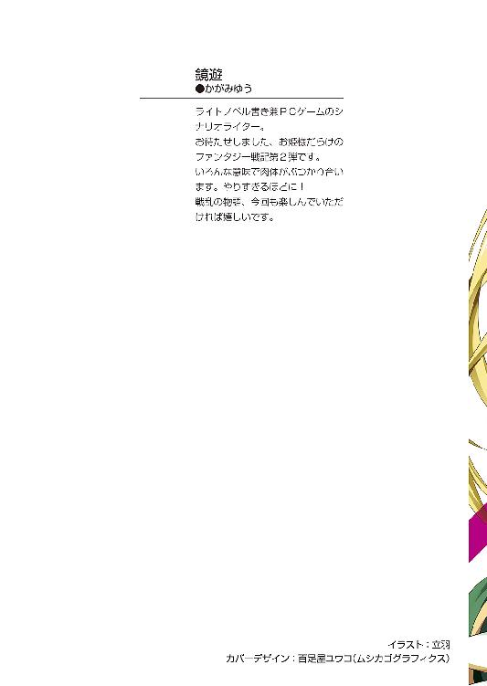
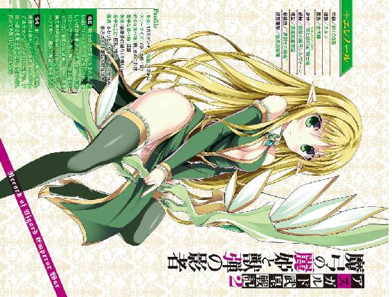
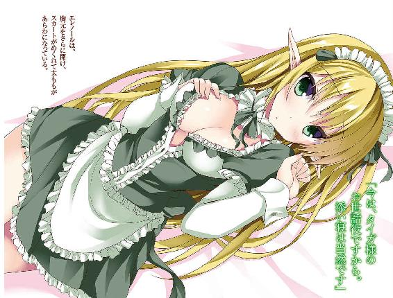
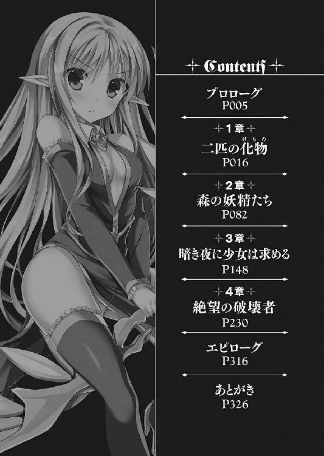
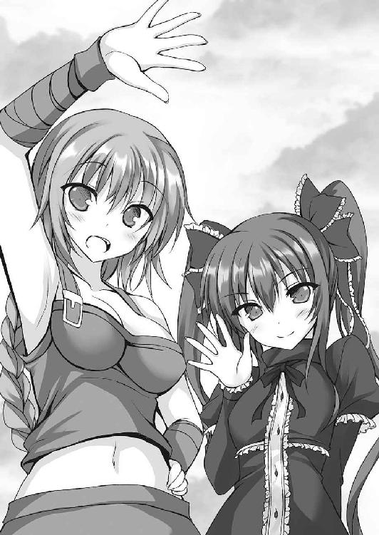
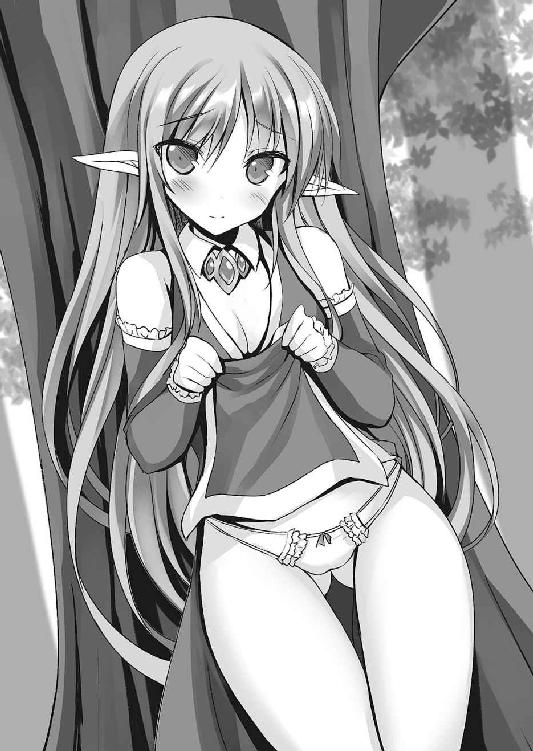
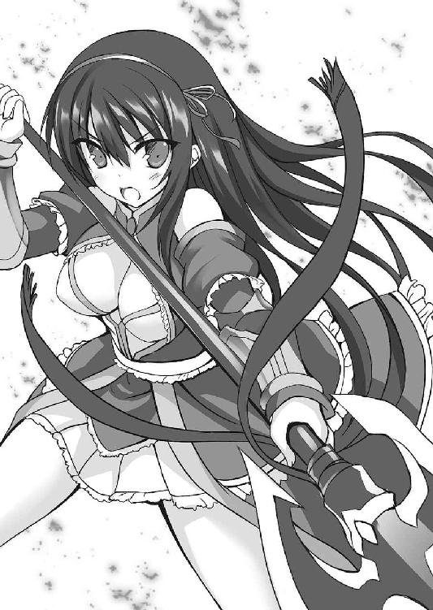

| アスガルド武皇戦記2 魔弓の麗姫と獣弾の影者 (富士見ファンタジア文庫) | |
| 鏡 遊 | |
| (2016) | |



アスガルド武皇戦記２
魔弓の麗姫と獣弾の影者
鏡遊

富士見ファンタジア文庫
本作品の全部または一部を無断で複製、転載、配信、送信したり、ホームページ上に転載することを禁止します。また、本作品の内容を無断で改変、改ざん等を行うことも禁止します。
本作品購入時にご承諾いただいた規約により、有償・無償にかかわらず本作品を第三者に譲渡することはできません。
本作品を示すサムネイルなどのイメージ画像は、再ダウンロード時に予告なく変更される場合があります。
本作品は縦書きでレイアウトされています。
また、ご覧になるリーディングシステムにより、表示の差が認められることがあります。
口絵・本文イラスト 立羽

プロローグ
見渡す限りの荒野が広がっている。
まばらに草木が点在し、大小様々な岩が転がるばかりの、枯れた大地だ。
武皇大陸で覇権を争う、五つの種族による五大国。
人間の国家〝湖と平原の国〟、そして大陸最大の版図を誇り、帝国とも呼ばれる魔族の国家〝闇と塔の国〟の国境地帯である。
多くの国を併合してきた帝国も、ここ数年は他国への侵略を控えていたが、突如として牙を剝き、フィムテ国境へと軍を進めてきた。
エルズニルの兵力は約七万。
防衛にあたったフィムテの兵力は、国境周辺の防衛戦力をかき集めても約三万である。
瞬く間に、帝国軍は三つの砦を陥落させ、最大の城塞〝ジムザ〟へと至りつつあった。
荒れ果てた大地に建つ城塞ジムザに、帝国軍は猛攻を仕掛けている。
エルズニル帝国は、魔族を頂点とする支配体制を確立させているが、他にも多くの種族が流入し、軍にも魔族以外に人間やエルフなどの五種族、さらに獣人や妖魔の姿も多く見られる。
特に戦闘に優れた種族を選抜し、混成軍を結成して戦線に投入するのが常だ。
陣形は、大群にふさわしい堂々たる横陣である。
部隊を横一列に並べ、数にものをいわせた分厚さと、あらゆる状況に即座に対応可能な幅の広さを持たせている。
陣の先頭には、矢も槍も恐れず、身軽に飛び込んでいく獣人や妖魔を配置し、彼らを魔族の指揮官が制御して、陣形を維持する。
さらに陣の後部から、魔術師たちが的確な位置へと遠距離攻撃魔術を撃ち込んでいく。
兵の数と質、双方をあわせもった帝国軍だからこそ、奇をてらわずに敵軍を圧倒可能なのだ。
しかし──
「なっ、なんだ!? いったい、どうなっている!?」
小隊長である魔族が、馬上で慌てふためきつつ叫んだ。
その帝国軍が真っ二つに割れている。それも陣形のもっとも分厚い部分──本陣だ。
ジムザから討って出たフィムテ軍の部隊は、縦陣で突撃を繰り出してきている。
騎馬部隊のみで構成された部隊による、打撃力を活かした一点突破戦術だ。
フィムテは平原の国であり、必要もあって騎馬技術が発展している。
彼らの多くを構成する東方部族は、元から馬の扱いに長けた者たちでもある。
だが、いくらフィムテの騎馬軍団でも多勢に無勢、陣の内部に入り込んだところで、取り囲まれて終わりかと思われたが──
「ば、化け物！ 化け物だあ！」
「ええい、取り囲んで討ち取れ！ 相手は一人だ！」
帝国の騎兵が剣で槍で魔術で、たった一人の敵兵に立ち向かっていく。
その敵兵は、黒い髪を後ろで結び、黒い服を着た少年である。
驚いたことに少年は歩兵であり、しかも──剣の一本も持っていない。
高く跳躍して馬上の帝国兵を殴りつけ、蹴り飛ばし、斬りかかってきた歩兵の剣を軽くかわして頭から投げ落とす。
少年の両腕、両足が淡い光に包まれている。
大陸の大気に含まれる、ごくごく細かい金属──〝オリハ〟を集め、肉体に宿らせているのだ。
オリハは、神気と呼ばれる力を秘めており、その力は肉体を強化する。
彼は集めたオリハで強化された肉体で、拳や蹴り、投げ技をもって戦っているのだ。
少年はフィムテ兵である。彼は単独で帝国の陣をかき分けるようにして進み、血路を開いている。
「......っと、やっと着いたか。さすが最強の帝国、手こずらせてくれたなあ」
「お、おまえは......い、いったいなんだ......！」
少年は、立派な武装を身につけた中年の指揮官の前に立ち、返り血にまみれた顔で不敵に笑った。
単独で帝国軍を割って進撃してきた少年の姿に、その指揮官──フィムテ攻略軍の将軍は驚きを隠せない様子だ。
「俺はただの錬武士さ」
「錬武士......だと!?」
錬武士はオリハを集めて壊れた武器に応急処置を施すだけの、そもそも戦闘に参加しない兵士のことだ。
間違っても、進軍の先頭に立って突っ込んでくることなどあり得ない。
「そんなに怖がることはない。あんたの相手は──俺じゃない。将をもって将を討つ。それくらいはわきまえてるさ」
「お疲れ様、タイガ。まさか本当に一人で帝国軍を分断しちゃうとはね......」
タイガの背後から、ゆっくりと騎馬の集団が近づいてくる。
先頭に立つのは、黒髪の美しい少女──フィムテの騎士姫カグヤだった。
つややかな長い黒髪に、透明感のある整った顔立ち。
赤を基調とした服装で、胸元は豊かな二つのふくらみが強調されている。馬が一歩進むたびに、胸が大きく揺れた。
スカートは短く、長い足がすらりと伸びている。適度な肉づきで、肌は透けるように白い。
敵である帝国兵たちが、ぽかんとしてカグヤの顔を凝視している。
特に、カグヤに驚きはない。彼らが浮かべている表情は見慣れているからだ。
史上もっとも美しい騎士姫──それがカグヤの二つ名である。
「馬鹿どもめ！ 敵に見とれるな！」
将軍は部下を 咤すると、手にしていた長剣を高く掲げた。
咤すると、手にしていた長剣を高く掲げた。
「騎士姫カグヤ！ 武皇大陸のならいにより、将をもって将を討つ！ 覚悟はいいか！」
「さすが帝国、いい指揮官をよこすわね」
カグヤは将軍に、にっこりと微笑んでみせた。
敵陣深くに斬り込んだ──そういえば聞こえはいいが、数千の敵に包囲されているということでもある。
カグヤが率いている騎兵は、せいぜい三百程度。タイガの進軍が速すぎて、ついていけたのはカグヤ以下それだけだったのだ。
数で圧倒的に優位に立ちながら、一騎打ちに応える。最強の帝国の将軍らしい、堂々たる態度だった。
「では──いざ尋常に勝負！」
カグヤは、東方部族の伝統的な掛け声とともに、右手をかざした。
一瞬で地面に魔法陣が現れ、そこから真紅の長槍が姿を現す。カグヤは槍を摑むと、ひゅんっと一回転させて穂先を将軍に向ける。
「それが大陸王の武具──神槍グングニールか！」
「そっちも覚悟はいいわね！」
カグヤは馬を走らせ、槍を構えて突っ込んでいく。真紅の槍グングニールの穂先や柄の周囲に、いくつもの魔法陣が浮かび上がる。
グングニールには、数十種類の魔術の術式が込められている。
槍そのものの硬度の強化、軽量化、さらにカグヤの身体能力を向上させる魔術がいくつも同時に発動しているのだ。
「悪いな、騎士姫殿！ 史上最弱を相手に覚悟など不要！」
将軍は不敵に笑うと、長剣を大きく振るった。槍ですらまだ届かない間合いだ。
だが──長剣は、いくつもの節に分かれて長く伸びた。短い刃をいくつも組み合わせ、伸び縮みする機巧で繫いでいるらしい。
「これは！」
長剣はムチのようにしなりつつ、カグヤに襲いかかってくる。カグヤは、かろうじて槍を一閃させて、長剣の一撃を弾いた。
同時に、ぱっと光が飛び散って、グングニールの周囲に浮かんでいた魔法陣が一瞬にしてすべて消滅する。
「くっ......！」
カグヤは、槍を握った手に重い衝撃が伝わってくるのを感じた。
「ふははは、我が蛇節剣は魔術の効果を消し飛ばす！」
武皇大陸の優れた戦士が扱う武器、召喚武装──
それらは大陸の大地に眠り、強い意志に呼応してその姿を現す。
そして、召喚武装には、閃技と呼ばれる特殊な能力が宿っている。
将軍の奇妙な剣の閃技は、魔術を操る者が相手ならば、絶大的とも言える効果を持っているようだ。
「いくらグングニールでも、私の前では無駄に巨大なだけの、ただの槍だ！」
将軍は、狂ったように長剣を振るい続ける。いや、めちゃくちゃに振り回しているように見えて、一撃一撃が的確で鋭い。
魔術を無効化させる閃技といい、剣の腕前といい、将軍は個人的な戦闘技能にも長けている。七万の大軍を任されているのは、伊達ではないようだ。
だが──カグヤは、またにっこりと微笑んでみせた。
「なにを笑うか、騎士姫！」
「わたしの笑顔ほど、最高の贈り物はないでしょう？」
カグヤは笑いながら、グングニールを構え直した。
「これから死にゆくあなたには──」
「............！」
将軍は憤怒の表情を浮かべ、剣をさらに高速で振るう。あまりに速すぎて、剣が複数に見えるほどだった。
だがカグヤは少しも恐れることなく、鋭く槍を突き出した。グングニールが真っ赤な光をまとい、その光が真紅の軌跡を描いていく。
「うおおおっ!?」
将軍が絶叫を上げ、馬上から転がり落ちる。
カグヤが繰り出した突きは、一度ではなく二度三度──いや、目にも留まらぬ速さで七度も突いていた。
その七度の強烈な突きは、将軍の蛇節剣の繫ぎ目を的確に貫き、短い刃を繫いでいた金具を破壊する。
蛇節剣は、空中でばらばらになり、地面に転がっていく。
「あああああ......！」
将軍は目を剝いて、固まっている。召喚武装である剣が破壊されたことで、使い手である将軍にも苦痛が走っているのだ。
「ば、馬鹿な......史上最弱の騎士姫が、この私の剣を......」
将軍が驚くのも無理はない。高速で振り回されている剣に突きを合わせ、しかも繫ぎ目だけを破壊するなど、尋常の使い手では不可能な芸当だ。
「わたしをどう呼ぼうが勝手だわ。でも、あなたの負けは絶対的な事実よ」
「............っ！」
カグヤは、グングニールの穂先を倒れた将軍の首筋に突きつけた。
もはや、真紅の騎士姫は史上最弱などではない。
その事実を、この場にいる誰もが理解しているだろう。
「わたしの笑顔を見られた上に生き残ったなんて──幸運よ、あなたは」
カグヤは微笑んでから、ちらりと視線を横に向けた。
すぐそばで、タイガが偉そうに腕組みしてカグヤを見つめている。
カグヤが最弱などではないことを、彼だけはずっと信じてくれていた。
タイガが信じてくれたからこそ、カグヤは戦い続け──汚名をすすげるようになった。
彼女もまた、そう信じている。
「へえ......グングニールは最高の使い手を選んだようですね」
カグヤと将軍の一騎打ちの現場から遠く離れた、小高い岩山の上。
そこに、一人の青年の姿があった。
青みがかった髪を長く伸ばし、頭に白い布を巻いている。
ずいぶんと背が高い。その身体に、ふわりとした白い衣装をまとっている。
「これでエルズニルは引きますかね。まあ、魔族のお姫様の目的は脅しと嫌がらせでしょうし、無駄なことはしないでしょう」
青年の視線の先で、実際に帝国軍は撤退を始めている。
あざやかな引き際だ。早すぎるほどだが、やはり帝国は本気ではなかったのだろう。
「それでは僕も帰るとしますか。グズグズしていると、またられてしまう」
青年は柔和な笑みを浮かべ──その背後で、突如巨大な蛇の化け物が起き上がった。
人よりもはるかに大きなその蛇は、いきなり青年に襲いかかり、一口で丸吞みにしてしまう。
青年は悲鳴すら上げず──蛇は、大地を滑るようにして走り出した。
１章 二匹の化物
武皇大陸は、混沌の大地である。
全土で精霊力が大きく乱れており、大陸内での気候の変化が激しく、砂漠と雪原が隣接している地域すら存在する。
迷い込めば決して出ることはかなわない魔の森、有毒な瘴気に包まれた険しい山岳地帯、広大な炎の海が広がる焦土──
この異常な大地には、二十種以上の種族が住んでいる。
人間、エルフやドワーフなどの妖精、獣人、魔族、妖魔、魔獣──
そして、それらすべての天敵となりうる──〝亜神〟と呼ばれる怪物たち。
そんな混沌の大地に──五百年前、一人の男が現れた。
のちに大陸王と呼ばれたその男は、多くの種族をまとめ上げ、軍を起こして亜神たちと戦い、亜神の王を見事に討ち果たした。
大陸の統一を果たした男は、その後間もなく急死を遂げ、彼が築いた国は分裂してしまう。
それは人間、エルフ、ダークエルフ、ドワーフ、魔族の五大種族が支配する五大国。
その頂点に立つのは、五人の騎士姫たち。
騎士姫たちは、大陸王に仕えた最強の騎士であり、その寵愛を受けた姫でもある。
大陸王に与えられた〝大陸王の武具〟と呼ばれる強大な力を秘めた召喚武装を操り、一軍にも匹敵する戦闘能力を持つ。
騎士姫たちは大陸王の死後、大陸の覇権を巡り、争うこととなる。
彼女たちの最終目標は〝大陸王の宝剣〟と呼ばれる、かつての主の愛剣。
他の騎士姫たちを倒し、頂点に立った者がその偉大なる剣を手にできると言われている。
騎士姫たちは、五百年というあまりに長すぎる年月を戦争に費やしてきた。
だが現在、滅びたはずの亜神たちに復活の兆しがあり──
五百年の戦乱に大きな変化が起き始めていることを、一部の者たちは敏感に感じ取っている。
しかし、そんな者たちでもまだ知らない。
亜神と同じく、大陸王に滅ぼされた者たちがいて──
錬武士と呼ばれた彼らの生き残りが、世界に大きな波紋を起こしつつあることを。
カグヤ率いるフィムテ軍の、国境での防衛戦は終わった。
将軍がカグヤに敗れ、捕縛されると、エルズニル軍はあざやかに撤退していった。
エルズニル軍は最高指揮官が捕えられたとはいえ、まだフィムテ軍に対して圧倒的優勢だったのだが──
陥落させたフィムテの砦も次々に放棄し、あっという間に国境の向こうにまで下がってしまい──
兵力で劣っているフィムテ軍は追撃をかけなかった。
エルズニル軍の撤退を確認したところで、ようやくフィムテ軍は警戒を解いた。
まだ国境地帯を注意深く監視する必要はあるが、騎士姫が長く首都を空けるわけにもいかず、カグヤとフィムテ軍は首都キオウへと帰還した。
キオウは、〝湖と平原の国〟と呼ばれる所以となった広大なアウルム湖に接する城塞都市である。
街の中心に巨大な王宮があり、政治の中枢や軍関係の施設も含まれている。
さらに、王宮のもっとも奥まったところに、騎士姫の住居がある。
三階建てで、さほど大きな建物ではないが、厳重な警備が敷かれており、中に入れるのは騎士姫の側近だけだ。
「う、うーん......なにをしてるんだろ、俺......」
騎士姫カグヤの寝室──側近の中でもごく一握りの者しか入れないその部屋で、タイガは困惑しきっていた。
国の頂点に立つ者の私室だけあって、冗談のように広く、ベッドや調度は見た目は質素ではあるが、質の良いものが置かれている。
しかも、寝室の隣には浴場まである。貴族の住居でも個人用の浴場は珍しいが、騎士姫ともなれば専用の浴場があるのだ。
「な、なにしてるのよ、タイガ！ 早く来なさい！」
寝室と浴室を隔てる引き戸の向こうから、カグヤの声が響いた。
「あ、ああ......」
浮かない声で返事をするタイガの顔には、厚手の布で目隠しがしてあった。
タイガは少しためらってから、思い切って戸を開けて、浴室内に入る。
「......それ、見えてないでしょうね？」
「さっき、自分でも試してただろ。真っ暗だよ」
そう、タイガにはなにも見えていない。ただ、事前に浴室を見せてもらい、どこになにがあるかは把握している。
カグヤの気配は、見えなくても感じ取れる。感覚を鍛え上げているタイガには、なんでもないことだ。
「じゃあ......こっち、来なさい」
歯切れ悪く、カグヤは言った。それから、ぺたりと床に座り込む気配が伝わってくる。
おそらく──いや、間違いなく彼女はなにも身につけていない。
全裸だ。大きすぎるほどの胸も、くびれた細い腰も、丸みを帯びた尻も、適度な肉づきの太ももも、すべてが目隠しの向こうではあらわになっているはずだ。
ちなみに、タイガのほうは服を着たままで、ズボンの裾だけまくっている。
「ほ、ほら、桶よ。あと、この布を使って」
「あ、ああ......」
タイガは目隠ししたままで、差し出された桶と布を受け取った。
大陸での入浴作法は国や種族によって異なるが、フィムテでは浴槽に溜めた湯や水を桶ですくって身体を流し、目の粗い布で全身をこするのが一般的だ。
タイガは浴槽で湯をすくい、カグヤの背中に一気にかけた。
「ふあ......気持ちいい......」
カグヤが、とろけるような声で言う。
彼女は綺麗好きで、戦場でも水浴びを欠かさないほどだ。
ただ、なぜタイガがカグヤの入浴を手伝っているかというと──
「ああ......生き返るわ......これで、少しはまともに身体も動くようになるかしら」
「......おまえは無茶をしすぎなんだよ。研ぎの反動がまだあるんだから」
タイガは、続けて何度もカグヤにお湯をかけていく。
錬武士──大陸のほとんどの人間は、〝破損した召喚武装を一時的に修復する能力を持つ者〟と認識している。
それは間違いではなく、錬武士の技術はたいした苦労も必要なく習得可能だ。あくまで武器を直すだけで、戦闘には参加しないため、軍では軽侮されている。
しかし、本来の錬武士──大陸王に滅ぼされた者たちは、武器の修復以外にも多くの技術を持っていた。
みずからの身体にオリハを宿し、体術をもって戦う。それも、錬武士の芸の一つ。
それらの技術を今に伝える唯一の錬武士が、タイガなのだ。
研ぎ、という技は〝存在自体が武器〟であるという騎士姫の身体に触れながら、オリハを流し込むことによって、本来持っている力を最大限に発揮することを可能とする。
だが、研ぎによる強化は、カグヤには大きな負担となる。
カグヤが操るグングニールは、五百年に亘る酷使によって、目に見えない破損がいくつもあり、いつ壊れてもおかしくない。
使い手──カグヤの生命力を吸い上げることで、かろうじて形を保っているのだ。
研ぎは、生命力を吸われて弱っているカグヤの身体を、無理矢理に動かすということでもある。
国境での将軍との戦いのように、派手に動き回れば反動が生じる。
その反動は強烈で、一人で風呂に入ることすら難しくなってしまう。
そこで、周りには伏せている研ぎのことやカグヤの身体の状態をわかっているタイガが、入浴の手伝いという大役を仰せつかったわけだ。
「やっぱり、アーシャに全部話して、あいつに手伝ってもらったほうがいいんじゃ......」
タイガは、桶を置いて、布を取り上げながら言った。
アーシャは、近衛部隊所属の戦士だ。まだ十五歳の少女だが、先日のシルフィン・フォウとの小競り合いから、亜神軍団との戦いまで、カグヤのそばについてくれていた。
元々は、史上最弱と言われていたカグヤを軽蔑していたようだが、今はこの騎士姫の事情をいくらか知り、敬意を向けている。
「あの子にはいろいろ背負わせてるでしょ。ふ、普通の研ぎのことは知られてるし......真面目な子なんだから、これ以上負担はかけられないわ」
「クソ真面目だからなあ、アーシャ......」
負傷を治療する、〝通常の研ぎ〟のことはアーシャに知られている。
これ以上のことを教えるのは、戦士としての経験が浅い彼女には負担になるどころか、命取りにもなりかねない。
「って、今は面倒な話はナシよ！ ほら、従者なんだからさっさとお世話して！」
「はいはい、お姫様」
タイガは元々は錬武士としてフィムテ軍に参加していたが、今は〝騎士姫の従者〟という立場にある。
お姫様の命令には逆らえないのだ。
タイガは見当をつけて、布をカグヤの背中に当てる。
布越しでも、熱く柔らかな肌の感触が伝わってくる。
「ふあー、いいわね......そうよ、もうちょっと優しく......」
「あ、ああ」
タイガは生唾を吞み込みそうになりながら、答えた。
カグヤの肌は、信じられないくらいなめらかで、手が布越しに吸いつきそうなほどだ。
視覚が封じられているからか、手先の感触が異様にはっきりしている。
浴場に若い男女が二人だけ。しかも、ついこの前、ベッドの上でただならぬ経験をしたばかりだ。
タイガはカグヤの柔肌の感触を、甘い香りを、魂から絞り出されたようなあえぎを生々しく記憶している。
それにしても、妙なことになってる──と、タイガは不思議な気持ちになる。
タイガとカグヤは、元々は幼なじみだ。
とはいえ、身分も立場もまるで違う。山中を駆け巡って修行していたタイガと、騎士姫になるための修行を積んでいたカグヤが、たまたま出会ってしまったというだけ。
それが、今はこうして騎士姫と従者という関係になり、風呂で背中を流している。
出会ったばかりの頃のカグヤは、タイガと大差のない体形だった。
だが、いつの間にか胸は大きくふくらみ、腰は柔らかな曲線を描いている。
それに、尻もなんとも言えない丸みがあり、軽く触れるだけで、ぷりんと揺れる。
「あ、あの、ちょっとタイガ？ そ、そこを洗えなんて言ってないけど......」
「............はっ!?」
タイガは、ぎょっとして手を離した。
知らぬ間に、背中を洗っていた手が下へ下へと下がり、カグヤの小ぶりな尻に触れてしまっていた。
「わ、悪い！ つい、ほら......ま、前が見えないから！」
「ほ、本当かしら......わざとじゃないの......？」
カグヤの不機嫌そうな声が聞こえてくる。だが、本気で怒っていないようにも思えた。
「あ、あんたけっこう......いやらしいわよね......と、研ぎのときも最初はためらったりしてるくせに、最終的にはもの凄い感じで責めてくるし......」
「それは......しょ、しょうがないだろ。中途半端にやっても研ぎにはならないんだよ！」
全身にまんべんなく触れてオリハを流し込み、特に刺激が強いところを重点的に責めれば、効率的に研げる。
それは、間違いのない事実なのだが、タイガはなぜか少し後ろめたかった。
「そ、そうだったわね......ああ、思い出したわ。確認しておきたかったんだけど......」
「なんだ......？」
タイガは、首を傾げる。
「エルズニルの将軍と戦ったとき、ヴォースとやり合ったときより動きが鈍い感じがしたのよ」
「......もしかすると研ぎの効果が落ちてるのかも」
肉体を強化する研ぎは、錬武士が五百年かけて磨き上げてきた技ではなく、タイガが編み出したものだ。
しかも、カグヤにしか使ったことがない。
だが、研ぎは技名のとおり、肉体を刃と同じように研ぎ澄ますことだ。
肉体を使うごとに、また摩耗していってしまうのかもしれない。
「ね、ねえ......タイガ。まだエルズニルも引き下がるかわからないし、たぶん亜神もまた来る......わよね？」
「そりゃあ、そうだろうな」
そこを否定するほど、タイガは楽観的ではない。
「だったら、臨戦態勢でいないと......いけないわよね？」
「......カグヤ？ おまえ、なにを言って......」
言いかけて、タイガは気づいた。というより、なぜすぐ気づかなかったのか。
カグヤは、すすっと身体を寄せてくる。わずかな空気の揺れで、タイガはそれを察した。
「つ、ついでだから......少し、研いでおいて......」
「......まだ、前の反動も残ってるんだろ......」
「反動もなにも、殺されたら終わりなんだから......い、いいのよ......」
「............」
タイガは黙ったまま、一瞬考え込む。
カグヤの言っていることは、大きく間違っているとは言えない。
グングニールのせいで弱っているカグヤを無理に強化することは避けたいが、それでは彼女の戦闘能力が落ちてしまう。
となると──
「って、こら！ 迷ってるフリしながら触ってる！」
「え？ あ、あれ!?」
別にタイガはとぼけているわけではなかった。
しかし、カグヤに言われるまでまったく気づいていなかった。
悩んでいる間に、布を手放し、カグヤの後ろから手を回して直接彼女の胸に触ってしまっていたことに。
手のひらに収まらない圧倒的な大きさと、弾むような感触。
「あ、いえ......これでいいのよね。わ、わたしの胸......からオリハを流し込むのが、一番効率がいいんだから......それなら、すぐに研ぎも終わるし......」
「そうなる、かな......」
タイガは歯切れ悪く言った。
いくらなんでも、あっさりと欲望に負けすぎだった。
「も、もうやっちゃったんだから......そのまま済ませてよ。変な気遣いはナシ！」
「そう......だな......」
タイガは頷き、細かいことは忘れて、研ぎを始める。
カグヤの身体に一瞬、タイガの手足に刻まれた魔法陣と同じものが浮かび上がる。
彼女にオリハを注ぎ込みやすくするための、〝入り口〟をつくったのだ。
これで、研ぎの準備は整った。
タイガはオリハを手で集めつつ、カグヤの身体に流し込んでいく。
「んんっ、あっ、んんあっ......」
カグヤの口から、細い声が漏れた。
研ぎといっても、端から見れば胸を揉んでいるだけだ。
ただ揉むだけではない。圧倒的な量感のふくらみを、下から持ち上げるようにしたり、円を描くように動かしたりと、触り方にも変化をつけている。
「んっ、はあっ、んんっ......タ、タイガ......なんか上手くなってる......」
「そ、そうか......？」
そんな自覚はなかったが、確かに少し手慣れてきたかもしれない。
こうしてカグヤに研ぎをするのは三度目。まだためらいもあるが、女の子の身体そのものに慣れてきている。
「あっ......！」
カグヤが、びくんと身体を震わせた。
タイガが、胸の先端の突起を指で挟むようにしたのだ。そのまま、こりこりとこすり上げていく。
「くうっ、あっ......変な......感じ......あふっ、あっ......」
カグヤの口から甘いあえぎが漏れてくる。
「あんっ、引っ張ったら......んっ、ダメっ......」
「............」
ダメ、と言われてもここまでやって止められるわけがない。
タイガはさらに強く突起をこすり、ぎゅっと摘んで引っ張った。
「あふっ......！ ば、ばか......調子に乗って......ダメっ......」
ダメと言いながら、彼女は少しもタイガの手から逃れようとしていない。
むしろ、背中をぴったりタイガにくっつけてきて、甘えるような体勢だ。
「そ、そんなに、わたしの胸、いじっちゃ......んっ、もうっ、ばか、ばかぁ......」
「カグヤ......」
タイガはもう言葉を持たず、無茶苦茶に胸を揉み、乳首をこすり、オリハを注ぎ続ける。
このまま、いつまでもこのふくらみに触れ続けていたい──
「んっ、あっ、タイガっ......あっ、わたし、もう......ダメ......！」
びくん、とひときわ強くカグヤの身体が震えて──
小さな吐息とともに、彼女が脱力した。どさりとタイガの胸にもたれかかってくる。
タイガの手は、しっかりとカグヤの二つのふくらみを鷲摑みにしたままだ。
「はぁ、はぁ、タイガ......そんなに、わたしの胸、好きなの......？」
「......ああ、研ぎなんかじゃなくて普通に触りたいくらいだ......」
「ば、ばか......研ぎ以外じゃ......ダメよ......絶対、ダメなんだから......」
カグヤは、途切れ途切れに言い、そっとタイガの頰に触れてきて。
手を滑らせるようにして、目隠しを外してきた。
「お、おい......」
タイガの目の前に、カグヤの輝くような裸身が現れる。
カグヤは身体をひねるようにして、タイガに寄り添ってくる。
大きな胸がタイガの身体に当たって潰れながらも、わずかに桃色の乳首が見えている。
本当に彼女は美しい──タイガは思わずため息を漏らした。
「カグヤ......」
「本当に、ばかね......これ以上、なにも言わなくて......いいでしょ......」
タイガはその言葉に小さく頷いて。
ゆっくりと、カグヤと唇を重ねた。
彼女の可憐な唇を挟むようにして味わいつつ、舌を這わせてその口内へと入っていく。
「んっ......」
カグヤは一瞬驚きつつも、タイガの舌を受け入れ、みずからの舌を絡めてきた──
「ああああああっ、またやっちゃったわ......！」
カグヤが、寝室のベッドに四つん這いになり、絶叫した。
服を着てはいるが、スカートがかなり短いので白い下着が見えてしまっている。
ベッドから少し離れた位置に立つタイガは、ついちらちらと下着に目をやってしまう。
裸の身体をまさぐり、時間を忘れてむさぼるように濃厚な口づけを交わしたあとでも、まだタイガの欲望は治まっていなかった。
あまり刺激的な姿を見せてほしくない、と本気で思うほどだった。
二人きりなのだし、ちょっとしたことで一線を越えてしまいかねない。
だが、それはできない。
騎士姫という存在は、〝大陸王の妻〟という名目になっている。
五百年も前に死んだ男の妻もなにもないが、騎士姫は結婚できず、もちろん男との性的な関係を持つことも許されない。昔から伝わる、騎士姫に課せられた掟なのだ。
もし、タイガがカグヤと肉体関係をもってそれを破ったらどうなるか──既に多くの問題を抱えているカグヤに、試させるつもりはなかった。
ただでさえ、騎士姫は〝存在そのものが武器〟と言われている。
生き物ではなく、大陸王が扱う武器の一つ、ということらしい。
そのあたりの詳しい意味は不明だが、大陸王の武具という並外れて強力な武装を持っていたりと、普通とは異なる存在なのだ。
迂闊なことをすれば、なにが起きるかわからない。
「というか、カグヤ。そんなに叫ばなくても......」
「うううっ、これじゃわたし、痴女じゃないの......なにしちゃってるのよ、あんなに好き放題に......む、胸揉まれて......あんな、ずっと......口づけ、とか......」
カグヤは、時々我を忘れてタイガを求めてくることがある。
彼女は、十七歳の少女だ。それなりに欲望というものがあって当然だ。
だがカグヤはそれを認めようとしない。暴走したあとは、こうして自己嫌悪に浸っている。
「だ、だいたい、タイガが調子に乗っていろんなことするから！」
「俺に当たられても......それに、研ぎは必要だったんだし......」
「そ、そうだけど......わたしは悪くないんだから！ うわああああんっ！」
遂に、カグヤは泣き出してしまった。
八つ当たりもいいところだが、好きにやらせておいたほうがいいだろう。
彼女は純粋な乙女なのだ。
欲望のままに彼を求めてしまったことが恥ずかしいだけだ。
「ま、放っておいてもそのうちご機嫌を──」
タイガは言いかけて、ぴくりと顔を上げた。
そして──
「カグヤっ！」
「えっ......？」
タイガは跳躍して、ベッドの上のカグヤを抱えて床を転がっていく。
それから、カグヤを押し倒すような体勢になり──
「ちょ、ちょっと......ま、まだ続きを？ で、でもあれ以上は......わたし......」
「そうじゃない！ いいか、俺から離れるなよ！」
タイガがそう言った瞬間──
突然、寝室の壁が崩壊した。
「なっ、なんなの......!?」
寝室に──巨大な蛇が姿を現していた。ベッドや調度を押し潰し、天井に届くほどの巨体がとぐろを巻いている。
「これ、普通の蛇じゃないわよね。魔獣......？」
「蛇に似た魔獣もいるが、こいつは違う。いや、こいつはどうでもいい」
タイガの両手に刻まれた魔法陣が淡く輝き、オリハが集まり始める。
カグヤも既にグングニールを召喚し、油断なく構えている。
「......来るぞ、カグヤ！」
蛇の背中が割れ、そこから二つの影が飛び出してきた。蛇の身体は大きく裂け、真っ二つになると、数百もの光の粒になって散った。
「あら、あらあらあら、これは驚きだわぁ」
飛び出してきた影の一つは──女性だった。
水色の髪を長く伸ばし、前髪で片目が隠れている。
まとっているのは、肩や胸元、太ももの付け根まであらわになっていて、身体にぴたりと密着した奇妙な服だ。
腕には肘まである手袋をつけ、長靴をはいている。
ほとんど下着姿のような格好だ。
見た目は、二十歳前後の人間に見える。
だが、額に菱形の宝石のようなものが輝いている。
それは、〝第三の目〟と呼ばれる、亜神にしか存在しない器官だ。
その目で、亜神は神気や風の流れを感じると言われている。
亜神兵というザコの第三の目は黒のみだが──
強力な亜神将の第三の目は様々な色に輝き、角のような形状へと変化する。
水色の髪の女は、第三の目も同じ水色──つまり、亜神将だ。
「あなたが騎士姫カグヤねぇ。これはこれは、思った以上だわぁ。史上もっとも美しい騎士姫、という二つ名は伊達ではないようねぇ」
亜神──いや、亜神将の美女は妖艶な笑みを浮かべた。
「それほどでもない......と言いたいところだけど、あなたよりはマシね。顔が整っていても、中身に品がないんでしょう」
「ふふふ、言うわねぇ。そういう気の強いところもいいわぁ。庭園のたおやかな花より、野に咲く花のほうが好みなのよぅ」
「あなたに好かれるくらいなら、上品な庭園の花でいたいわね」
カグヤは怯まずに、亜神将を睨みつけている。確かに、彼女は野に咲く花だ。
雨にも嵐にも負けずに、一輪で咲き続けるだろう。
「ますます気に入ったわぁ。いいこと、ディヴァ。あなたは手を出さないでねぇ」
「僕はただの従者でございますゆえに」
亜神将の背後に、もう一体の亜神が控えている。
頭に白い布を巻き、ふわりとした白い衣装をまとい、まるっきり人間の青年にしか見えない。
「そうそう、身の程をわきまえるというのは大切よぅ。ところで、そこに一匹、わきまえてないお猿さんがいるようねぇ。やれやれ、騎士姫の寝室なら猿の顔を見ずに済むと思ったのにぃ」
「はは、お姉さん、俺になにかご不満でも？」
タイガは油断なくカグヤをかばったまま、亜神将を挑発する。
「わたくしはね、美しいものが好きなのよぅ。でも、人間は美しくない。はー、エルフ攻めを任されて安心しきってたのにぃ、こんなところに来るハメになるなんてねぇ」
「フィムテにも、美男美女はいくらでもいるぞ。俺もそんなに悪くないだろ？」
「厚かましい猿ねぇ。わたくしの視界にあなたがいるだけで不愉快だというのに」
「ちょっと！ そりゃ美男子とは言えないし、性格は悪いし、すぐに調子に乗るけど──タイガだって真剣に生きてるのよ！ 外見で馬鹿にしないで！」
「いや、おまえのほうがひどいこと言ってるから......」
カグヤの反論に、タイガはしょんぼりしてしまう。敵よりも味方に心をえぐられるとは。
「おかしな主従ねぇ。従者など使い捨てのコマ。かばう意味なんてどこにあるのよぅ？」
「あれがかばってるように見えたのか、おまえは」
タイガは思わず、苦笑してしまう。なぜか、亜神将の従者も笑っていた。
「ま、いいや。いくら亜神将でも、たった二体で乗り込んでくるとは無茶だろ。ここに何万の戦兵がいると思ってるんだ？」
「数は問題ではないわぁ。人間などいくら群がってきてもいいけど、醜い姿なんて見たくないのよぅ。既に結界は張ってあるわぁ」
「結界......？ いや、これは......」
タイガは、ようやく気づいた。寝室内の気温が、急速に低下しつつある。
「凍ってる......？」
破壊された壁と、出入り口の扉が分厚い氷で閉ざされていく。
「自己紹介が遅れたわぁ。亜神が礼儀知らずと思われては仲間に悪いねぇ。わたくしの名は、氷嵐のセム。亜神十六将よぅ」
「十六将か......騎士姫もたいがいだが、そっちの大将どもも軽く動き回るよな！」
タイガは手足にまとわせたオリハから流れ込む神気で全身を強化し、走り出した。
寒さで凍りつきそうな身体が、熱を帯びていく。
「ちょっと、ちょっと、冗談じゃないわぁ。醜い姿を見せられただけじゃなくて、相手をしろとぉ？ 人間、分をわきまえなさいよぅ！」
「結界はこっちにも好都合だ！ 将をもって将を討つ──見物人がいなけりゃ、そんなお題目も必要ないからな！」
タイガは床を削るような速さでセムに肉薄すると、右の拳を二度続けて繰り出した。分厚い鉄のかたまりがぶつかるような轟音とともに、セムは左腕で受け止める。
「ぐっ......！ これは......！」
タイガは床を蹴って、後ろに跳躍する。右腕に痺れるような衝撃が走っている。
彼の素手での突きは、半端な召喚武装の一撃など比べものにならない威力を持つ。それをこうもあっさり受けるとは......。
「その手袋......いや、むやみに露出してる変な服がオリハの鎧なんだな？」
「わたくしも、少し驚いたわぁ。ただの拳なのに、ずいぶんと重々しいことぉ」
セムは、タイガの言葉を否定しなかった。
亜神は、大気中のオリハを集め、物質と化して鎧を形成する。
五百年前の大陸王と亜神王の戦争では、この鎧の防御に阻まれ、召喚武装の使い手たちが手も足も出ずに多くの命を散らすこととなった。
「でも、それだけのこと、それだけのことぉ。卑しい猿がこのわたくしに触れるなど......万死に値するぅ！ いいわぁ、わたくしが手ずからバラバラにしてあげるぅ！」
さらに、周囲の気温が低下していく。同時に、セムの背中から二本の触手が伸び、その先端が刃と化す。
騎士姫は存在そのものが武器、錬武士はみずからの技をもって武器となす。
そして、亜神はその肉体が武器となる。身体の一部が変形して、なんらかの武器の形を取ることが多いようだ。
先の戦で出会ったヴォースという亜神将は、腕からオリハのかたまりや石を放ち、たった一撃で城塞の建物を丸ごと一つ破壊した。
魔技と呼ばれる、亜神将の奥の手である。
このセムの刃は、ヴォースの魔技〝雷電砲〟と比べれば、一見地味だ。
だが──
「これはっ......！」
タイガは次々に襲い来る刃を、わずかな身体の動きでかわしていく。大きく動けば、隙が生じてしまうからだ。
肌の産毛を刃が削り取っていくほど、ギリギリのところをかすめている。
「あらあら、頑張るわねぇ。どこまでもつかしらぁ？」
セムは、その整った顔に妖艶な笑みを浮かべている。
彼女が振るう触手の刃は、ムチのようにしなやかに動き、しかも──動きながら根元で分裂し、刃が二本三本と増えているのだ。
刃の数が問題なのではない。タイガは、百の刃に同時に襲われようと、かわしきれる自信がある。
しかし、セムの刃は通常の武器と決定的に異なっているところがある。
「まるで別の生き物......いや、この刃、本当にそれぞれ意思を持ってるな！」
「まぁ、鋭いことぉ。そのとおり、我が刃は我が子も同然よぉ。意思を持って、あなたを切り刻んでいくわぁ！ 踊れぇ、〝千刃旋波〟！」
「若く見えたが、ずいぶん子だくさんだな！」
タイガは軽口を叩きつつも、驚きを隠しきれなかった。
彼は視覚や聴覚だけでなく、大気の流れ、殺気を感じながら戦う。
セムの場合は、一体でありながら、複数の殺気が襲ってくる。勝手の違いに、戸惑いを隠せなかった。
さらに、タチの悪いことに──
「冗談じゃ......ないっ！」
刃の一本が、血も出ないほど浅くタイガの左手の甲をかすめていった。わずかに刃が当たったところが、たちまち凍りついていく。
タイガはオリハを込めた拳でみずからの左の甲を叩いて氷を砕く。本気で殴らなければ砕けないほど堅い氷だった。軽くヒビくらいは入ったかもしれない。
意思を持つ数本の刃が、触れただけで凍りつかせてくる──
後ろに下がることはできない。すぐ背後に、カグヤがいる。
タイガには、彼女に余計な戦いをさせるつもりは一切なかった。だから──
「終わりだ、十六将！」
タイガは、両足に集めたオリハを、足の指に集中させる。長靴の中で指を曲げて、地面を嚙むようにして──駆け出した。
「............っ!?」
セムが大きく目を瞠った。彼女には、タイガが瞬間移動して肉薄してきたように見えただろう。
足の指で地面を嚙むことで、予備動作もタメも必要とせずに一瞬で大きな一歩を踏み出す。
縮地──特殊な足さばきと、オリハを一点集中させることで得た爆発的な力で瞬時に移動する技である。
セムは驚いているが、触手は独自の意思で動き続けている。
鋭く動く数本の刃の間をすり抜け、全身のオリハを逆流させて右拳に集中させる。
ドオッ、と鈍い音とともにタイガは右拳をセムの左脇腹へと叩き込む。
拳を叩き込んだ、次の瞬間には縮地で距離を取っていた。
「愚か者ねぇ、この服はオリハの鎧だとわかったのでしょぅ？ 大陸王の武具でもない限り、わたくしに攻撃は──」
嘲笑するセムの言葉が、不意に止まった。
口を開き、身体が大きく震え、背中が弓なりに反っていく。
「来たれ、風喰らいの咬獣！」
突然の声とともに、タイガが右拳を叩き込んだセムの左脇腹が──丸ごと削ぎ取られていた。
タイガは、セムから間合いを取ったまま、さらに一歩下がる。
「なんだ、そりゃ......？」
セムのすぐそばに、奇妙なものが浮いていた。
一抱えもある大きさの頭に、長い尻尾がついている。全体は、どこかおたまじゃくしに似ているようだ。
頭のほとんどが口になっており、ギザギザで鋭い歯が並んでいる。
タイガは確かに目撃した。あの巨大な口が、セムの脇腹を丸ごと食らったのだ。
「......っ、ディヴァ......なにをしてくれてるのかしらぁ......？」
「申し訳ありません。ご許可をいただく余裕はありませんでしたので、やむなく」
ディヴァと呼ばれた従者の亜神が、心から申し訳なさそうに言った。
同時に、セムが膝から頽れる。
「朧炎。使い手を見たのは、五百年ぶりですよ」
「......よくご存じだ。あんた、なかなか若作りなんだな」
錬武士は、大気中のオリハを集め、折れた刃を接合させることができる。
朧炎は、錬武士の技の一つ。接合とは逆に、オリハを敵の体内に流し込み、筋肉や臓器、骨などをずたずたに引き裂く。
オリハは鎧の上からでも流し込むことが可能で、一度技が決まれば、確実に全身を破壊するのだ。
おそらく、あのおたまじゃくしモドキが、オリハが拡散する前にセムの肉体ごと食らったのだ。臓器もいくつか消えたに違いない。
タイガは、驚かずにはいられなかった。まさか、朧炎をこんな手で防ぐとは。
そもそも、おたまじゃくしモドキはなんなのか。オリハを食らう獣など、見たことがない。
特殊な魔獣なのか、召喚獣の一種なのか──
「真なる錬武士。本当に厄介な人たちでした。大陸王でなくとも、滅ぼさずにはいられないほどに。生き残りも、この五百年の間に全滅したかと思ってましたよ」
「意外としぶといんだ。いや、意外でもなんでもないか？ ま、あんたの予想はそう外れちゃいない。いい知らせだ、俺が最後の錬武士だよ」
タイガは胸の前で、軽く握った拳を掲げ、構えを取る。
速まる心臓の鼓動を抑え、呼吸をととのえる。
「僭越ながらセム様に代わって、僕がお相手しましょう。ここまで来たので、手ぶらでは帰れませんしね。セム様のようにお若い亜神ではなく、年寄りで申し訳ないですが」
ディヴァが満面の笑みを浮かべながら、ゆっくりと近づいてくる。
まだセムの周りを漂っていた、おたまじゃくしモドキが、ふっと消えてしまう。
タイガの全身が、警告を発している。警告は、ただ一言──
逃げろ。
セムの刃にも怯まず突っ込んでいったタイガが、恐怖を抱いている。
近づいてくる敵が、最悪の脅威だと直感で気づいている。
タイガの頰を、冷たい汗がつうっと流れていった。
二人の戦士は、同時に駆け出していた。
一瞬で、タイガとディヴァが交錯する。
タイガは右の蹴りを繰り出し、ディヴァは左拳で突きを放っていた。
二人の身体が、それぞれ逆方向に吹き飛び、壁に激突する。
「タイガっ！」
「......俺が殺されても死なないって知ってるだろ？」
タイガは即座に体勢を立て直しつつ、軽口を叩く。
さっきまで黙っていたカグヤが焦っているのは、彼女もディヴァにセム以上の脅威を感じているからだろう。
「で、でも......グングニールが震えてるの......こんなの、初めて......」
「グングニールが......？」
タイガは、ふと思い出した。先のヴォースとの戦いではグングニールがカグヤに言葉を伝えてきたという。
幻聴とは思わないが、大陸王の武具といえども、槍が口を利くとは信じがたかった。
だが、他に類を見ないほどに強力な武器だ。グングニールに意思があっても不思議というほどではない。
あの真紅の槍もディヴァを恐れているのか、それとも──
「ふふふ、光栄ですね。グングニールも僕を覚えてくれていたのですか」
そのディヴァもタイガと同じように、既に体勢を立て直している。
「......おまえ、グングニールを知ってるのか？」
「特に不思議はないでしょう。五百年前の亜神王と大陸王の戦のときにも、真紅の神槍の使い手はいたのですよ」
「そりゃあ、そうだけどな......」
どうにも、このディヴァという男は不気味だ。
十六将であるヴォースやセム以上のなにかを感じさせる。
「それより、なかなかやりますね。タイガ、という名ですか。こちらもあなたを見た目どおりの歳と思わないほうがよさそうだ。真の錬武士が五百年かけて繫いできた血と技の結晶、ですか──」
「勝手に俺の自己紹介するなよ。そっちの突きも苦し紛れのものじゃなかったな」
タイガは、一撃で確信していた。ディヴァの体術は、時間をかけて鍛え上げたものだ。
戦闘の補助のためではなく、己の肉体を一つの武器として使っている。
「僕はセム様やヴォース様のような魔技は持ち合わせていないのでね。もちろん、召喚武装もありません。そうなれば、錬武士──あなたたちの真似事をするしかない」
「真似も極めれば本物すら凌駕する、か」
武皇大陸に存在した錬武士の中でも、ディヴァほどの技術を持った者はそうはいなかっただろう。
「本物を超えたかどうか、試させてもらいましょう......！」
「稽古をつけてやるよ、亜神！」
またもやタイガとディヴァは示し合わせたように、同時に走り出した。
二人が繰り出した右拳の突きが交差し、互いの顔面に直撃する。
「ぐっ......！」
「くうっ......！」
タイガはわずかに身をひねって威力を削ぎ、ディヴァは突きをくらうと同時に後ろに跳んでいた。
「おああっ！」
タイガは床を砕く勢いで踏み込みながら、腕を折りたたんで強烈な肘打ちをディヴァの脇腹へと叩き込む。
「うっ！」
ディヴァは苦痛のうめきとともに身体を折り、そこにタイガは天に伸び上がるようにしてあごを狙って掌底打ちを放つ。
「いい動きです......！」
タイガの掌底打ちを、ディヴァはギリギリのところでかわし、その手首を取った。
「............！」
肘に鋭い痛みが走った。タイガは肘関節を極められたまま、ディヴァに腕一本で投げられる。
「ちぃっ！」
タイガは舌打ちし、投げられて肘をへし折られる直前、空中で身体をひねりつつ強引に腕を引き抜き、足から着地を決める。
そのままディヴァの襟元を摑み、腰を落として、巻き込むようにして投げ飛ばす。
正確には投げるのではなく、地を這うようにして転がす──それが、錬武士の投げ技である。
「ぐはっ......！」
頭から叩きつけられたディヴァが、再びうめき声を上げる。ディヴァの頭が衝突した勢いで、床に亀裂が走っていく。人間ならば、頭が砕けるほどの勢いである。
タイガは投げ飛ばした勢いを利用して、ディヴァの頭めがけて膝を落とす。
巻き込む投げから膝蹴りまでが、一つの技──旋雷牙。
「............っ!?」
今まさにディヴァの頭を砕く直前、タイガは床を蹴りつけて高く跳躍した。
カグヤのすぐそばまで下がり、構えを取る。
「タ、タイガ？ どうしたの......？」
「カンってやつは馬鹿にならないな。三年も大陸をさすらって、鍛えてきた甲斐があるってもんだ」
タイガはまた冷や汗をかきつつ、戸惑っているカグヤのほうを見ずに言った。
敵を仕留める絶好の機会をみすみす逃したのだから、カグヤが困惑するのも当然だろう。
だが、あのまま膝を落とすわけにはいかなかった──
「確かに、馬鹿になりませんね。どんな理由があろうと、普通ならあそこで引かなかったはず。惜しかった。あの距離なら、直撃だったのに」
ディヴァが不敵な笑みを浮かべて言い、ゆらりと立ち上がる。
やはり、なにかする──なにかしでかすところだったか、とタイガは確信する。
彼は、見た。膝を叩き込む寸前、ディヴァが左手をすっと挙げるところを。
ただそれだけの動きだった。倒れた体勢から、なにができるはずもない。
亜神も魔術を使うが、魔力の流れを感じなかった。瞬時に発動する程度の魔術なら、オリハを集めて強化したタイガの肉体にはさほどの脅威でもない。
そこまでわかっていて、タイガは逃げた。
逃げろという警告は続いていたが、彼の頭をよぎったのは明確な死の予感だった。
そうだ、ディヴァはタイガに匹敵する体術の他に、もう一つなにかを持っている。
朧炎を予想外の手で防いだあの技──
「久々の殴り合いも楽しかったのですが、つい無粋な真似をしてしまいました。まあいいでしょう、僕はあなたのように体内のオリハを自在に扱うすべは持っていない。これも使ってもいいですよね」
「......どうぞ」
タイガは静かに応え、ディヴァはそっと左手を前へ突き出すように構えた。
「来たれ──閃き鳴る裂空の獣！」
「............！」
ディヴァの左の手のひらから、なにかが飛び出した。
弾丸──亜神将ヴォースがそう呼んでいたものに似ていた。
その丸いつぶては空気を斬り裂くようにして飛び、一瞬のうちに〝鳥〟へと変形する。青白い光のかたまりのようにも見える鳥が大きく翼を広げると、周囲に稲妻が迸った。
「ぐううっ！」
タイガは集めたオリハから放たれる神気を全身に巡らせ、即席の防御結界を形成する。
強力な電撃だ、まともにくらえば黒こげになってしまう──
「捻散華！」
タイガは両手を同時に伸ばし、飛んできた稲妻の鳥の翼に貫手を差し込んだ。そのまま手首を内側に大きくねじる。
オリハをまとった手首の回転は渦と化し、鳥の両翼を引き裂いた。
捻散華は本来、敵の両脇腹に貫手を深く差し込み、そのまま手首を回転させることで内臓を破壊する技である。
錬武士は肉体にオリハを流し込み、神気をまとう。ほとんどの技が魔術の効果をも破壊することが可能なのだ。
「これは驚きました......僕の獣弾をも防ぐとは！」
「獣弾？ それはまた、面白いなあ」
タイガの目は確かに捉えていた。ディヴァの手のひらから飛び出したつぶてが、瞬時に雷の鳥へと変わったところを。
「召喚魔術？ いや、魔法陣の発動は見えなかった。詠唱も短すぎる」
タイガは、三年の旅で多くの魔術師とも出会っている。異界から怪物を喚び出す召喚の魔術が発動する際には、必ず魔法陣と長い詠唱が必要になる。
召喚の魔術は、複雑な術式なのだ。
魔法陣も詠唱も必要なく発動できる人物を、タイガは一人しか知らない。
「たいした秘密はありません。僕は体内でちょっとした獣たちを飼っていまして」
ディヴァが、右の手のひらを上に向けると、そこに丸いつぶてが現れた。
「体内に埋め込んだこの球体に、獣を封じ込めてあります。召喚とは違い、既にそこにいる者を解き放つだけ」
「ずいぶん、あっさり話すんだな。たいした自信だ」
「僕はそれほどの亜神でもありませんが、組み打ちには多少の覚えもありました。その僕をあっさりと投げたあなたへの、敬意を表してですよ」
ディヴァは、にっこりと笑い──
「それに残念ながら、もうあなたと会うことはなさそうですから！」
「............！」
再び、つぶて──獣弾を放つ。
「来たれ、夜闇の翼獣！」
「............っ!?」
放たれた獣弾から、数十匹のコウモリが飛び出す。
コウモリは瞬く間にタイガの周りを覆い尽くし、視界が真っ黒に染まる。
むろん、ただのコウモリではない。飛びながら黒い煙のようなものを吐き出している。
「くそっ、これは──！」
タイガは自分の失敗を悟った。獣弾は強力でありながら発動が速すぎる。タイガの超人的な反射神経をもってしても、即応は難しい。
タイガの周りが、完全に暗闇に覆われてしまっている。自分の手すら見えないほどの濃い闇だった。
「うおおおおおおっ！」
タイガは吠え、朧炎の要領で虚空にオリハを放つ。オリハが放出する神気が、周囲の闇を払っていく。
だが、その瞬間──
「あああっ！」
「カグヤっ!?」
悲鳴が聞こえ、タイガは我を忘れて声のほうへと走り出した。
カグヤが持つグングニールに、なにか細いものが巻きついていた。
白銀に輝く細い蛇だった。今まさに、槍を握るカグヤの手にまで巻きつこうとしている。
「これも獣弾か！ カグヤ、槍から手を離せ！ グングニールは俺が──」
「遅いですよ、タイガ！ 来たれ、光輝煌めく甲獣！」
ディヴァから獣弾が飛び出し、拳大ほどの甲虫のような形へと変化し──背中が大きく割れると、まばゆい光を放った。
「くうっ、目くらましか......！」
ついさっきまで闇に囚われていたせいで、光はひときわ強烈だった。あの闇のコウモリは、布石でしかなかったのだ。
「カグヤ......！」
タイガは、目が見えないまま気配をたどってカグヤの前に立った。
カグヤの盾になりつつ、構えを取って次の攻撃に備え──
「......なに？」
かろうじて見え始めた視界の中に、崩れた壁の前に立つディヴァがいた。
彼は片腕にセムを抱え、もう一方の腕に白銀の蛇が巻きついたままのグングニールを握っている。
「おまえっ、なにを......！」
「本当は騎士姫と大陸王の武具をまとめていただきたかったのですが、まあ槍だけでもいいでしょう。セム様もお助けしなくてはなりませんしね」
そう言うと、ディヴァは壁の向こうへと身を躍らせた。同時に、巨大な蛇が現れる。
ディヴァとセムを運んできた蛇だ──
「待てっ、逃がすか！」
「逃げますよ、あなたは怖いですから」
ディヴァはとぼけて言い、両の手のひらをタイガに向けてくる。
その手のひらから、一気に数個の獣弾が飛び出し──
「来たれ、光輝煌めく甲獣！」
「......カグヤ、伏せろっ！」
タイガは怒鳴りながら、顔の前で両腕を交差させ、目を固く閉じる。
飛び出した数個の獣弾は、すべて先と同じ拳大の甲虫へと変わり、まぶしい光を放つ。
「くうううううっ......！」
太陽が目の前に現れたかのような、凄まじいまでの輝きだった。タイガの視界が真っ白に染まり──
なんとか、目を開けたときには、そこにはもう誰の姿もなかった。
「......やってくれたな！」
タイガは崩れた壁のそばまで駆け寄ったが、やはり誰もいない。ディヴァとセムは、あの蛇で去っていったのだろう。
「......っ、カグヤ、無事か！」
タイガは我に返り、カグヤのそばへ駆け寄った。言われたとおりに伏せていたらしく、床に座り込んでいる。
「え、ええ......まだ目がチカチカするけど、大丈夫よ。タイガは？」
「俺もなんともない。けど、あいつ......」
ぐっ、とタイガは奥歯を嚙んだ。
おそらく、ディヴァは本気ではなかった。グングニールを奪い、セムを連れて逃げ出すことしか考えていなかったのだろう。
「まずいわ、タイガ......グングニールが......」
「カグヤっ......！」
不意に、カグヤの身体がぐらりとよろめき、タイガは慌てて彼女を支えた。
「だ、大丈夫......ちょっとふらついただけ......」
「いいから、おとなしくしてろ。いいんだ、いいから......」
タイガは優しく言って、カグヤの背中を撫でる。
グングニールが、亜神に奪われるとは......。
あの真紅の神槍は、カグヤにとって最大の武器であるとともに、最大の弱点でもある。
カグヤとグングニールは、強い絆で結ばれてしまっている。カグヤの命は、グングニールに懸かっていると言っても過言ではない。
ただでさえ、大陸王の武具は召喚した状態では、使い手の体力を著しく削る。
その上、グングニールはカグヤの生命力を吸い取っているのだ。
グングニールが敵の手に落ちたことで、カグヤの身体はどうなってしまうのか。
タイガには想像もつかなかった。
ディヴァは、獣弾から解き放った蛇の体内にいた。
蛇は滑るようにして地を素早く這い、列車以上の速度での移動が可能だ。
蛇の体内は一種の異空間になっており、見た目以上に広い。
真っ暗で、揺れも激しいために快適な乗り心地とはいかないが、贅沢は言えない。
ディヴァのかたわらには、封じられたグングニールと、気を失ったセムがいる。
亜神将ともなれば、不死に近い肉体を持ち、高い回復力を持つ。
だが、セムはディヴァの獣弾をまともにくらっただけでなく、タイガの朧炎による損傷もあるのだろう。回復には時間がかかりそうだ。
「エルフの国は、気の毒なことになりそうですね。ま、いいですが」
ディヴァは、巻いた布の上からぽりぽりと頭をかいた。
その腕には──一本の針が刺さっている。
「......恐ろしい男ですね、彼は」
ディヴァが腕を振ると、針が抜け落ちた。そこには、細い針一本とは思えない大きな穴が空き、血がどくどくと流れ出している。
目くらましの光を放ち、逃走に成功した。大陸王の武具さえ奪ってしまえば、騎士姫などあとでいくらでも料理できる。
セムの損傷は深刻であったため、逃げを打ったことは正解だろうが──
ディヴァが放った閃光の中を、この針が飛んできた。
いや、正確には小さな針を核にして、オリハで刃を形成した短剣だった。
それは、狙いをあやまたずにディヴァの第三の目に突き刺さるところだった。
第三の目は亜神にとって重要な器官だ。
破壊されても死ぬわけではないが、能力の多くを失ってしまう。
刃が脳まで到達すれば死の可能性もあった。
タイガにはなにも見えなかったはずなのに、こんなものを正確に投げつけてきた。
オリハで刃をつくったのも驚きだが、彼の技術と判断力には驚くほかない。
「ふ、ふふふふふふ......はは、ははっ、ははははははははははははっ！」
ディヴァの喉の奥から、笑いがこみ上げてきた。
楽しい、こんなにも楽しいのは五百年ぶりかもしれない。
大陸王と争い、錬武士たちとも戦い、常に血と白刃の中にあった日々。
あのタイガという少年は、古くなつかしき、血の臭いが溢れた時代を思い出させる。
五百年の時を超えた敗残者──ディヴァとタイガは、似た者同士なのかもしれなかった。
「待て、待てっ、タイガ！」
「俺が甘かったんだ」
タイガは王宮の廊下を早足で歩きながら、背後を追いかけてくる少女に見向きもしない。
少女の名は、アーシャ。
まだ十五歳の少女で、カグヤ直属の近衛戦士。
薄茶色の髪を肩まで伸ばし、なかなかに整った顔立ちをしている。
「亜神軍団の侵攻をわかっていながら、討って出ることをしなかった。奴らがカグヤを狙っていることもわかってた。王宮に乗り込んで襲撃をかましてくる──そんなことはベルティーユだってやらない。でも、亜神は違う。違うんだ」
「だから、姫様のそばにおまえがいなくては！」
アーシャはタイガに追いつき、肩を摑んできた。
「また、亜神が来たらどうするんだ!? 姫様は、戦えないんだぞ！」
「優先順位の問題だ」
タイガは足を止めて振り返る。
「カグヤは別の場所に移して、影武者を何人か王宮内に置け。似てなくてもかまわない。護衛を配置して、それらしく見せればいい。アーシャが指揮しろ」
「ま、待て。おまえが指示をするのは──いや、私だってまだ新入りなんだ！」
「カグヤの命令ってことにすればいい。あいつが目を覚ましたら事後承諾を取れ」
今、カグヤは別室に移動させ、休ませている。
まだ意識は戻っていないが、医師によると呼吸や脈は正常の範囲内だった。
カグヤが倒れたことを知っているのは、ごく一部の重臣や近衛だけ。
グングニールが奪われたことは、タイガがアーシャにだけ話してある。彼女も緊急事態だということは理解しているはずだが──
「お、おまえ......姫様が寛大だからといって、なにをしてもいいわけじゃないぞ！」
「俺は、カグヤのためならなんでもする」
ドン、とタイガはアーシャを壁に押しつけるようにする。
「アーシャ、おまえは薄々気づいてるだろうが、カグヤが抱えているのはただの病気じゃない。グングニールが奪われた状態じゃ、事態は悪化する一方なんだ」
カグヤが目を覚まさないところを見ると、やはりグングニールは大地に戻らないままだ。タイガはそこを一番気にしている。
「アーシャ、おまえも召喚武装の使い手だ。武器を大地に戻さなかった場合、どうなるか知ってるな？」
「普通は......使い手と武器が一定の距離を離れたら、武器は勝手に大地に戻る。普通、武器を手放さないし、召喚武装を奪っても所有者以外には使えないから誰も取らない」
「そのとおりだ」
タイガは召喚武装の使い手ではないが、武皇大陸に生きる者の常識として知っている。
「だがおそらく、グングニールは大地に戻ってない。カグヤは何度か倒れてるが、今までにないくらい深い眠りについてる。異常事態だ。あのニヤニヤ笑いの野郎が、術でグングニールを封じたまま遠くへ逃げてる。完全に封印すりゃいいのに、カグヤと槍の絆は消えてない。今も、カグヤから生命力と体力が奪われ続けてる......！」
「て、敵は亜神だけじゃない！」
怯まずに、アーシャは言い返してくる。
「エルズニル軍も国境から引いただけだ！ 魔族の姫の動きは読めない！」
「ベルは気まぐれだからな。だが、さっきも言っただろ。優先順位の問題なんだ。差し迫った危機は、グングニールを取り返すことでしか解決できない」
タイガは、アーシャに顔を近づけて言い──
「アーシャ、カグヤのことは任せた。おまえだけが頼りなんだ」
「......私は、姫様とおまえのことを少し知ってるだけだ。できることなんて......」
「カグヤのそばに信じられる人間が一人いるだけで、安心できる。だから、頼む」
「............」
アーシャは、わずかに視線をさまよわせてから──こくりと頷いた。
実際のところ、アーシャがいても亜神からもエルズニルからもカグヤは守れない。
だが、アーシャはカグヤのためなら、身を盾にすることも厭わないだろう。
「ありがとう。これで、俺は安心できる。カグヤを救って、おまえも安心させるよ」
「......どこへ向かうつもりなんだ。その亜神の行き先がわかるのか？」
「心当たりはある。亜神はどうにもおしゃべりだな。余計なことを言った」
タイガにとっては、手がかりになるのだから、今は感謝したいくらいだ。
「......すぐに戻れ。おまえが一番やるべきことは、姫様のそばにいることなんだからな」
「了解、近衛戦士殿」
タイガは少しだけ笑い、身を翻して再び早足で歩き出した。
そのときには、もう頭の中にはディヴァと呼ばれた男のことしか考えていない。
光に紛れて投げたオリハの刃も防がれてしまったようだ。
あれこそ、タイガの秘技〝錬気創剣〟。
隠し刃の四、〝霞爪〟。
細い針を核にしてオリハの刃を形成、亜神の鎧をも貫く威力で放つ。
地味ではあるが、単独の敵が相手ならば一撃必殺の威力を持つ。
タイガが秘めた力をほんの刹那だけ解放して放ったのだが──ディヴァには通じなかったらしい。
奴だ、奴だけはなんとしても仕留めなければ。
タイガにとって、グングニールの奪還とディヴァを倒すことは同義になっている。
二つの目的が、彼の足をさらに速める。
急がなければ、一刻も早く奴に追いつき殺さなければ──
武皇大陸には、全土を巡る鉄道網が敷かれている。
五大国の首都、さらに二十六の大都市を繫ぎ、列車が人や物資を運んでいる。
二十六の大都市には〝軌道駅〟という巨大な駅があり、そこを〝城将〟と呼ばれる強力な戦士が統治しているのだ。
列車は大気中のオリハを取り込み、燃料として走っている。
だが、列車の機関は製造技術が既に失われている。工作に長けたドワーフたちでも同じものをつくることはできず、構造を理解できる者もいない。
鉄道は大陸での生活に不可欠なものであり、修復技術も存在しない今、これを破壊することはどの国でも最大の禁忌とされている。
軍隊の移動に鉄道が使われることもある。
むろん、基本的には国内の移動に限定されるが、フィムテとエルフの国であるシルフィン・フォウは現在、同盟関係にある。
フィムテの錬武士でも、シルフィン・フォウ内を走る列車に乗ることは可能だ。
「............」
フィムテを出たタイガは、列車に揺られていた。
連結部に一人で立ち尽くし、目的地への到着を待っている。
列車は、既にシルフィン・フォウに入り、外に見えるのは森ばかりだ。
いくらタイガといえど、列車の速度には勝てない。いや、短時間なら列車も追いこせるだろうが、長距離は体力がもたない。
長距離走で体力が尽きた状態でディヴァたちと戦うのは避けるべきだ。
そう、ディヴァたちはシルフィン・フォウにいるはずだ。
セムは「エルフを攻めている」と話していた。シルフィン・フォウが滅んだ話を聞かない以上、亜神たちの作戦は継続中だろう。
ならば、ディヴァとセムはシルフィン・フォウにいるはずだ。
さらに、フィムテ王宮の襲撃直後、何人かが高速で去っていく巨大な蛇を目撃している。
向かった方角は南。フィムテからシルフィン・フォウへの方角と一致する。
王宮への襲撃のことを考えても、亜神は回りくどいことを嫌う。
エルフを攻めるなら、真っ先にシルフィン・フォウの首都であるアールヴを狙うだろう。
亜神の本拠地は、アールヴからそう離れていない位置にあるはずだ。
自分でも推測に推測を重ねているだけだということは理解している。
だが、亜神に関することではタイガのカンは外れない。
タイガは、亜神のことを少なからず知っているのだ。彼らの行動原理については充分すぎるほど詳しいと言ってもいい。
「必ず、いる......」
タイガは口に出してつぶやいた。
それにもう一つ、客観的な証拠もある。
先日、フィムテとシルフィン・フォウと戦った亜神軍団は、元からシルフィン・フォウの森に潜んでいた者たちだという。
森は広大で、エルフは数が少ない。亜神たちが密かに潜む場所はいくらでもあったというわけだ。
ディヴァたちは、シルフィン・フォウにいる。
いや、いないのなら草の根分けても捜し出してみせる。
既に、ここまでで五日が過ぎているのだ。列車があるとはいっても乗り継ぎなどで、どうしても時間がかかってしまう。
グングニールを解放すれば、おそらくその場で大地に戻る。帰路の時間は計算に入れなくてもいいだろうが、急がなければ。
「............っ！」
不意に、キィィィィと凄まじい音を響かせながら列車が急制動をかけ、車体が揺れた。
座席に座っていた乗客も転ぶほどの激しい揺れで、それでもタイガは倒れることなく立っていた。
「なんだ、どうなってる......？」
タイガはつぶやき、近くの出入り口を強引にこじ開けた。列車は完全に止まっている。
「ちっ、こんなときに......！」
タイガは舌打ちした。森の向こうに、赤い煙が上がっているのが見える。
列車への緊急停止の指示である。運行を邪魔するなにかが、この先にあるということだ。
そう遠くないところから、ざわめきが聞こえてくる。
これは、戦の響き──
既に乗員が何人か外に降りている。タイガも車外へ飛び降り、走り出した。
「ま、待て！ 近づくのは危険だ！」
「おまえたちは、すぐに発車できるようにしておけ！」
タイガは乗員に言い捨てると、迷わずに騒音が聞こえてくる方向へと向かう。
しばらく走り、タイガは現場にたどり着いた。
「亜神......！」
そこでは、数十人のエルフと、ほぼ同数と見られる亜神が戦闘の真っ最中だった。
エルフたちは木々の陰に隠れて矢や魔術を放ち、亜神たちはそれらを鎧で防ぎつつ、突撃している。
線路からそう離れていないところで戦闘を繰り広げている。亜神は線路など気にもかけていないが、エルフたちは線路を傷つけずに亜神たちを引き離そうと必死だ。
「まったく、どこにでも現れるようになったな、亜神ども」
「お、おいっ、人間！ おまえ、なにをしてる!?」
エルフの一人が、無警戒に亜神のほうへと歩いて行くタイガに気づき、ぎょっとする。
「本当、なにをしてるんだ、こいつらは......運が悪いな」
タイガは、背中から伸ばした触手でエルフを攻撃している亜神に近づく。
額の第三の目は、黒。亜神兵というザコだ。
「人間かっ......！」
亜神兵はタイガに気づくと、触手を数本伸ばして、攻撃してくる。
だがタイガは、すり抜けるようにして触手をすべてかわすと、渾身の力を込めて右拳を亜神兵の顔面に叩き込む。
そのまま腕を振り抜きながら、亜神兵に足を引っかけて押し倒し、さらに強く拳を押し込んだ。拳と地面に挟まれて、亜神兵の頭が砕ける。
「......原始的な戦り方で悪いな。人間は、野蛮なんだ」
勝手に人間を代表し、タイガはゆらりと立ち上がる。
「な、なんだ......今のは......なにをした......？」
「人間、なのか......？ 本当に......？」
タイガの動きを見ていた亜神たちが、動揺している。彼らには、タイガがなにをしたのか見えなかったらしい。
「おまえらに恨みはないが──俺の行く手を阻んだ不運を恨め」
タイガは静かに殺気を放ちながら、一歩前に出た。
亜神も、エルフも、突然の乱入者に混乱し、怯えることしかできない。
既に彼は、場の空気を支配してしまっていた。
タイガは、血まみれになっている手にオリハを集め、白く淡い輝きが満ちていく。
ドオッ、と鈍い音とともにタイガの左回し蹴りが亜神兵のこめかみに直撃する。
ただの蹴りではなく、急所だけを正確に狙う一撃だ。亜神兵がつけていた兜もすり抜けて、衝撃が伝わっていく。
亜神兵は、どさりと倒れ、肉体が四散する。
タイガの技によるものではなく、亜神は死んでもその屍を残さないのだ。
「これで全部だな。こんなところで小競り合いなんかしやがって......」
タイガは、静かな怒りを込めて言い──様子を窺っていたエルフに鋭い目を向ける。
「俺は、列車に戻って乗員に報告してくる。あんたらも線路から離れてろ」
「あ、ああ......」
エルフは、怯えた目をしたまま何度も頷く。彼らは人間を見下す傾向があるが、そんなことも忘れてしまっているようだ。
タイガは走り出し、列車へと戻っていく。
余計なところで時間をくってしまった──
「............っ！」
タイガは急停止し、さっと身体を引いた。彼の鼻先を、ナイフがかすめていく。
さらにタイガは、その場で跳び上がった。今度は数本のナイフが同時に、彼の足下に突き刺さる。
「なんだ......!?」
「タイガ殿、お覚悟！」
「フェリオさん......!?」
森の木々の向こうから、一人の少女が走ってくる。
肩までの銀髪に、尖った耳、褐色の肌。肩や胸の谷間が剝き出しの服を着ている。
左手に握っている、黒く禍々しい形の短剣は──獄刀〝ダーインスレイヴ〟。
ダークエルフの騎士姫が持つ、大陸王の武具である。
「な、なんで、フェリオさんがここに!?」
「我があなたの命をもらうと何度も言った！ あなたが無謀で愚かな戦いを続けるなら、今のうちに殺しておかなければ！」
「俺をつけ回してたのか。たいした執念だな......！」
タイガは、鋭く振られてきたダーインスレイヴをかわす。
ダークエルフの国、スヴァルトは百年前にエルフとの戦争で滅びた。
亡国の騎士姫であるフェリオは、とある理由でタイガを仇と狙っている。
フェリオがどこまで本気なのか、タイガにも確信がないが、少なくともさっきの投げナイフはよけなければ当たっていた。
「暗殺者だからこそ、本気でなければ殺さない！」
フェリオは、タイガの思考を読んだかのように叫んだ。
エルフに敗れて大陸中央の砂漠地帯に逃げ込んだダークエルフたちは、不毛の地で生き抜くために暗殺者という仕事を選んだ。
騎士姫であるフェリオもまた、暗殺者の訓練を受けている。極めて優秀な殺しの技術を持ち、大陸王の武具に頼らない強さも持つ。
「今度こそ、あなたを──殺す！」
フェリオは跳躍し、空中を蹴るようにしてタイガに飛びかかってくる。
「ちぃっ！」
タイガは短剣を振り下ろしてきたフェリオの腕を殴りつけ、体勢を崩させてかわす。
しかし、フェリオはまた空中を蹴ると、鋭く二度斬りつけてきた。
黒い刃をかわしきれず、タイガの頰を刃先がかすめる。
「さすが......！」
ダーインスレイヴは、使い手の身体の重量を大きく軽減させ、羽のように舞わせる。
武皇大陸の大気にはオリハが含まれている。極小の金属の粒は、まばらに散っているが、密集していることも珍しくない。
極限まで軽くなったフェリオは、オリハが集まっている一点を見抜き、そこを蹴りつけて空中を跳んでいく。
タイガは以前、フェリオが百スナ（約百メートル）も着地することなく跳躍を繰り返して進んでいくところを目撃している。
フェリオは、何度も空中を蹴りつけながら、止まらずに襲ってくる。変幻自在の動きに、タイガは翻弄されてしまう。
単純な体術ならば、フェリオは騎士姫でもっとも優れている。同じく体術を得意とするタイガでも、彼女のような奇妙な動きはできない。
しかも、彼女は──
「............っ!?」
タイガは目を見開いた。フェリオが突然タイガの前に着地すると、くるりと身体を回転させて彼の背後に回り込んだのだ。
同時に、タイガは首になにかが巻きついたのを感じた。
「ぐっ......うっ......！」
フェリオはなにかをタイガの首に巻きつけたまま、彼と背中合わせのような体勢になっている。
「砂漠に住む砂獄大蜘蛛の糸をよりあわせたものだ。この蜘蛛の糸は粘性がない代わりに、まるで意思があるかのように触れた物体に巻きつき、強く強く食い込んでいく」
「ぐぐっ......！」
タイガの首は、細く鋭い糸に絞め上げられていく。息ができず、血流が止まってしまっている。
フェリオは暗殺者。大陸王の武具のみに頼らず、体術と隠し武器、いわゆる〝暗器〟も使いこなすのだ。
「あがいても無駄だ。タイガ殿──頭に血が昇ってるようだから、ちょうどいいだろう」
「フェリオ......」
タイガは片手を後ろに伸ばしてさまよわせる。なんとか、手だけなら届くはず。
「ふぇんっ!?」
フェリオが、奇妙な声を上げる。
タイガが伸ばした手が、フェリオの胸のふくらみに触れたのだ。
なかばあらわになっている谷間を、直接触ってしまっている。柔らかなふくらみに、指が沈み込んでいく。
「ど、どこを触って......ああっ!?」
フェリオがびくりと反応する。タイガは、オリハをフェリオの体内に流し込んだのだ。
研ぎの際にカグヤがビクビクと反応していたことを思い出し、一瞬の隙をつくれると思いついたわけだ。
「............っ！」
タイガは、カッと目を見開いた。
わずかにフェリオの力が緩み、その機を逃さず、今度は彼女の肩を摑んで力を込めて引っ張る。
「うあっ！」
フェリオの肩が外れ、さらにタイガは追い打ちをかける。彼女の肩から手を滑らせて二の腕を摑み、身体のひねりだけで投げを打った。
ドッ、と鈍い音とともにフェリオの身体を地面に叩きつける。
フェリオの手から糸がするりと抜け、タイガは首に食い込んだ糸を強引に引きはがす。
「......くっ、さすがだ、タイガ殿......」
立ち上がりながら、フェリオは言った。その足下がふらついている。
タイガの投げは、身体の芯まで響き、骨や内臓に損傷を与える。拳や蹴りと同じく、命を奪うほどの威力があるのだ。
不安定な体勢での強引な投げだったが、すぐに立ち上がったフェリオを褒めるべきだろう。
「そっちもな、フェリオさん。ああ、さっきのは......まあ、許してくれ」
「な、なにを言ってるかわからない！」
胸を触ったことを謝ろうとしたタイガの言葉を、フェリオが慌てて遮る。
「そ、それで......どうなんだ、タイガ殿？」
「え？ なにが？」
「頭に昇った血は治まったか、と聞いてるんだ！ 憎たらしいほど飄々としてるあなたが、なにをそこまで焦ってるのか！」
「......フェリオさん、あんたは......」
タイガは、ようやく彼女の意図が理解できた気がした。
こんなところで、彼女が唐突に襲ってきたのは──
「そこまでです！」
「なっ......！」
フェリオが、驚くほど高い跳躍を見せた。十スナ（約十メートル）も跳んでいて、ほとんど飛翔だった。
彼女がいた足下に矢が凄まじい勢いで突き刺さり、地面を爆発させている。
「この矢は──！」
タイガが舞い上がった土煙を手で防ぎながら、振り向いた。
そこには──
「タイガ様は、私の婚約者です！ 誰にも手出しはさせません！」
「......エレノール？」
弓矢を構えた──エルフの騎士姫エレノールがいた。
羽のようなものが何枚もついた、あざやかな碧に輝く弓の名は〝シルヴァーン〟。
狙った的は決して外さない、一撃必中の魔弓である。
「......おまえ、なんでボロボロなんだ？」
「はっ、こ、これは......ちょっと、その......！」
エレノールは真っ赤になって首を振る。
そう、どういうわけかエレノールの草色のワンピースはボロボロで、美しい金色の髪もずいぶん乱れてしまっている。
「エルフの姫か......これはまた、とんでもない邪魔が入った......」
「ごもっともで......」
着地したフェリオと、タイガが思わず顔を見合わせてしまう。
「え？ え？ な、なんなんですか？ 二人は殺し合いをしてたのでは......？」
いきなり乱入してきたエレノールのほうが混乱してしまっている。
慌てふためくエレノールの姿と、それにさっき理解したフェリオの意図──
不意に、タイガは身体から力が抜けていくのを感じた。
グングニールが奪われてから、ずっと張り詰めていた緊張の糸がほぐれている。
「はは......」
つい、タイガは意味もなく笑ってしまう。
「タ、タイガ様っ、どうして笑ってるんですか！」
「......なんでもない。それよりフェリオさんに矢を向けなくていい。俺は大丈夫」
タイガは、エレノールを手で制する。
確かに、自分は頭に血が昇ってしまっていた。いくら亜神が相手とはいえ、一方的に虐殺してしまうほど。
これでは──闘争に溺れる亜神と同じだ。
亜神と同じになってはならない。タイガの目的は、大陸での戦乱を終わらせること。
力に溺れ、酔い、万が一にも戦禍を拡大させるようなことになってはいけない。
「少しは、いつものあなたに戻ったらしいな。いつもどおりの、憎たらしい顔だ」
「......どうも」
じろりと睨んでくるフェリオに、タイガは苦笑を向ける。
フェリオの殺気は割と本気だったが、彼女はおそらく暴走したタイガを止めようとしてくれていた。
エレノールの唐突な登場にも、すっかり毒気を抜かれてしまった。
「ふん、礼を言われるような、こと、は......」
「あふぁ～............」
「なっ!? お、おい、二人とも......！」
フェリオがその場に両膝をつき、エレノールも地面に座り込んでしまう。
エレノールはなぜボロボロになっているのか謎だが──
とにかく今は、二人を助けなければならなかった。
２章 森の妖精たち
列車は、シルフィン・フォウの首都アールヴへと向かっている。
エルフと亜神の小競り合いが終わり、線路上の安全が確認され、すぐに運行が再開されたのだ。
タイガは、エレノールとフェリオの二人を貨物車両に運び込んだ。
列車には貨物車が数両あり、荷の運搬も請け負っている。
エレノールの顔を見知っていた乗員に頼んで、空きのある貨物車両で二人を休ませてもらうことにしたのだ。
もちろん、人払いもしてある。エルフの騎士姫が倒れているところを衆目に晒すわけにはいかない。
エルフとダークエルフ。よく似ていて、そして大きく違っている二つの種族の騎士姫。
エレノールもフェリオも、積まれた荷物にもたれた体勢で座っている。
「......つまり、エレノールは一人で亜神を倒して回ってたってわけか」
タイガはエレノールが単独行動を取っていた理由を、一通り聞き終えた。
シルフィン・フォウでは、少数の亜神が跋扈する事件が相次いでおり、エレノールがみずから軍を率いて警戒にあたっていたらしいが──
「ええ、亜神の群れを見つけて何日も追い回していたんですけど......その、狩人の血が騒いだというか......夢中で追っていたら、一人になっていて......」
「............」
エルフは生まれながらに精霊魔術と弓矢の達人であり、森は彼らの狩り場である。
むやみに動物を狩ったりはしないが、森の恵みを糧として生きてきた種族だ。エレノールにもその血が流れている。
とはいえ、亜神のような強力な種族を一人で追い回すなど、騎士姫でも危険すぎる──
「馬鹿」
「ばっ、馬鹿!?」
タイガの端的な一言に、エレノールが衝撃を受けた顔をする。
「百年生きてきて、そんな率直な嘲りを受けたのは初めてです......」
「そりゃ悪いことをしたな。でも謝らないぞ」
「......でも、なんだか少し興奮します......」
「謝る必要はなさそうだな......いろんな意味で」
頰を赤らめるエレノールに、タイガは呆れた目を向けてしまう。
彼女は、どんな性癖を持っているのだろうか。
「そこの馬鹿二人。我はもう帰っていいだろうか」
「あ、フェリオさんに言われても興奮しませんね」
「その話はもういいから。それより......帰れないだろう、フェリオさん」
「......しばらく休めば大丈夫だ。たかが投げ飛ばされたくらいで......」
「噓つけ、足腰立たないくせに」
タイガは、ふうっとため息をついた。
カグヤも表面的にはいつもキツい態度を取るが、フェリオの場合はさらにひどい。
正直なところ、騎士姫の中でもっとも扱いに困るのがこのダークエルフかもしれない。
「まあ、いい。でも、二人とものんびりここで寝てるわけにはいかないよな？」
「そ、それはそうです。まだ亜神はいくらでもいますし......」
「フェリオさんも、ダークエルフがろくに動けない状態でエルフの森をウロウロするのはまずいだろ？」
「......別に、エルフなど何人いても我の敵ではない」
ダークエルフは、百年前の戦争でエルフに敗れている。五大種族は常に戦闘状態にあるが、この二つの種族の争いがもっとも根が深いかもしれない。
「エレノールには戦いを止めてもらったし、フェリオさんをこのまま放り出すわけにもいかない。そこで、なんだが......まあ、なんというか......」
タイガは歯切れが悪くなってしまう。
アレをやるのが最善の選択だとわかっていても、ためらわずにはいられない。
「なんですか、タイガ様？ 私にはなにを言ってくれても大丈夫です。むしろ、言いにくいようなことを言っていただくと、私の中でなにかが開花するかもしれません」
「開花しなくていい」
エルフの姫は、新たな性癖の目覚めに期待しているらしい。
いや、タイガがこれからやることで、本当になにかが目覚めるかもしれないが──
「......俺には、研ぎって技がある」
タイガは、渋々説明を始めた。
錬武士の技にはオリハを集め、強化する研ぎだけではなく、負傷を回復させる研ぎも存在する。
手順としては、強化の研ぎと大きく変わらない。ただ、直接肌に触れる必要はなく、服の上から負傷した部分にオリハを流し込めばいいだけだ。
「と、研ぎ......私たちをまさに武器のように扱うということですか......？」
「......ま、待て、タイガ殿。それを......我に、我たちにやるというのか!?」
予想どおり、エレノールもフェリオも戸惑っている。
カグヤに初めて研ぎをしたときは、もっと逼迫した状況だったが、彼女も自分から研ぎを頼んでおきながら、相当に狼狽していた。
「あー、まあ、人払いしてるっていっても、あまり時間かけるのもなんだし......」
「そ、それはそうですが......」
「わ、我が身動きできないのをいいことに、そんなことを!?」
「......悪いと思うけど、二人のためだ。時間もないし、二人まとめてやらせてもらう」
タイガは、二人のほうを見ずに言った。むろん、自分がとんでもないことを言っている自覚はある。
一瞬、殺気がこもったカグヤの目が脳裏をよぎった。
二人に研ぎをするなど、カグヤが知ったら怒りそうな気がする。
だが、これは必要なことだから──とタイガは自分を納得させる。
「ふ、二人まとめてですか!? は、初めてなのにそんな淫らな!?」
「違うことのように聞こえるだろう！ エレノール殿、言葉を選んで──あふっ!?」
タイガは、思い切ってエレノールとフェリオの肩をぐっと摑んだ。
二人とも、同時に身体をびくりと震わせる。それでも抵抗しないのは、驚きすぎたためか、負傷のせいで身体が動かせないためか。
「タ、タイガ殿、まさか本当に......！」
「し、仕方ない......んですよね。ええ、私もこういう淫らなことを求めてるわけではなく、そのことをご了承いただいているなら......」
フェリオは目を見開き、エレノールは恥ずかしそうに頰を真っ赤に染めている。
「んんっ......!?」
「ふっ、あっ......なんだ、これは......」
また、二人がびくびくと反応する。
タイガが、少量のオリハを二人の全身に巡らせるようにして流し込んだのだ。
彼は数度の研ぎで、コツを摑んでいる。体内でのオリハの流れ方を感じることによって、損傷が大きいところを探知可能だ。
エレノールは、あちこちに浅い傷がいくつもある。
フェリオは骨や内臓に多少の損傷があり、肩も脱臼している。
「たいした傷じゃないが......騎士姫でも自然回復には時間がかかりそうだ。悪いけど......やらせてもらう」
「はうっ」
「タイガ殿......！」
タイガは、両腕で二人の騎士姫を抱き寄せるようにする。
驚くほど華奢な身体が、タイガの腕の中にすっぽりと収まってしまう。
肉付きが薄いのは、エルフとダークエルフに共通する特徴だ。ただ、フェリオのほうは意外と胸のふくらみが豊かだ。
タイガは、まず外れた肩を撫でてから──ふくらみに手を伸ばしていく。
「あっ、ま、待て、そこは......んんっ！」
服の上から、柔らかな胸に触れる。ぷにっ、と指が沈み込んでいく。カグヤの大きな胸とは比べものにならないが、確かな手応えと弾力が感じられる。
「や、やめっ......な、なんだ、これは......」
タイガに胸を揉まれながら、フェリオはわずかに身をよじるだけだ。
負傷で動けないといっても、あまりにあっさりと無抵抗になりすぎている。
カグヤもそうだったが、オリハを流し込まれ始めると、身体が痺れるようになって抵抗できなくなるらしい。
タイガが胸を揉むたびに、あらわになっている谷間がぐにぐにと動き、揺れる。
「はぁっ、んんっ......こんなの......おかしいっ......あんっ」
「あ、あの......タイガ様？ わ、私もケガしてるんですけど......」
「あ、ああ」
タイガは、はっとする。つい、フェリオの胸の柔らかさに没頭してしまっていた。
フェリオの胸を片手で摑んだまま、タイガはもう一方の手をエレノールの身体に這わせる。
草色のワンピースの上から、ケガしている部分を重点的に撫でていく。
「えっ、あっ、んん......こ、これは......」
エレノールも、タイガの手が這うたびに小さな声を漏らす。
「な、なにか熱いのが流れ込んできて......はうっ、んんっ、んんうっ......」
負傷しているへそのあたりを念入りに撫で、腰の後ろのほうへと手を回していく。
「ほぇっ？ タ、タイガ様、そこは......！」
エレノールの身体が、座ったままで少しだけ跳び上がった。
タイガが彼女の腰の後ろに回した手を、さらに下へとずらしていったのだ。
ずいぶんと大胆なことをしてしまっているが──タイガは、かなり開き直っている。ためらう気持ちはあるが、今はそんなことを気にしている場合でもない。
「エレノール、ちょっと......いいか？」
「え、ええ......って、あっ!?」
タイガは、エレノールのワンピースの裾をめくり、彼女のぷるんとした尻をがしっと手で摑む。小ぶりで柔らかな感触が伝わってくる。
胸とはまた違う弾力だ──
「あふ、んっ、あああっ......！」
エレノールが、悲鳴のような声を上げる。
彼女の下着の感触がタイガの手に伝わってくる。このなめらかさは、絹だろうか。
さすがは、エルフの騎士姫だけあって、高級な下着をつけている......。
「うああ、いい下着をつけていてよかったです......と思っていいのか、悪いのか......」
「た、たぶん悪くはな──っと！」
タイガが言いかけたそのとき、列車が大きく曲がり、車体が激しく揺れた。
エレノールの言葉に驚いていたせいで、タイガは二人の身体を離してしまう。
「きゃっ！」
「うっ！」
エレノールとフェリオの悲鳴が同時に聞こえ──タイガがそちらに目を向けると。
「あ、あううう、なんなんですか......きゃあっ!?」
「エルフめ、運転が荒すぎ──ああっ!?」
続けて、二人がまた悲鳴を上げた。
エレノールは四つん這いのような体勢になり、スカートがめくれた状態で尻をこちらに向けている。
白い絹の下着と、それに包まれたまろやかな曲線を描く尻が丸見えだ。
フェリオは仰向けに倒れ、あらわになっていた胸元がさらに開き、胸の先端が見えてしまいそうだ。
「............」
「タ、タイガ様!?」
タイガは思わず手を伸ばし、エレノールの下着をじっくり見つめながら、その尻を揉むようにして触れる。
下着の中にわずかに指先が入り、ふわりと柔らかい尻をゆっくりと揉んでいく。
「あふっ、あんっ、あああっ......！」
エレノールは下着に包まれた尻をタイガに向けたまま、身体をよじっている。あまりに激しく触れているせいで、下着がズレてほとんど尻が見えてしまう。
「......っ！ タイガ殿っ、そ、そこは......！」
さらにタイガはフェリオの胸にも手を伸ばして、下から持ち上げるようにして揉む。
なかばあらわになっている胸が弾むように揺れ、ぐにぐにとその形を変えていく。さらに、服の上からでもわかるほど胸の先端が尖っている。
「んんっ......そ、そんなに胸ばかり......やめっ、あっ......！」
「............」
身体を震わせるエレノールとフェリオに、タイガはごくりと唾を吞み込み──
「エレノール、フェリオさん......！」
「タイガ様......きゃんっ！」
「お、おい......！」
タイガは、またエルフとダークエルフの美少女二人を腕で引き寄せ、身体を密着させる。
「んっ、あっ、ダメ、です......せめて一人ずつ......！」
「そ、そういう問題では......あああっ！」
タイガは、エレノールの尻を撫で回し、フェリオの胸をぎゅっと摑んで揉みしだく。
二人の柔らかく熱い肌の感触が伝わってきて、たまらなくなってしまう。
タイガは、オリハを流し込んで二人の傷を癒やしながら、その熱い身体の感触を楽しみ続けた──
「お、覚えてろっ！」
フェリオはそう言い捨てると、扉を開けて貨物車の外へ飛び出していった。
「......ひねりがなさすぎて、逆に新鮮みのある捨て台詞だな」
「タイガ様、のんきなことを言ってる場合では......」
隣にちょこんと座っているエレノールが呆れてつぶやいた。
「よくわかりませんが、フェリオさんはタイガ様を狙ってるんでしょう。恨みを深くしてしまったのでは......？」
「いいさ、恨んでくれるなら」
タイガは、小さく首を振って答えた。あのダークエルフの少女の人生はまだ決して長くないのに、辛いことが起きすぎている。
タイガへの恨みが生きる糧となっているなら、それでいい──
「そうですか......と、ところでこれで......私たち、名実ともに他人ではありませんね」
「............」
エレノールは、顔を真っ赤にしてもじもじしている。
「いや、今のは傷の治療なんだって」
女性が苦手なタイガも、多少慣れたのか、ずいぶん大胆なことをしてしまったが。
自分でも予想外なくらいだ。二人の美少女の身体をまとめていじり回すようなことをするとは──
「......あれ。傷が治っただけじゃなくて、体力まで戻って......？」
「オリハが身体を活性化させてるんだろう。やりすぎると、逆に倒れるけど」
最初の研ぎでは、カグヤはぐったりと倒れてしまっていた。
タイガの制御が上達しているということだろう。
「でも、本当にちょっとやりすぎたな......悪い、エレノール」
「......い、いえ。びっくりしましたけど、身体は治りましたし、タイガ様ですし......」
「そ、そうか......」
こうもあっさり受け入れられると、罪悪感を覚えてしまう。
フェリオのように怒ってくれるほうがありがたいくらいだ。
「ああっ！」
「な、なんだ、エレノール!?」
「......そもそも、どうしてタイガ様、こちらにいらっしゃるんです？」
「今さら訊くのか!? まあ、説明がまだだったか......」
エレノールやフェリオの事情を聞いただけで、タイガのほうは話していなかった。
とはいえ、今さら質問してくるエレノールも相当にズレている。
「お話を聞かせてください。私にもご協力できることがあるなら、なんでもします」
「......助かる。ありがとう、エレノール」
タイガは、ぺこりと頭を下げた。
エレノールが言うところの〝婚約〟の話からは逃げ回っているくせに、こんなときだけ彼女に頼るのは虫がよすぎるが──
なりふりかまっていられる状況ではない。
それに、エレノールはカグヤがグングニールに命を吸われていることを知っている。
相談相手としては一番ふさわしいかもしれない。
タイガは、すべてを説明するべく、ゆっくりと口を開いた──
シルフィン・フォウの首都アールヴから、馬で半刻（約一時間）ほど。
エルフの居住区域から外れ、古代からの深く静かな森をそのまま残している地域。
そこに、一軒の家があった。
全体は木造の、大きめの小屋という感じの外観だ。
まるで森と同化するかのように、屋根や壁にツタが這い、自然のままに任せている。
内部も装飾や家具は最低限で、全体に質素で素朴である。
「ふうん......なんか落ち着くな」
タイガは、居間らしき部屋でテーブルの前に座り、つぶやいた。
彼は山中で育ったので、こういう素朴な建物が落ち着くのだ。
ここは、エルフの騎士姫──エレノールの別宅である。
列車でアールヴに到着してすぐに、タイガとエレノールは首都を離れてこの家へとやって来た。
騎士姫が長く単独行動していて問題ないのか気になるが、定期的に精霊を使って連絡を入れているらしい。
とりあえず、道中でタイガの詳しい事情は説明済みだ。
『カグヤさんが、すぐにどうこうなることはないでしょう』
エレノールはきっぱりと言い切った。
『大陸王の武具を含めて、すべての召喚武装に必ず施されている魔術が二つあります』
『大地に封じ、大地から取り出す術だよな？』
『はい。状況から察すると、その亜神はグングニールが大地に戻らないように、術で封じたのでしょう。ただ、カグヤさんの体力を吸い続けているのは、封印が完全ではないせいかと。不完全なのは、グングニールほどの武器を抑え込むのは難しいからでしょう』
『......カグヤの体力が奪われてるのは、ディヴァが狙ってやってることじゃないって？』
『封印系の術を中途半端な状態にしてしまう危険のほうが大きいです。わずかな綻びから術が破れることは珍しくありませんから』
エレノールは淡々と語る。
『現在のカグヤさんとグングニールの絆はごくか細いはずです。奪われる体力の量は、普段がジョッキで麦酒を飲むような状態だとしたら、今は天井から少しずつ雨漏りするような状態でしょう。そう簡単に、体力を奪い尽くすこともないはずです。カグヤさんが倒れたのは、封印の術をかけられた衝撃のせいで、一時的なものでしょう』
『......その話、信じていいのか？』
『魔族ほどではないにしろ、エルフも魔術に通じています。私たちには古代からの叡智が受け継がれてるんですよ』
『そうか......そうだったな』
エレノールが言っていることは推測だ。実際にカグヤを見たわけでもない。
だが、思えばディヴァもカグヤの命を奪うつもりはないようだった。
カグヤがグングニールによって弱っていることを知らずとも、このままあの真紅の槍を引き離したままでは命に関わることはわかっているはずだ。
敵の行動を都合よく解釈するなど、悪手でしかない。
それでも、タイガの中からは焦りが消えている。
『とにかく、一日でもいいので休んでください。タイガ様になにかあったら、それこそ誰がカグヤさんを助けるんですか？』
エレノールのこの言葉がトドメになった。
この別宅に来たのは、首都アールヴでは人間であるタイガは目立ちすぎるからだ。
たとえエレノールが認めても、アールヴの王宮でフィムテの錬武士が落ち着いて休む、というわけにもいかないだろう。
確かに、タイガは疲労がたまっていた。ディヴァとの戦い、シルフィン・フォウまでの旅、それに亜神の小部隊を必要以上の力で叩きのめしてしまった。
これからディヴァと再戦するためにも、休息は必要だった。
「ふう......」
タイガは、椅子の背もたれに体重を預ける。
エレノールは、別室で着替えているらしいが、ずいぶん時間がかかっている。
「す、すみません。お待たせしました！」
「............っ!?」
タイガは、危うく椅子から転げ落ちそうになった。
現れたエレノールは、木製のカップが載った盆を手にしている。
それはいいのだが──
「な、なんだ、その格好は!?」
「フィムテでは、人のお世話をするメイドなる人たちがいるのでしょう？」
そう、エレノールが着ているのはメイド服というやつだった。
胸元に隙間があり、白すぎる胸元が覗いている。同じく白い太ももが付け根近くまで見えるほど、スカートの裾は短い。
「そ、それは確かにいるが......」
フィムテの首都キオウでも、王宮か、一部の貴族や裕福な商人の家にいるくらいだ。
「お疲れのタイガ様をお世話させていただこうかと。前から、どうやってタイガ様を籠絡──いえ、慰労しようかと悩んで、このような衣装を取り寄せていたのです」
「......使う機会があってよかったな」
タイガは時々、無性にこのエルフ姫が怖くなる。普通、メイド服などを用意しておくものだろうか。
「エルフの服はどうにも地味ですし......せっかくの機会ですし......」
「な、なにが狙いなんだ？」
「狙うなんてとんでもない。はい、タイガ様。お茶をどうぞ」
エレノールは、タイガのそばに来て、トンとカップを置いた。
白い太ももが間近に迫ってきて、思わず視線が吸い寄せられる。
「あ、あまり見ないでください......」
エレノールは頰を赤らめ、片手でスカートの裾を引っ張って隠そうとしている。
「それなら、そんな格好しなけりゃ......」
「いいえ、お世話をするなら動きやすくていいですし......」
エレノールはスカートを引っ張りながら、椅子に座る。
「そ、そうか。このお茶......変わった香りがするな」
「薬草茶です。エルフは薬草に詳しいですから。これも、私が独自に調合したお茶なんですよ。疲労回復、滋養強壮、精力絶倫などの効果があります」
「......最後に変なもの混じらなかったか？」
「気のせいです。冷めないうちにどうぞ」
エレノールはにっこり微笑んで、カップを持ち上げる。
タイガもカップを持って、ゆっくりと口に運ぶ。一口飲んで──
「ぶ───────っ！」
「わっ、タイガ様！ なにしてるんですか!?」
タイガはお茶を派手に噴き、ゴホゴホとむせてしまう。
不味いというより痛い。口の中で痺れるような雑味が一気に爆発した。
「こ、これなにを混ぜたんだ!? 毒草じゃないとは言わせないぞ！」
「なにをおっしゃいます。美味しいじゃないですか」
エレノールは平然とした顔で、お茶をすすっている。
だが、その手が大きく震え、茶色い液体がこぼれていく。
「噓をつけ！ おまえも不味いんだろ！」
「こ、これは......お酒が切れると手が震えるだけです」
「もっとダメじゃないか！」
まともな言い訳もできないのは、茶の効能で脳をやられているせいではないだろうか。
「っと、雑巾はないか？ テーブルを拭かないと」
「ああ、気づきませんで」
エレノールは凄い速さでカップを置くと、別室から雑巾を取って戻ってくる。
「私が綺麗にしておきますから、タイガ様は残りをお飲みください」
「......どうあっても飲ませる気か」
タイガは、ひとまずカップを手に取りつつも、この恐るべき毒物に口をつけられない。
というより、目の前にエレノールの胸があって、落ち着かない。
メイド服の前が開いているため、ちらちらときわどいところまで見えてしまっている。
エレノールのほうは、テーブルを拭く作業に熱中していて気づいていないようだ。
どくん、どくん、とタイガの鼓動が速くなっていく。
どうも自分はおかしい、とタイガは自覚する。
研ぎを何度か重ねたせいか、どうにも異性の身体に引きつけられやすくなっている。
以前からもちろん興味はあったが、女性への苦手意識がそれを妨げてきた。
「......そのはずなのに......本当に、おかしい......」
「はい？ なにがでしょうか？」
エレノールが振り向き、彼女の胸の谷間が正面に見えてしまう。
「なっ、なんでもない！ ああ、そうだ。やっぱり寝るのが一番だよな！」
「ね、寝る!? 寝てしまいますか!?」
「待て、間違いなくおまえは勘違いしてる。そうじゃなくて、体力回復するには寝るのが一番だろ」
タイガは、素早くエレノールの勘違いを訂正する。
これ以上エレノールを見ていると、理性が吹き飛ぶような気がしてならない。
とにかく寝てしまえば、惑わされずに済む。体力回復が必要なのも事実だ。
「ここの床でいいから、寝かせてくれ」
「ゆ、床だなんてとんでもない。ベッドがありますから、使ってください。たとえタイガ様でなくても、お客様を床にごろ寝させては騎士姫の沽券に関わります！」
「沽券とかそういう話でもないと思うが......」
とはいえ、エレノールの話は正論だ。それに、ここで言い争いして、彼女のメイド服姿をこれ以上見せつけられても困る。
「じゃ、じゃあ遠慮なく。汚れちまってるから気は引けるが......」
「お気になさらず。では、こちらです」
エレノールは微笑んで、居間のドアの一つを開ける。
彼女に続いて、タイガはその部屋に入った。あまり広くないが、ベッドはなかなか立派だった。
さっきの着替えのときにシーツも用意していたらしく、清潔そうだ。
「おやすみなさいませ。適当な時間に起こしますから」
「至れり尽くせりだなあ......」
タイガは苦笑してベッドに潜り込む。
「では、私も失礼して......」
「......って、なにしてるんだ!?」
タイガは、いそいそとベッドに潜り込んできたエレノールのほうを振り向く。
「今は、タイガ様のお世話役ですから。添い寝は当然です」
エレノールは、胸元をさらに開け、スカートがめくれて太ももがあらわになっている。
「ま、待て！ 一緒に寝るのはまずいだろ！ やっぱり俺、床で寝る！」
「どこで寝ようと、地の果てまでも追いかけて添い寝しますけど？」
「怖い！ だいたい、騎士姫を床で寝させられるか！」
「あー......『おまえは床で寝ろ』とか冷たい目で命じられたら、ゾクゾクしそうです」
「おまえは、どこへ向かおうとしてるんだ......？」
タイガは、頭痛がしてきた。
エレノールは普段はおっとり、騎士姫としては凜としている女の子だと思い込んでいたが、多くの顔を持っているらしい。
「一緒に寝るだけ！ なにもしませんから！ いいでしょう!?」
「男女逆じゃないか、その台詞!?」
タイガはどっと疲れが出てきた。
両手を合わせて必死にお願いしてくるエレノールに、抵抗する気力も薄れていく。
「......まあいいや。エレノールもちゃんと寝ておけよ」
「はい」
エレノールが頷き、タイガは彼女に背を向けて目を閉じた。
だが、どうにも気が高ぶっている。すぐそばにエレノールがいて、彼女からは新緑に吹く風のようなさわやかな香りがする。
落ち着く匂いなのだが、こうも間近にいられると......。
「ゆっくり──お休みください」
「お、おい......」
エレノールは、タイガの背後からそっと抱きついてきた。
ささやかな胸のふくらみがタイガの背中に当たっている。こうして直接触れ合っていると、小さくても確かな柔らかさと弾力がある。
「月にまどろむ、優しき眠り。甘やかな香りと、ひなたの匂い。緑の寝台に、妖精がささやく──」
「............」
エレノールの透き通った歌声がかすかに聞こえてくる。
エルフに伝わる子守歌だろう。
まだどこか尖っていた心が落ち着いていき──タイガの意識は遠ざかっていく。
そっとドアを開け、金髪の騎士姫は外へと飛び出した。
別宅のすぐ裏手に流れている小川の水をすくい、ばしゃっと顔にかける。
「はぁ......」
エレノールは小さく息をついた。
タイガはよく眠っている。彼はただの子守歌と思っていただろうが、実はあれは魔術の一種だ。
肉体機能の大半を停止させるほどの深い眠りに落とし、体力を回復させる。
おそらく、タイガは自分で思っている以上に疲労している。
単独で軍隊と戦うほどの体力を持っている彼が、いったいなにと戦ったら、あそこまで消耗するのか。
今は、静かに眠らせておいてあげたい──
「でも、私は無理です......」
タイガが隣にいるのに、眠れるわけがない。
心臓が高鳴ってしまって、興奮のあまりに鼻血が出そうになる。
最悪の場合は理性を失い、彼を襲って既成事実をつくってしまうかもしれない。
そもそも、エレノールは研ぎのおかげで充分に回復している。休息は必要なかった。
「............っ！」
エレノールは、不意に振り向いた。
そこには──蜂蜜色の髪をしたエルフ女性が立っていた。
肩口で切り揃えた髪型、怜悧な美貌、エレノールとは比べものにならない、エルフにしては珍しい肉感的な身体つき──
「リディ先生......」
「お嬢、なんじゃその格好は。少し見ない間にずいぶん趣味が変わったな」
「あっ......こ、これは、その......！」
エレノールは、慌ててメイド服の胸元とスカートを押さえる。
「そなたは昔から、暴走するクセがあったがの。また悪い病気が出たんじゃな」
「びょ、病気じゃありません！ これは世話役としての機能性を追求した結果で──」
「そなたは世話される立場じゃろうが。他人に言ったら、頭がどうかしたと思われるぞ」
「うう......」
エレノールは、彼女──リュディアーヌがどうにも苦手だった。
親しい者は、リディと呼ぶ。
エレノールにとって、彼女は教育係だった。
弓の扱いや精霊魔術、それにエルフとしての生き方まで、あらゆることをリディから学んだと言ってもいい。
リディもまた、エレノールと同じくエルフの中でも〝古代種〟と呼ばれる上位存在だ。
寿命という概念を持たず、永遠に近い時間を生きる。
リディの年齢は六百歳ほど。古代種の中では、比較的若い部類に入る。
エレノールは、エルフ族の中で〝最後に生まれた子供〟という貴重な存在だ。
リディがそのエレノールの教育を任されたのは、優秀なエルフだからだ。
大陸王の時代から五百年、常に騎士姫に次ぐ力の持ち主としてエルフの守り手の役割を担ってきた。
強く、賢く、気高いエルフ──とはいえ、エレノールが物心ついた頃から厳しく育てられたため、リディへの苦手意識があった。
今のリディは、エレノールの側近として仕える立場である。だが、王宮では〝どちらが主かわからない〟と噂されているし、エレノール自身もそう思うくらいだ。
「まったく......独走するだけならまだしも、家に男を連れ込むとは。しかも、人間。そなた、なにを考えておるんじゃ？」
「つ、連れ込むなんて！ ただ、タイガ様がお疲れだったから......！」
「お疲れなのは、そなたの頭じゃろう。タイガ......あれが話に聞いた人間の小僧か」
リディは、忌々しげに言った。
彼女は、タイガとの面識はない。先日のフィムテとの戦闘、亜神将ヴォースとの戦いの際にはリディはアールヴで留守を務めていた。
しかし、何度となくエレノールが話しているので、タイガの存在は知っているのだ。
「忘れるな、お嬢。そなたは、エルフ最後の希望。そして、希望を繫いでいく存在なのじゃ。人間との同盟はやむを得ん。じゃが、人間に心を移すな」
「......リディ先生、タイガ様は私の──」
「婚約は、たとえ正規の手順を踏もうが異種族が相手では無効じゃ。別に人間の肩を持つ気はないが、そやつとてエルフの流儀を押しつけられてはたまらんじゃろう」
「............」
残念ながら、リディの言葉は正論だ。
そもそも、タイガはエレノールと婚約の儀式を交わしていることを知らない。
その行為の意味するところをわかっていないのだ。
「世迷い言はどうでもよい。お嬢、そろそろ軍に戻れ。亜神どもの動きがどうもおかしい。そなたの指示がなければ、軍は動かせぬ」
「......戻ります。タイガ様も一緒に」
「血迷うたと思われるぞ。部下からの信頼は、我らの寿命のように永遠とはゆかぬ。簡単に失われるものじゃ。忘れるなかれ、騎士姫エレノールよ」
それだけ言うと、リディはさっと踵を返して去っていく。
エレノールは、やはり彼女に反論できなかった。
師である彼女は常に正しい。
だが──心のありようには、正しいも間違っているもないと思っている。
少なくとも、間違っているとしても容易には止められないものだ。
特に、恋心という感情は。
シルフィン・フォウの首都アールヴから南西におよそ三十シンク（約三十キロ）。
百年前、ダークエルフとの戦争時にエルフが築いた砦がある。
砦の名は、ミルグイズという。
森の一部が切り開かれた中にぽつんと建つ、石造りの砦である。
五千名ほどの戦兵を収容可能で、かつては数千のダークエルフ軍を食い止めたこともあったが、戦時に多く築かれた砦の一つでしかない。
実際にミルグイズ砦で戦闘に参加したエルフ以外は、記憶にも留めていないだろう。
首都からそう遠くないとはいえ、鉄道の線路からは離れており、砦の周辺に街や村落も存在しない。
その忘れられた砦に──数千の亜神たちが入城し、本陣として使用している。
エルフたちは、しばらくそのことにも気づかないほどだった。
エレノールたちがフィムテとの共闘から帰還した直後に、ようやく亜神たちの動向が確認された。
亜神たちはミルグイズ砦を占拠しつつ、散発的に兵を出し、シルフィン・フォウの街や村を襲撃している。
既に被害が出ているため、シルフィン・フォウの軍も動き出した。
現在、エルフたちは砦から十シンクほどの位置に陣を築き、一万五千の戦兵を配置している。
元々、少数種族であるエルフとしては充分な大軍である。
「敵陣の様子はどうですか？」
本陣の最奥に立てられた天幕の中──
エレノールが、将軍の一人に尋ねた。
今は、騎士姫と五名の将軍とで軍議の最中だ。
タイガはそのエレノールの背後に控え、軍議を見守っている。
タイガとエレノールは、休息ののちに馬を駆ってこのミルグイズ砦攻略軍に合流した。
エレノールの話によると、シルフィン・フォウを攻めている亜神軍の指揮官がいるとしたら、ミルグイズ砦がもっとも可能性が高いらしい。
エルフは後手に回ってしまっているが、シルフィン・フォウは広い国土のあちこちに偵察を放ち、亜神の動向を確認している。
エルフたちが危険を冒して収集した情報を、タイガはタダで聞かせてもらっているわけだ。
鵜吞みにはできないが、タイガが知る限り、もっとも精度の高い情報だ。これを参考に動くのが合理的というものだろう。
「やはり、妙です。以前は活発に数十名単位の部隊を送り出していましたが、ここ数日はおとなしいものです。砦に立て籠もったまま、ほとんど動きがありません」
「まさか、糧秣の不足で動けないということもないですよね......」
エレノールは将軍の答えを聞くと、細いあごに手を当てて考え込む。
彼女の言うとおり、亜神はほとんど食事を必要としないし、どんな過酷な環境でも生きていける。補給なしで戦闘を続行できるのだ。
「となると、やはり......」
エレノールが、ちらりとタイガを見た。彼女の意図を察して、タイガは小さく頷く。
「みなさんにはさっき紹介しましたね。彼は、フィムテの騎士姫の従者殿です。亜神にも詳しく、情報を持っているため同席してもらいました」
エレノールがあらためて説明する。
多少、真実と異なる説明ではあるが、噓ではない。
「先日、従者殿は亜神十六将であるセムという亜神と交戦しています。その折に、セムを負傷させているそうです」
「人間が......？」
将軍たちが、ざわざわと騒ぎ出す。
同じく十六将の一体だったヴォースとの戦いを経験した将軍もいる。
亜神の中でも特に強力な十六将を、人間が傷つけたというのが信じられないのだろう。
「やったのは、俺じゃなくてカグヤ──様ですよ。残念ながらセムは取り逃がしましたが、奴はシルフィン・フォウを攻めている軍の司令官である可能性が」
タイガは、神妙な態度で説明する。
慎み深くしていなければ、信用は得られないだろう。タイガとしても、シルフィン・フォウ軍には正しい情報のもとに行動してもらいたい。
タイガが単独でミルグイズ砦に潜入してディヴァを仕留めるのは、かなり難しい。
危険が大きすぎる以上、他に手があるならば力を尽くすべきなのだ。
「司令官が負傷しているため、亜神軍団の動きが鈍化していると考えて不自然なところはないかと思います」
「......従者殿。失礼だが、その亜神は本当に十六将なのか？ 私は、五百年前の戦争にも参加しているが、十六将というのは......まあ、言わずともわかるだろう？」
将軍の一人が、嘲りを隠そうともせずに言った。
見た目は二十代の青年くらいに見えるが、エルフは不老長寿。古代種でないエルフでも、数百年を若い姿のまま生きるのだ。
ここに布陣している一万五千の中には、亜神王との戦争に参加していた者も多いようだ。
人間ごときが亜神将を傷つけられるわけがない──と言いたいのだろう。
「お待ちなさい！ タイガ様への無礼は──」
「もちろん、十六将というのはセムという亜神の〝自称〟です」
タイガは、激昂しかけたエレノールの言葉を遮る。
エルフの騎士姫が人間をかばうようなことを言っては問題になる。
将軍の発言は、あれでも充分に抑えが利いている。
今や、フィムテは同盟国であり、タイガはカグヤからの使者──という体裁になっているからこそ、将軍は言葉を濁したのだ。
「ただ、カグヤ様もセムの言葉を聞いていますし、その亜神が十六将というのはフィムテの騎士姫が認めている事実です。それに、シルフィン・フォウを攻めようって軍団の司令官ですからね。十六将を投入してくるのは当然では？」
「小僧、賢しらに語るでないわ」
天幕の出入り口が開き、蜂蜜色の髪をしたエルフ女性が入ってきた。
一斉に、将軍たちが姿勢を正す。それだけで、タイガにも彼女が何者なのかおぼろげに理解できた。
「その程度のこと、我らに理解できぬと思うたか。フィムテの騎士姫殿の使者だからとて、歓迎されると思うな」
「これはこれは、率直な物言いで」
エルフ女性の挑発に、タイガはあっさりと乗ってしまう。
将軍たちから向けられてくるのは、敵意と嘲りだ。その程度なら、我慢できる。
しかし、このエルフ女性から向けられてくるのは──殺意だ。
彼女は、なにを思い詰めているのか、タイガへの殺気をみなぎらせている。
エルフたちは人間を見下しているが、わざわざ殺そうと思う者は珍しい。
「リディせんせ──リディ！ 無礼が過ぎます！」
「......そうか。使者よ、そなたからの情報はありがたく受け取ろう。じゃが、余計な口出しは無用じゃ」
「そんなつもりはありませんよ。ただ、シルフィン・フォウの戦術を学ばせてもらえればと。同盟国ですからね。あなたたちの戦術を知れば、フィムテも作戦を立てやすくなる」
「同盟国か。長く生きると妙なことも経験するものじゃ。まあ、よい。私はリュディアーヌ。そなたらの言葉で言えば、陛下の相談役、作戦参謀のような仕事をしておる」
リュディアーヌ──エレノールがリディと呼んだ女性が、机上の地図をとんとんと指で叩いた。
「私たちの作戦は、基本的には〝封鎖〟じゃ。亜神どもが砦から出られないように各都市や村落に通じる道を封鎖しておる」
「といっても、森は道なんてあってないようなもの。防御線を築くにしても、穴だらけになるでしょう？」
タイガも地図に目を落としながら言った。
「完璧な作戦などない。今は敵の進出を最小限に抑えつつ、偵察と敵戦力の削りを進めておるところじゃ。もっとも、敵を深追いしすぎてどこぞへ吹っ飛んでいく愚か者もおるようじゃがな」
「............」
リディに睨まれ、エレノールがさっと視線を逸らした。
当然、立場はエレノールのほうが上だろうが、リディに苦手意識があるようだ。
「それはともかく、エルフの基本的な戦術はそなたらフィムテ兵がよく知っておるじゃろう。身をもって、よーくな」
「ええ、まあ」
タイガは怯まずに答えた。
フィムテは先の戦闘でエルフに散々にしてやられている。
エルフの基本的な戦術とは──
個々の判断で行動する小規模の遊撃部隊を、広範囲にばらまくようにして配置する。
点ではなく面での布陣である。
フィムテ騎馬部隊の強力な突進を受け止めるのではなく、遠距離からの弓矢の一斉射や精霊魔術で勢いを殺し、柔らかくいなす。
しかる後に接近して、剣や槍で叩きのめす。エルフは非力だが、身軽なので接近戦も不得手ではない。
それがエルフの伝統的な戦術である。
「今のところ、問題は特に発生しておらぬ。そなたらが取り逃がした亜神は、我らが仕留めてみせよう。なにも、問題は、ない」
「............！」
突如、リディから向けられていた殺気が爆発的にふくらんだ。
問題はないから帰れ──いや、帰らなければ殺す、といったところか。
タイガは強烈な殺気を浴びつつも、それを受け流していく。
おそらく、リディは相当な手練れだろう。
あるいは、エルズニル帝国で騎士姫に次ぐ実力者である〝大戦士〟ジュディスに匹敵するかもしれない。
だが、タイガに恐れはない。
大陸王と亜神王の決戦の地、人を寄せつけない禁断の領域、〝聖地〟。
そこで出会った金髪の亜神に比べれば、リディもジュディスも恐れるほどのことはない。
「......ふん、とことん可愛げのない小僧じゃ」
「俺も子供の使いじゃないんで。セムを仕留めるまで、引き下がれませんよ」
「おまけに物わかりも悪いと来ておるか......！」
「うおっ......！」
リディを中心に暴風が吹き荒れ──天幕が吹き飛ぶ。
風の精霊を、詠唱もなしに召喚している。いや、無意識に呼び出しているらしい。
「リディ様！」
さらに、五名のエルフたちが駆けつけてきて、リディの周りを囲むようにする。
「いや、よい。今のは私がやりすぎてしもうた。それより──ちょうどよかった。そなたたちを紹介しよう。お嬢、彼らが私が選抜した者たちじゃ」
「......リディ、本気だったのですか」
なぜか、エレノールは怯えたような顔をしている。
タイガは、ゆっくりとエレノールのそばへわずかに近づく。
「お嬢に近寄るな、小僧！」
「リディ、いい加減に──」
「お嬢、こいつらは私が古代種から選りすぐった者たち！ いずれも弓矢、精霊魔術に通じた強者たち──そなたの婚約者候補たちじゃ！」
「............っ！」
エレノールは息を吞み──ぐっと身を乗り出して、リディを睨みつけた。
「わ、私の婚約者はタイガ様です！」
「わからぬことを言うな！ そなたを最後のエルフにするわけにはいかぬ！ 次世代の希望を産んでもらわねばならぬのだよ！」
「か、勝手なことを......！」
「亜神という新たな火種が生まれてしまった！ エルフももはや、子が生まれぬなどと傍観しているわけにもいかぬ！ 我らは子をなすということを忘れてしまっておるが、エルフの代表たるそなたが子をつくれば、他の者たちも続いてくれるじゃろうよ！」
「知りません！ 私の人生を勝手に決めないで！ 出でよ──光踊る精霊たちよ！」
「............っ！」
エレノールが右手を振ったのと同時に、凄まじい閃光が溢れ出た。
また、目くらましか──
ディヴァの獣弾を思い出したのと同時に、タイガの手が何者かに摑まれた。
そのまま、何者かはタイガを引っ張るようにして走り出す。
見えはしないが、もちろんエレノールだろう。この場に、タイガの手に触れる者など、他にはいない。
タイガは抵抗せず、エレノールに引っ張られるままに走っていく。
「まったく......なんという娘じゃ！」
リディは、あっさりと弟子を見失ってしまった。
破れた天幕の周囲に、エレノールとタイガの姿は見当たらない。
一瞬で光の精霊を召喚、閃光を炸裂させるとは。
並の精霊使いでは、ああはいくまい。いつの間にかエレノールはずいぶん成長していたようだ。
タイガを連れて、手際よく逃走したらしい。
そのタイガも体術はなかなかやるようだし、騎士姫の足手まといにはならないだろう。
「リュディアーヌ様......」
婚約者候補の一人が、心配そうに話しかけてくる。
「......そなたたちは、気にせずともよい。予定どおり、役目を果たせ」
リディが命じると、五人の婚約者候補たちは散っていった。
彼らには、一部部隊の指揮を任せてある。
候補者たちは、全員がまだ二百から三百歳の若いエルフばかりだ。
能力は高く、実戦経験も多少積んでいるが、まだ戦い慣れしていない。
戦争に明け暮れる騎士姫、特にエレノールには亜神との戦争が待っている。
エレノールの伴侶となる身であれば、戦の中で成長してもらわなければならない。
彼らはまだ頼りないが、人間の小僧などよりははるかにマシだ。
そう、エルフは人間になど関わりを持ってはならない──
「さて、ゆくか」
リディは、風で乱れた髪を撫でつけながら歩き出す。
見失っても、たいした問題はない。今、この森には防御線が敷かれているのだ。
人間の小僧は防御線の隙間を気にしていたが、散らばった部隊は精霊を飛ばして監視網を形成している。
エレノールたちがどこに逃げても、すぐに発見できるだろう。
「リュディアーヌ様」
「ん？ なんじゃ？」
一人のエルフ兵がリディのそばに駆け寄ってきて跪く。見たことのない顔だった。
「〝勇者の魂を宮殿へ〟」
「......〝勇者の魂を宮殿へ〟」
エルフ兵がささやくように言い、リディも応えた。
同時に、左の薬指にちくりと痛みが走った。
リディの薬指には目に見えないほど小さな魔法陣が刻まれている。
魔法陣が刻まれた者同士が特定の符丁を口にすることで、わずかな苦痛が発生する魔術が発動するのだ。
「なんじゃ。私は今、忙しい」
「......準備が完了しました。いつでも可能です」
「むっ......」
リディが唸ると、エルフ兵はそのまま何事もなかったように去っていった。
あんな、無害そうなエルフまで構成員なのか──
リディはわずかに苦いものを感じた。
いや、今は誰が何者であろうとどうでもいい。
リディは、やるべきことをやる。エレノールを連れ戻し──義務を果たす。
エレノールの側近として、育ての親として。
そして、もう一つ──
「偉大なる武皇のために」
「はー、育ての親なのか......」
タイガはエレノールとともに森を走りながら、唸るように言った。
あの偉そうなリディが何者なのか、エレノールから説明を受けたのだ。
「はい、騎士姫の血筋の者は、幼くして親から引き離されて優れた戦士に預けられることが多いんです」
「それが、よりによってあんなのに......って、言っちゃ悪いか。親だもんな」
「いえ、まああんなのですから」
エレノールは気を悪くした風でもない。
「ただ、リディ先生はエルフにしては珍しいほど闘争本能が強く、大陸王と亜神王の戦争でもめざましい戦果を挙げたそうです」
「そりゃ怖い。挑発するんじゃなかったかな」
タイガは苦笑してしまう。
リディが異様なほどエレノールを可愛がっているのはすぐに理解できたし、人間であるタイガをずいぶんと嫌悪している。
その上、エレノールを連れて逃亡したのだから、殺されても不思議はない。
「けど、このまま逃げてもしょうがないよなあ」
タイガの目的はあくまでミルグイズ砦にたどり着き、ディヴァを倒してグングニールを取り戻すことだ。
エルフに協力してもらうどころか、妨害されてはたまらない。
「............？ なんだかおかしいですね」
「ん？ なにが？」
エレノールは、きょとんとした顔で周りをきょろきょろ見ている。
「なにか、精霊の働きがおとなしいような......。彼らの声が小さいんです......」
「精霊が......？」
魔術師でないタイガには、精霊の動きなどは感知しづらい。
精霊魔術が放たれれば、カンで気づくが、自然の精霊の動きまではわからないのだ。
エレノールは優れた精霊使いである。彼女が言うのなら、間違いないだろうが──
「わかりません。こんなのは初めてです。エルフの森は、どこも精霊が活発なのに」
「まさか、亜神がなにか......っと、さっそくお出ましか！」
タイガたちの行く手を阻むように、亜神たちが現れる。
数は二体、亜神の大半は人間やエルフとそう変わらない姿をしているが、向かって来る者たちは下半身がそれぞれ馬や蜘蛛のような異形だ。
魔獣にも見えるが、額に黒く輝く第三の目がある。
ディヴァやセムに比べればザコだ。だが、油断できる相手でもない。
「話は後回しだな。エレノール、あれは俺がやる」
タイガは短く言い捨てると、地面を蹴って加速する。
「ははは、エルフと人間だ！ なんだ、カスどもが仲良くお手々繫いで来たのか！」
「なんだ、あの馬鹿！ 武器も持たずに向かって来るぞお！」
二体の亜神が笑い声を上げながら、森の中を駆けてくる。タイガのことなど、足下の小石ほどにも思っていないのだろう。
「残念ながら、馬鹿は否定できないけどな」
タイガはにやりと笑い──オリハを手足にまとわせ、さらにグンと加速した。
「なっ......!?」
馬のほうがぎょっとして目を見開く。
縮地──タイガは一瞬で間合いを詰め、馬の背後へと回る。
軽く跳躍して馬の首に腕を回し、首が一回転する勢いで脛骨をへし折った。
「がぁっ......！」
馬が苦痛のうめきを漏らす。首だけでなく、絶妙の加減により背骨をもねじるようにして折っている。
強靭な亜神といえども、首と背中の骨を一気に折られれば絶命する。
「に、人間ごときが......！」
「どいつもこいつも、人間をナメすぎだろ」
タイガは、馬から離れながら、蜘蛛を睨みつける。
蜘蛛はわずかに怯えを見せながら、全身から糸を放出してくる。
糸は四方八方からタイガに襲いかかり、そのまま絡みついてこようとするが──
「朧走」
タイガはつぶやき、襲いかかってきた糸の一本に拳を叩き込んだ。
粘性のある糸にオリハを送り込む。糸を伝ってオリハは蜘蛛の本体へと流れていき──
「うあぁっ！」
蜘蛛の全身が激しく震えたかと思うと、肉体が四散する。
そのときには既に、馬のほうの肉体も消えていた。
「やっぱり、あちこちにいるんだな。こりゃ、砦にたどり着くのはなかなか──」
「タイガ様っ！」
エレノールが叫ぶ直前に、タイガは跳んでいた。
地面が大きく盛り上がり、周囲の木々を根から薙ぎ倒しながら、なにかが現れようとしている。
「地面の中までウロウロしてるのか、亜神は......」
タイガは着地し、呆れながら言った。
地中から姿を現したのは、タイガより二回り以上大きな、巨体の亜神だった。
姿そのものは人間やエルフと大差ないが、やはり額に黒い第三の目がある。
「エルフに人間──騎士姫エレノールか！ おおおおおっ、最高の獲物とこんなところで出会えるとは！」
「いや、おまえが会ったのは最悪の敵だよ」
タイガは、巨体の亜神の前に立つ。
正面から向き合ってみれば、身体の大きさの違いは明白だった。亜神の腕の一振りで、人間の身体などかけらも残さず粉砕されそうだ。
「人間などに用はない！ 騎士姫エレノールぅぅぅぅっ！」
「俺もおまえなんかに用はないんだ」
タイガは、ドンと地面を震わせるほどに強く踏み込む。
オリハを足に集中させ、神気を増幅させる。そして、膝に腰に上半身に肩に肘に手首に、集中させたオリハを移動させていき、さらに神気を高めていく。
最後に、右拳に高めに高めた神気をまとわせて──
「おおおおおおおおおっ！」
タイガは吠え、右拳を亜神の腹へと叩き込んだ。あまりに体格差のある相手への一撃、本来ならば亜神は蚊に刺されたほどにも感じなかっただろう。
しかし──
「............っ！」
亜神は悲鳴すら上げることなく、その全身を木っ端微塵に砕かれて消滅する。
「でかいだけじゃ、ただの的だよ」
タイガは拳を引いて、小さく笑った。巨体の亜神が消滅したのは、死ぬと肉体が霧散するからではない。
タイガの一撃の圧倒的な威力により、粉微塵になったのだ。
「ああ、崩天──ですね」
「......あれ、おまえの前で見せたことあったっけ？」
エレノールが、軽く驚いたような顔で近づいてくる。
「ふふ、ありましたよ。タイガ様がしつこく私につきまとっていた頃ですね」
「......今は、おまえがつきまとってるよな」
「まだ本気出してませんよ。私が本気でつきまとったら、タイガ様、おちおち夜も眠れませんよ？」
「否定しないのか！ 冗談だったのに！ あと怖い！」
「亜神兵を軽く倒してしまう人よりは怖くないですよ」
エレノールはにっこりと微笑む。
「でも、そうですね。あの頃もあなたは──怖かった。それ以上に、わけのわからない人でしたけど」
「......怖がられてるとは思わなかったな」
「もう三年になるでしょうか......」
エレノールは、わずかに空を見上げた。
森の木々の枝葉の隙間から、陽が差してきている。
エルフの騎士姫は、なつかしそうに目を細め、静かに微笑んだ。
エレノールがシルヴァーンを召喚し、騎士姫となったのは二十年ほど前だ。
当代の他の騎士姫たちはここ二、三年で選ばれた者たちなので、エレノールだけがずば抜けて古参と言える。
もっとも、永遠を生きる古代種エルフにとっては、二年前も二十年前もたいして変わらない。他の種族とは時間の感覚がまるで違う。
首都アールヴにはもちろん王宮が存在し、シルフィン・フォウ全土を統治している。
しかし、統治体制は素朴で単純なもので、基本的にほとんどのエルフたちが自給自足の生活をしており、国の管理下にあるとは言い難い。
むろんアールヴのような大都市は別で、軍隊や駅、路線の維持には国の力が不可欠だ。
他国との交易なども、国が主導している。
それでも、統治にかかる労力は他国と比べればかなり小さいと言える。
過去の例を見ても、エルフの騎士姫は、あまり王宮に寄りつかない者が多い。
アールヴを離れ、視察と称して国中の森を旅するだけで騎士姫としての役目を終えた者も珍しくなかった。
エレノールもまた、そうした騎士姫だった。
リディや他の臣下たちに仕事を任せ、大規模な戦闘、あるいは騎士姫が一堂に会する七夜会議に参加するときだけ騎士姫の役割を果たせばいいと思っている。
最低限の連絡は取り、居場所を明らかにしていれば、問題が生じたことはなかった。
いや──
今まさに、一つだけ問題が発生している。
「......どこまでついてくる気ですか？」
「俺が満足するまで、かな」
「そんな自分勝手なことを真顔で言える人は初めて見ました......」
エレノールは、まっすぐ前を見ながら歩いている。
首都アールヴから馬で三日ほど離れた森の中。
エレノールはいつものように、気ままに旅をしている最中だった。
珍しく王宮で書類の決裁などをこなし、仕事を終えて首都を出る際に、一人の男に声をかけられた。
男は、タイガと名乗る人間の少年だった。
武器の修理屋である錬武士らしいが、彼はどういうわけか「騎士姫の能力を研究したい」などと言って、エレノールに近づいてきたのだ。
のちに、実は騎士姫カグヤのグングニールが破損しており、修復方法かカグヤがグングニールを手放す方法を探していると知ったが──
当時のタイガは理由を秘密にしていたため、彼の行動は本当に意味不明だった。
むろん、エレノールは相手にしなかった。
特に人間を嫌っているわけではない。ただ、かけらほどの興味もなかった。
数年間、フィムテでは騎士姫が空位になっていたが、つい最近カグヤという少女がグングニールを召喚したという。
そのため、フィムテへの──人間への警戒が強まっている時期でもあったが、それもエレノールにはどうでもよかった。
エレノールはアールヴを出て馬で駆け、立ち寄った村に馬を預けると、徒歩で森に入った。
この森に来たのは初めてだったが、エルフにはどこの森だろうと勝手知ったるものだ。
木や草花の精霊が導き、時には力を貸してくれる。
飛ぶようにして森を駆け、迷うことなく進んでいく。
だが、タイガは平然とした顔でエレノールから少しも離れることなくついてきた。
エレノールは非力と言われるエルフとはいえ、充分に鍛え上げ、体力にも自信はあった。
なにより、森の中で人間一人撒けないというのは、信じられない事実だった。
「まったく意味がわからないのですが、私を研究してどうしようというのです？ フィムテの間者には見えませんが？」
「やってることは間者と変わらないかもな。まあ、こんな堂々とはしてないだろうけど」
「......私はあまり人間を直接見知っていませんが、あなたが変わり者だということはわかりますよ」
エレノールは足を速めながら、それでもタイガのほうを見ずに言った。
率直に言って、彼の存在は不愉快だった。
エレノールにとって、森の散策は孤独で静かな、満ち足りた時間なのだ。
そこに我が物顔で乱入してきて、わけのわからないことを言う人間の少年に、どうやって好意を抱けというのか。
なにより、彼女には考えなければならないことがある。
彼女が持つ、たった一つの願い──
どうすればそれが叶うのか、常にそのことだけを考えている。
タイガがいては気が散ってしまい、思索に耽ることもできない。
それでも少年を追い払えないのは、自分が長寿のエルフということを差し引いても彼は子供だからだ。
はるか年下を相手にむきになるのは、優雅とは言えない。
「......そういえば、馬を預けた村で聞きましたが、最近このあたりにトロルの大群が流れ込んできたそうです」
「へえ」
タイガは、少しも動揺を見せない。
トロルは妖魔の一種で、毛むくじゃらの凶暴な巨人である。
一匹や二匹ならともかく、大群ともなれば武装した軍隊を揃えなければ対抗できない。
実際、村ではアールヴに軍の派遣を要請しているらしい。
「特に巨大な、王と呼ばれる個体もいるそうですよ。言っておきますが、それとかち合っても私はあなたを助けません」
「必要ないよ」
背後で、少年が笑った気配が伝わってくる。
「俺があなたを助けるよ。あなたの力は見てみたいけど、トロルなんかの相手をさせるのはちょっと嫌だな」
「人間のあなたが私を助ける？ いえ、嫌というのはどういう......？」
エレノールは思わず立ち止まり、彼のほうを振り向いた。やはり、彼は笑っていた。
「あなたに万が一のことがあったら研究どころじゃなくなるし──金髪の綺麗なお姫様が、返り血で汚れるのは見たくない」
「き、綺麗......!?」
エレノールは、なぜか顔が熱くなるのを感じた。
そんなことを言われたのは初めてだった。美形揃いのエルフにも多少の美醜はあるし、エレノールが際立った美人であることも確かだ。
しかし、エレノールに正面切って綺麗などと言う者はいなかった。
人間には下卑た欲望をエルフに向ける者も多いようだが──少年の言葉は、そういう類ではないだろう。
「ば、馬鹿なことを......だいたい、私が返り血を浴びるような無様な戦い方は──」
「エレノール！」
「なっ!?」
呼び捨てにされたことに怒る暇もなく、エレノールはタイガに抱き上げられていた。
次の瞬間には爆発のような轟音が響き、ついさっきまでエレノールが立っていた場所が大きくえぐり取られていた。
いつの間に接近してきたのか、五スナ（約五メートル）ほどもある毛だらけの巨人が立っていた。手には巨大な棍棒を握っている。
あの巨人がエレノールめがけて棍棒を振り下ろしたらしい。
「トロル王......！」
「......話をしたとたんにご登場とは。悪口も言ってないのに」
「のんきに言ってる場合ですか！ トロル王といえば、龍にも匹敵する怪物──」
「この前の亜神将は、龍よりも強かったよ、たぶんね」
タイガは聞き取りづらい小さな声で、つぶやくように言って──
「あっ、と。ごめん。そういうつもりじゃ......」
「え？」
真っ赤になって、エレノールを抱え上げていた手をぱっと離した。
「痛っ！ なにするんですか！」
いきなり地面に落とされ、エレノールはタイガに抗議する。
「あー、まあ、うん......なんというか、本当にごめん」
タイガは顔を赤くしたまま小さく頭を下げた。
エレノールは、男性に抱き上げられたのは初めてだった。
恥ずかしくてたまらなかったが──それ以上にタイガが照れているのが妙におかしくて、思わず笑いそうになってしまう。
「......って、だからそれどころじゃないです！ 次が来ますよ！」
「わかってる」
タイガは、きゅっと表情を引き締めた。
巨大なトロルが棍棒を高々と振りかぶり、今まさに振り下ろそうとしている。
タイガは少しの恐れも見せずに、鋭く一歩前に踏み込み──その足にオリハの輝きが満ちていく。
そして、その輝きは膝から腰、上半身、肩、肘、拳と伝わっていき──
「うおおおおおおおおおおっ！」
タイガは跳躍すると、その右拳をトロルのふくらんだ腹部に叩き込んだ。
さきほどの棍棒の一撃よりもはるかに巨大な音が響き渡り、トロルの身体は一瞬でその場から消え失せていた。
「なっ......!? い、今のは......!?」
「崩天──錬武士のちょっとした技さ」
たった一撃でトロルの身体を文字どおり木っ端微塵にしてしまうとは──
驚くエレノールに、タイガはなんでもないことのように答えた。
そして、エレノールのほうを振り向いて笑い、地面に座り込んだままの彼女に手を差し出してくる。
「あなたは、あんなものの相手はしなくていい。騎士姫エレノール、俺が見たいのはあなたの本当の強さなんだ」
「............」
エレノールには、やはり彼がなにを言っているのかわからない。
だが、エレノールはなぜか心臓の鼓動がどくどくと速まっているのを感じていた。
人間の少年などに関わっている余裕は、エレノールにはない。
彼女の願いは──恋をすること。
エルフは長い歴史の中で種族を維持する本能が次第に薄れていき、それにともなって〝恋愛感情〟というものが消えている。
しかし、エレノールは最後に生まれた若いエルフであり──豊かな感情があり、恋愛への憧れも少なからず持っている。
周囲のエルフは恋愛感情は一切なく、そんな彼らにはどれほど美形であろうと気高い心を持っていようと、エレノールもまた恋愛感情を抱けなかった。
どうすれば、私は恋ができるのだろう？
森を散策しながらエレノールが考えているのは、ただそれだけだった。
その答えが、タイガが手を差し出してきた瞬間に垣間見えたような気がしたのだ。
心臓の高鳴りは、きっとそのせい──
「......助けてもらったなんて思いませんよ」
「俺が勝手にやっただけさ」
タイガは、またにっこりと笑い──
エレノールは、頰を赤らめながら彼に向かって手を伸ばした──
「そういや、三年前のエレノールはけっこう手厳しかったよな」
「あ、あれは......！ だ、だって......タイガ様だってけっこう無礼でしたよ！」
タイガが笑いかけると、エレノールはむきになって言い返してきた。
「ああ、悪い。俺もエレノールに会った頃はフィムテを出たばかりだったしな。まだ、世慣れてなかったんだ」
「......無礼は今もあまり変わらない気がしますけど」
「そういう説もあるな」
タイガは、また笑ってしまう。
エレノールのほうは、あの頃の手厳しさが噓のように柔らかい態度を取ってくれるようになった。
「あ、でもそういえば......あのあと、もっと無茶言ってたよな」
「ふわっ、あ、それは......！」
「いやあ、あれは大変だった。世界樹の──って、待て、エレノール！」
「......わかってます」
タイガとエレノールは同時に表情を引き締め、身構える。
森の木々の向こうから、新手の亜神たちが近づいてきている。
数は全部で六体。いずれもヒト型に近い亜神たちだ。
「またか。どうも、俺は亜神を引きつけるタチらしいな。ま、悪いことじゃないけど」
「よくありません。危険がいっぱいです......」
エレノールは、本気で嫌そうな顔をしている。
タイガの目的は戦乱を終わらせること。
戦乱を好む亜神を一体でも減らせるのは、望むところなのだが。
「といっても、やるしかないからな。じゃ、行ってみるか──んん!?」
突然、亜神たちの姿が、ふっとかき消えるようにして見えなくなった。
それだけではない。エレノールの姿までが消えてしまっている。
どういうわけか、周りの木々が一気に増えたかのようにも見える。
冷たい風が吹き、足下には白い霧が発生していて、地面がまったく見えないほどだ。
「どうなって......エレノール！ エレノール、どこだ!?」
「タ、タイガ様っ！ ここです、私はここにいます！」
かすかにエレノールの声が聞こえた。ついさっきまで、すぐ隣にいたはずなのに、声が遠い。
「無事か、エレノール！ すぐにそっち行くから、動くなよ！」
「聞いてください、タイガ様！ これは森と風と水の精霊の力を借りて発動する、高等複合精霊魔術──〝迷いの森〟！」
「迷いの、森......？」
「一種の結界です！ 一定の領域を完全に閉鎖し、結界内からは誰も出られず、中には誰も入れなくなります！」
「なに!? 冗談じゃ──」
タイガは、はっとする。
森と風と水の精霊の力を借りて──？
おそらく、この結界を発動させているのはエルフ。だが、エレノールではない。
ならば、いったい誰が──
「ぐわあああぁっ！」
「なんだ!?」
今度は、何者かの悲鳴が聞こえてきた。エレノールの声ではない。
しかも、続けて数人分の悲鳴が響いた。結界のせいなのか、遠いのか近いのかもよくわからない。
「くっ......エレノール！ どこだ、無事なのか！」
状況はまるで理解できないが、まずはエレノールを守らなければ。
彼女の身さえ守っていれば、あとはどうとでも取り返しがつく。
「やれやれ、まったくエルフもややこしいことをしてくれるものです」
「............っ!?」
また、新たな何者かの声──
いや、タイガはその声を知っていた。忘れたくても忘れようのない声だった。
「......おまえは！」
「やあ、タイガ。あなたと会うことはないと言いながら、あっさり会ってしまいましたね。かっこつけて余計なことを言うものではありませんね」
「ディヴァ......！」
驚くほど近くに、白い布を頭に巻いた青年──ディヴァが微笑みを浮かべて立っていた。
さっきの悲鳴の主たちなのか、その足下にはエルフの死体が数体転がっている。
タイガは一瞬の自失から、すぐに我に返る。
「俺は会いたかったよ、この世の誰よりもおまえにな......！」
「そこまで熱烈に告白されると、さすがに照れますね」
ディヴァのとぼけた答えに、タイガは頭に血が昇りかけたが、間を置かずに感情を制御する。
「〝迷いの森〟ですか。これほどの高等結界は僕もほとんど見たことないですね。さすがに、簡単には脱出できそうにありません」
「おまえも、巻き込まれたのか」
あるいは、十六将よりも強いかもしれない敵とともに閉じ込められてしまったというわけだ。
いいや、違う──
「好都合だ。これで、おまえも逃げられない。どこにも行けない。俺に殺されるまでな」
タイガは拳を握り締め、腰を落として構えを取る。
結界が発動した理由も、ディヴァがここにいる理由も、どうでもいい。
この男を倒す──グングニールは持っていないようだが、倒せば槍を封印している術式も解けるだろう。
ならば、なにも考えなくていい。
ただ、身体に叩き込んだ技と力のすべてを使ってこの男を殺せばいい──
３章 暗き夜に少女は求める
「どうなっておるのじゃ、これは！」
リディは、白い霧が立ちこめる森を睨みつけながら叫んだ。
彼女の周囲には十名ほどのエルフたちがいる。
だが、彼らはおろおろするばかりでリディの疑問に答えられない。
高等複合精霊魔術、〝迷いの森〟。
結界の一種で、内外を完全に遮断する。有効範囲は半径二シンク（約二キロ）ほど。
内部では幻覚が発生し、木々が増えたように見えたり、近くの音が異様に遠く聞こえたりと、視覚や聴覚が狂わされる。
さらに、幻覚に惑わされて結界内にいる者たちは分断されてしまう。
かつて、とあるエルフの騎士姫は迷いの森を使い、結界内に数百人の敵軍を取り込んで、一人ずつ確実に仕留めていったという。
高等魔術であるため、優秀な精霊使いであるリディでも発動は容易ではない。
数日かけて準備し、数人の精霊使いの協力を得て初めて結界を発動できるのだ。
ミルグイズ砦の周囲、特に森の精霊が多く集っている地点のいくつかに、術を発動するための魔法陣を設置してある。
タイガとエレノールがそのうちの一箇所に近づいてくれたため、結界を発動させ、エレノールを連れ出してタイガだけを閉じ込める手はずだった。
結界は大規模術式であるため、発動から完成までに多少時間がかかる。
リディの手練れの部下たちであれば、結界が完成する前にエレノールを外へ連れ出すことは難しくないはずだった。
しかし、部下たちは戻らず、おそらくエレノールもタイガとともに結界内に閉じ込められてしまっている。
「結界の完成が早すぎる......私が知らない術式が封入されておったのか!?」
リディの部下たちは、首を振り、表情でその質問を否定する。
直属の部下以外は〝迷いの森〟のことは知らないはずだ。
ただでさえ、ここ数日はなぜか森の精霊たちの働きが弱まっていた。
完成が遅くなることはあっても、自然に速まることなどあり得ない。
何者かが結界に手を加えたのは明白だった。
結界を発動させたのは、エレノールにまとわりつく邪魔な人間を排除するため。
そして──リディには、部下にも明かしていない、もう一つの思惑があった。
タイガという少年を、亜神たちとともに閉じ込めてしまうことだ。
だが、リディの目論見が狂ったのは──構成員たちの仕業だろう。
彼らが、あの男にさらなる試練を与えるために、エレノールという足枷をつけた状態で閉じ込めた......！
「で、ですが、リディ様。たとえ亜神が何体かまとめて結界内に囚われていてもエレノール陛下ならば問題にもならないでしょう」
「結界は数十日は解けませんが、急げば数日での解除も──」
「愚か者め！ そなたたちにはわからぬのか！」
リディの部下たちが、一斉にびくりと怯える。
彼らは師でもあるリディを尊敬しているが、恐怖の対象でもあるのだ。
「......わからぬか、この結界内には──とてつもない怪物がおる。私は、お嬢を恐るべき危機に陥らせてしもうた......！」
結界内は空間的に遮断されており、一種の異界とも言える。
内部の様子は、ほとんど窺い知ることができない。
しかし、リディの鋭敏な感覚は捉えていた。
かすかに響いてくる、肉と骨がぶつかり合う音を。
身を斬り裂くような、重々しくも鋭い殺気を。
こんな狂乱の気配を発している者──者たちのそばに、エレノールがいてはならない。
亜神兵たちだけならば、さほどの問題はなかったが──状況は最悪だ。おそらく、術式に仕掛けを施した者も想定していなかった事態になっている。
「リ、リディ様っ、あれを......！」
「なんじゃ、私は今忙し──」
突然、部下の一人がリディの肩を摑んできた。
振り返ると、部下は空を指差している。
リディも一瞬、エレノールのことすら忘れて息を吞んだ。
そこには、結界内のことを一瞬忘れてしまうほどの、あり得ないものがあった──
「おおおおおおおっ！」
タイガは吠え、左拳での突きを続けて二度放った。
鋭い突きをディヴァは腕で受け止め、ゴオッと骨まで響いた音が鳴った。
「痛いじゃないですか......！」
ディヴァも拳を繰り出してくる。タイガは、すうっと身体を沈めてそれをかわす。
そのまま地面近くまで倒れ込み、片手を地面について逆立ちの体勢になり、突き出すようにして蹴りを放つ。
「............っと！」
不安定な体勢からの蹴りに驚きつつ、ディヴァは身体を反らしてよけた。
タイガは続けて、もう一方の足でも同じように蹴りを放つ。
それもかわされると──タイガは、ディヴァの頭の横をすりぬけた足を強引に引き戻し、後頭部に蹴りを叩き込む。
「がっ......！」
ディヴァが小さな悲鳴を上げて、よろめく。
タイガはまだ止まらなかった。うなじに足をひっかけ、もう一方の足を振り、ディヴァの首を挟み込むようにして──
「うおおおっ！」
「なっ......!?」
逆立ちして足先でディヴァの首を極めたまま、タイガは身体をひねり、投げ飛ばした。
首を極めながら、ディヴァの頭を地面へと叩きつける。
「くっ......！」
ディヴァは頭を割られる直前、かろうじて手を地面につき、なかば自分から倒れ込んだ。
「ちぃっ......！」
タイガは舌打ちして足を引き、地面を滑るようにして距離を取ってから立ち上がった。
そのときには、ディヴァも立ち上がっている。首をひねっているのは、わずかながらも骨が曲がったためだろう。
「......よくまあ、逆立ちでアレコレできるものですね。あんな曲芸、昔の錬武士はやってませんでしたよ」
「蹴りは〝飛泉〟。足での首投げは〝斬花〟。別々の技を連係させてみた......が、そっちこそよく防いだもんだよ」
「防がないと死にますからね。もう少し......長生きしたいんですよ！」
「何百年も生きてるんだろうが！ 図々しい！」
タイガとディヴァは同時に駆け出し、同時に回し蹴りを放った。
ドゴッ、と地の底から響いたような鈍い音が鳴り、タイガが吹き飛ばされ、ディヴァは膝ががくりと崩れる。
すぐにタイガは着地して再び駆け出し、ディヴァも体勢を立て直す。
二人の腕が交差し、互いの顔面に拳がめり込む。
「ぐっ......！」
「ううっ......！」
タイガとディヴァは、ぱっと後ろに距離を取ってから、また踏み込んでいく。
拳で腹を突き、膝を脇腹に叩き込み、互いの腕を摑み合って、投げ飛ばす。
二人の動きは止まらない。
拳が交錯し、蹴りが頭をかすめ、ひたすらに打ち合う。
拳や蹴りが空を斬り裂く音が響き、時折鈍い音を立てて互いの身体にめり込む。
閃技によって大地を削り、暴風を巻き起こす召喚武装同士の戦いに比べれば、あまりにも地味な衝突だった。
召喚武装の使い手たちがタイガとディヴァの戦いを見れば、きっと笑うだろう。
素手で戦う愚か者たちなど、召喚武装の一撃で終わりにできると、確信を抱くだろう。
だが、そう確信してしまうのは二流、三流の戦士たちだけだ。
一流の戦士ならば、間を置かずに気づくだろう。
タイガとディヴァの恐るべき力に、なにげなく繰り出している攻撃が召喚武装の全力全開の一撃に匹敵するということに。
「ぐっ......！」
タイガの頰に、ディヴァの拳がめり込んだ。だが、自分から身体をひねり、威力を殺している。
ディヴァはにやりと笑うと、ばっと右手をかざした。
「来たれ──」
「遅いっ！」
タイガもまた笑い、ディヴァの腕を自分の腕で絡めるようにして、肘を極めて一気にへし折った。
そのまま止まらずに、肘を中心に腕が一回転するほど強くねじり上げる。
「ぐうううっ......！」
さすがにたまらずに、ディヴァが悲鳴を上げて大きく後ろへと跳躍する。
逃がさない──タイガもまた跳躍して、跳び蹴りをディヴァの顔面へと叩き込んだ。
「がっ......！」
顔面から血をしぶかせながら、ディヴァは着地し、タイガもそのそばに降り立つ。
間合いを空けさせない──タイガは、徹底していた。
離れてしまえば、獣弾で攻撃できるディヴァが圧倒的に有利になってしまう。
「今のは......わざと殴らせましたね。獣弾を放つように誘導されましたか」
「おまえの獣弾は強力だ。だが、獣弾を放つために手をかざす動きは、攻撃にも防御にもならない、死んだ動きだ。タネを知っていれば、大きな隙にしかならない」
「ただ強いだけでなく、駆け引きも上手ですね。その若さでたいしたものです」
ディヴァは案外冗談ではなく、本気で褒めているようにも聞こえる。
「ですが、実は予備動作なしで撃てるかもしれませんよ？ 僕は少し性格悪いですから」
「魔族の騎士姫ベルティーユでさえ、魔術を発動させるには杖を振ったり相手に向けたり、なんらかの動作があった。あいつですら動作なしで魔術を発動できないんだ。だったら、この世の他の誰にもできない」
タイガは、はっきりと言い切った。
彼は魔族の騎士姫ともわずかな間だが、親密な時間を過ごしている。
彼女が魔術を発動するところは何度も見てきた。
「自分の推測ではなく、魔族の騎士姫を信じている、というわけですか......あなたは、厄介なものをいろいろと抱え込んでいますね」
「数百年だろうが、十七年だろうが、生きてりゃいろいろあるのさ」
タイガは油断なく構えながら、じりじりとディヴァに近づいていく。
「亜神相手に素手で勝負を挑むというだけで、驚異的ですからね。少なくとも、亜神を目撃したフィムテとシルフィン・フォウの戦兵にはそんな発想すらないでしょう」
「山を吹っ飛ばすような化け物たちも、脳があって内臓があって関節がある。関節を逆に曲げれば折れるし、内臓を拳や蹴りで打てば破裂するし、頭を地面に叩きつければ頭蓋が割れて脳が砕ける。この地上に、素手で倒せない生き物は存在しない」
「少し前に、〝狂眼の龍王〟が討たれたそうですが、あれでもですか？」
「あれは無理かな」
「あなた、またあっさりと......」
タイガは、〝狂眼の龍王〟について少しばかり知っている。
なにしろ、エルズニル帝国の脅威だった龍王を討ったのは、タイガの妹を自称するベルティーユだったからである。
狂眼の龍王は、誇張抜きで山のように巨大な体軀を持つ。
脳だけでも、タイガの全身より大きいのだ。
朧炎を撃ち込んだところで、体表の組織を引き裂くので精一杯だろう。
「ああいうでかすぎるのはキツイな。ま、龍王はもう死んでるが」
「ですが、それは素手では無理という意味ですよね？」
「さあな？」
タイガは答えてから気づいた。
なにを、ディヴァと話し込んでしまっているのだろう。
この男は、今もっともタイガが殺すべき相手。憎むべき相手なのだ。
「......そういや、こっちも訊きたいことがある」
にもかかわらず、タイガはそんなことを言ってしまう。
「おまえは、なぜそうも素手で戦える？ 錬武士の真似事をしてるにしても、師もいないだろうに、そこまで鍛え上げているのはあり得ない」
「僕は数百年生きてますので。あなたのように代々技を継いできたといっても、生まれた子は一から学ぶことになる。僕はひたすら、この身を鍛え上げることができたんですよ。種も仕掛けもありません。ただの──努力ですよ」
「......だったら、もう一つ質問だ」
タイガは、人差し指をぴっと立てた。
「そもそも、なぜ素手の組み打ちなんぞを使う？ おまえの獣弾なら、たいていの敵は倒せるだろう。俺みたいなのを除けばな」
「あなたたちみたいなのがいるからですよ。獣弾でも、肉体を武器へと変化させても、一瞬のうちに肉弾戦へと持ち込んでくる怪物たちがいたから。そして──」
にやぁ、とディヴァは心からの歓喜の笑みを浮かべる。
凄まじい殺気が満ち、タイガの肌がざわざわと粟立つ。
「この手で、間近で顔を見ながら殺したい──震えるような歓喜とともに。そういう相手もいるのです」
シュッと空気を裂く音とともに、ディヴァが消えた。
タイガはとっさに判断し、両腕を交差させて頭をかばう。その直後に、重々しい蹴りをくらってしまう。
「つっ......！」
「よく受け止めました！ それでこそ、僕が本気を出す価値がある！」
「おまえに認められたくなんかない！ この戦闘馬鹿が！」
「いいえ、認めたからこそ──あなたはこれで死ねるのです！」
「............っ!?」
タイガは、続いて繰り出されてきた右の拳を両腕で受け止め──全身が潰れるような凄まじい衝撃を感じた。
ほとんど無意識で後ろに跳びながらも、ディヴァの拳の威力をまるで殺せていない。
タイガは太い木々を背中で薙ぎ倒しながら、吹き飛ばされていく。
「ぐぐぐぐっ......！」
ただ拳を一撃くらっただけ。にもかかわらず、タイガはそれこそ巨龍の体当たりでもくらったような衝撃を感じていた。
受け止めた腕は、少なくともヒビが入っている。オリハで強化していなければ、折れるどころかぐしゃりと潰されていただろう。
「こらこら、距離を空けると獣弾が来ますよ！ 気をつけないと！」
「ディヴァ......！」
一瞬で距離を詰めてきたディヴァが、またも拳を振るってくる。
速い、さっきまでより数段速い──！
向こうはまだ本気じゃなかったってわけか！
タイガはギリッと奥歯を嚙み、顔面を狙ってきたディヴァの拳をかろうじてかわす。
しかし──
「がっ......！」
左拳をかわしたのと同時に、ディヴァの右拳がタイガの左脇腹に突き刺さっていた。
瞬時に拳をくらった箇所にオリハを集中、筋肉を締めて攻撃に耐える。
だが、そんな程度ではこらえきれないほど、ディヴァの攻撃はまとわりついてくるように重く、全身に衝撃が走っていく。
どくん、と心臓が大きく跳ね、血液が沸騰したような熱を感じた。
いや、心臓が一瞬止まっていたかもしれない──
「くうっ！」
タイガは肘を打ち下ろして、ディヴァの腕を振り払い、後ろへと跳ぶ。
着地すると、脇腹がずきりと痛んだ。確実に肋骨が何本か折れている。
「速くなっただけじゃない......オリハを拳にまとった、か」
「そんなところです」
タイガは、確かに見た。拳が顔面にめりこむ直前、脇腹に叩き込まれた瞬間、ディヴァが手甲のようなものをまとっていたのを。
亜神は、オリハを集めて金属状の鎧をまとう。
ディヴァは同じようにして、指先まで覆うタイプの手甲をまとったのだ。
それも、拳を叩き込むその一瞬だけ。拳を引いたときには素手に戻っていた。
「手甲はそう大きくはなかった......オリハをギリギリまでかき集めて、密集させて......見た目からは想像もつかないような、とんでもない重さになってたんだな」
「圧縮、と言いますがね。つつましい家がつくれるくらいの量のオリハを集めて手甲にしています。ま、亜神といえども簡単に扱える重さではありません」
「だから、拳をぶちこむ瞬間だけ着装してるってわけか......」
オリハはごく小さな粒ではあるが、鎧としてまとえば重量もあるし、決して軽い金属ではない。
そう、オリハにも重量というものがあるのだ──
ディヴァの拳は元々、鋭く重い。それに加えて、オリハの手甲のとてつもない重量が加わっている。
威力は崩天と同等かそれ以上。
しかも隙はずっと小さく、普通に拳を繰り出すのと同じ動作で技を出せるようだ。
「この拳は〝金剛〟と名付けてみました。これは獣弾と同じく、真似事ではない僕だけの技ですよ」
「なるほどな......」
タイガは、金剛をくらった脇腹をそっと撫でる。それだけで、耐え難いほどの苦痛が走った。
あまりにも強烈すぎた一撃。自分がまだ生きていることが不思議になってくる。
そうだ、あの一撃は打ち砕いた。
肋骨を、内臓を、そして──タイガがまとっていた殻を。
「ふ、ふふ......ははっ、あはははははは！」
「......なんですか？ 頭は殴ってないんですから、気が触れたんじゃないでしょう？」
「いやあ、おまえの言うとおりだと思ってさ......」
タイガは、ゆらりと一歩前に踏み出した。
足で踏みつけた地面が、ずぶりと沈み込み、うっすらと煙が上がる。
タイガの全身に神気が満ちている。
大気からかき集めたオリハによるものだけでなく、身体の奥底から神気が湧き上がってきているのだ。
「な......なんですか、これは......？」
ディヴァが冷や汗をかきながら、後ろに一歩下がった。
タイガは、うっすらと微笑む。
──そうだろう、驚いただろう、ディヴァ？
ディヴァは、今のたった一発の拳で流れを変えたはずだった。
一気に終わりにもっていけるほどに、圧倒的な一撃だった。
しかし──圧倒されているのはディヴァのほうだ。
「わからないのか、ディヴァ。おまえが殻をぶち破ってくれたんだよ......」
「殻......？」
ディヴァは、さらに一歩下がる。
「俺は自分でこの力を目覚めさせられない。カグヤのために使ったことはあったけどな。けど......戦いの中で、恐怖が目覚めさせてくれたのは......初めてだ！」
タイガは、大きく口を開いて笑った。
最悪の敵が最悪の技を持っていると知り、命が風前の灯火だというのに、笑わずにはいられなかった。
笑いながら、ゆっくりとタイガの身体が変化していく──
「確かにいるよな、自分の手で殺したい奴っていうのは......！」
周囲をたゆたっていた白い霧が、タイガから放たれる神気によって晴れていく。
大地が震動し、風が吹き荒れ、森の木々がざわめている。
まるで、この森そのものが恐怖しているかのようだ──
「そこにいる。俺のこの力すべてを使って殺したい奴が！」
タイガは、頭が割れるような激痛を感じた。
頭蓋を槌でかき回され、額に刃物をねじ込まれたような痛みだった。
だが、それほどの苦痛に襲われながらも、タイガはまだ笑っている。
痛みを上回る歓喜と、戦いへの渇望が──彼の心を支配しているのだ。
「金色の......第三の目？ 一対の角......？ ま、まさか......まさかあなたは!?」
ディヴァが驚愕に目を見開き、固まっている。
彼の瞳には、額に金色の第三の目が輝き、頭の左右に角が生えているタイガの姿が映っているのだろう。
それは、人ではない、ただの錬武士でもない、この地上にただ一つの異形。
狂喜と恐怖がもたらした、タイガという少年のもう一つの姿。
「うああああああっ！」
タイガは咆哮を上げ、駆け出した。
刹那もかからずに間合いを詰め、左の拳を繰り出す。大気を巻き込み、衝撃波を起こしながらの一撃を、ディヴァは慌ててかわした。
それは、もはや突きなどというものではなかった。音よりも速く、その余波だけで周囲の木々がまとめて吹き飛び、地面がめくれた。
「この威力......！ 人間業じゃないっ......！」
「今の俺が人間に見えるのか！」
タイガはディヴァの襟を摑み、巻き込むようにして投げ、倒れた亜神に膝を落とす。
「くっ......！」
ディヴァは腕で地面を押すようにしてその場を逃れ、かろうじて膝をかわした。
タイガの膝が落ち、広範囲の地面が放射状に凹んでいく。
「いいえ、見えませんねっ！」
ディヴァは立ち上がり、彼も拳を繰り出してくる。
タイガはそれに合わせるように右の拳を放つ。
「金剛──」
「崩天っ......！」
一撃必殺の拳がまっすぐにぶつかり、衝撃が大気を──空間を激しく揺るがす。
地面が震動し、衝撃波が暴風を巻き起こしながら拡散していく。
「ぐうっ......！」
「ちっ......！」
ディヴァが着装していた手甲にヒビが入り、タイガの指の骨があらぬ方向に曲がっていた。
「そっちも怪物だな......！ この力で崩天を撃って、受け止められるとはな！」
タイガは、折れた骨を強引に元に戻す。バキバキと音を響かせながら、なかば砕けていた骨がくっついていく。
「回復力も強化、ということですか......やはり人間ではない......」
ディヴァは、頰に汗を浮かべながら言って──
「そういうことですか......まさかとは思いましたが、面影がある！」
「なんのことだ？ ま、どうでもいいさ、なんでもいいさ、さあもっとやろう。おまえを殺すまでやろう。おまえは、そう簡単に壊れないだろう。まだまだ楽しめるよな......？」
「......これは困りましたね。やりたいのは、僕も山々なのですが......」
「ゴチャゴチャ言うな！ さあ、殺し合おうぜ......！」
「ダメですーっ！」
「............っ！」
突如、タイガの背後からなにかが飛びついてきた。
それは、タイガに抱きついて強引に引っ張って後ろへと跳躍する。
「エレノール!?」
タイガが、背後を振り向いたそのとき──視界が真っ白に染まった。
地面を削りながら、凄まじい光のかたまりが直進してくる。それは圧倒的なまでの熱量で、破壊をまき散らし、タイガのそばをすり抜けていった。
「これは......！」
タイガは以前にもこれを見たことがあった。
純粋な、破壊のための力を五つの異界から召喚し──太い束となった光がまっすぐに飛び、その直進する先にあるものをすべて消滅させる超高等攻撃魔術。
五次元連縮魔導砲──
これほどの超高等魔術を使える者は、武皇大陸にもそうはいない。
「タイガ様......結界が、〝迷いの森〟が解けています！」
「......今のあれで解けたのか」
タイガは、高ぶっていた感情がほぐれていくのを感じる。
それにともなって、額の第三の目と角が消えていく──
「......迷いの森は、内部と外部を遮断する強力な障壁です。ですが、魔術を無効化させる類の効果はありません」
「より強力な魔術をぶつければ、ぶち破れるってわけか。強力な術者が何日もかけて発動させた結界を無理矢理にこじ開けられるほどの奴ってなると......」
「グオオオオオオオオオオンッ！」
突然、大気をビリビリと震わせる凄まじい咆哮が上がった。
周囲に嵐のような暴風が吹き、タイガとエレノールは身体を飛ばされそうになる。
「あっ、あれは......！」
顔の前に手をかざしながら、エレノールが叫ぶ。
一瞬、真っ赤ななにかが空を覆っているかのように見え──
「龍か......！」
タイガは、それが燃えるような赤い鱗を持つ巨大な龍であると気づいた。
翼を大きく広げ、人間など丸吞みにできそうなほどの口を大きく開いている。
「お兄様ー、ご無事でなによりですわ！」
その凶悪な姿に似合わない、可愛らしい声が響いた。
巨大な龍の背に、赤い髪を二つに結んだ小柄な少女の姿があった。
彼女は、嬉しそうに手を振っている。
「ベルティーユさん......それに......」
エレノールが目を見開いたまま、つぶやく。
龍の背中には、もう一人の人物がいた。
「やっほー、タイガ君！ お姉さんだよーっ！」
灰色の髪を三つ編みにして、露出度の高い服を着た長身の少女。
ドワーフの騎士姫、リザである。
「これはまた、とんでもないことをやらかしたわね......」
「なっ......!?」
タイガは、ぎょっとして目を見開いた。
長い黒髪に、整った顔立ち、豊かな胸や細くくびれた腰を包む真紅の服装。
馬に乗ったカグヤと、その後ろにフィムテの戦士たちがついてきている。アーシャの姿もあった。
「なによ、死人でも見たような顔して。なんか悲壮な顔して飛び出してったらしいけど、わたしは死んだわけじゃないのよ」
「カグヤ......」
タイガは、呆然としてしまう。
カグヤは毅然とした表情を浮かべているが──顔色が悪いのは明らかだ。それこそ、死人のようだ。

「......まったく、誰も彼もメチャクチャだな」
「タイガ様、あなたは人のことはまったく言えません。まったく、私が亜神たちを倒してる間に、また無茶を......」
「ごもっともで......でも、エレノールも無事でよかった」
タイガは、がりがりと自分の頭をかいた。
結界の発動前に現れた亜神たちは、エレノールが倒してくれたようだ。
そして、ふとタイガは気づいた。
「......ディヴァがいない。まあ、この状況で留まるほど馬鹿じゃないか」
タイガに加えて、騎士姫が四人もいては戦闘続行は無理があるだろう。
優れた戦士は、引き際も心得ているものだ。
「逃げてくれてよかったんです。あれ以上、タイガ様は戦うべきではありませんでした」
「なあ、エレノール。おまえ......見たんだな？」
タイガがカグヤにも隠している秘密の一端を見られてしまった。
第三の目と角まで目撃されてしまっては、言い訳のしようもない。
「なんのことでしょう？ 妻になるこの身が、夫を困らせることはしません」
「......ありがとうな」
タイガは、エレノールの肩にそっと手を置いた。
彼女は見なかったことにしてくれるようだ。
いずれ説明しなければならないだろうが、この混乱した状況では無理だ。
「あらら、エレノール様、ずいぶんとお兄様と仲良くなられたようで」
「誰も入れない結界に連れ込んだとか聞いたけど、やるなあ、エレノール」
「......タイガ、話があるわ。話を聞いた後で生かしておくかはわたしの機嫌次第だけど」
とりあえず──エレノールと親しげに話をしたことで、いきなり機嫌が悪くなっている三人の騎士姫の相手をしなければならないようだ。
突然、龍に乗って森に現れたベルティーユに、エルフ軍は混乱に陥ったらしい。
それもそうだろう、亜神を除けば龍はエルフにとっても天敵の一つだ。
しかも、その背中に史上最強を謳われる魔族の騎士姫までいれば──
リディを含め、何人かのエルフたちはベルティーユの顔を見知っていた。
地面に降り立った龍の背に、ドワーフの騎士姫であるリザの姿まであった。
さらに、ダメ押しのように手勢を率いてフィムテの騎士姫、カグヤまで現れた。
大混乱に陥るエルフたちの前で、龍の背に乗った魔族の騎士姫はこう言った。
『私は旅の傭兵、ベルと申しますわ。亜神に苦しむエルフの皆様にご協力しようと、馳せ参じました。まずは、その結界をぶち壊してよろしいでしょうか？ 私の大事な方がそこに囚われてるようなので』
しれっととんでもない大噓をつかれ、とんでもない提案をされて、エルフたちは啞然とするしかなかった。
ベルティーユは返事を待たずに、結界に向けて最大出力で超高等攻撃魔術である五次元連縮魔導砲を放ったのだ──
「お兄様、あ～んですわ」
「......いただきます」
そのベルティーユは、タイガにぴったり寄り添うようにして座り、スープにひたしたパンを差し出してくる。
タイガは戸惑いつつ、そのパンを口に放り込んでもらい、もぐもぐと咀嚼する。
ここは、ミルグイズ砦攻略軍、本陣の外れに設置された天幕の中である。
天幕の中央に太い柱が置かれ、内部は十人ほどが寝転がっても余裕がある広さだ。
エレノールの命令で、救援に駆けつけてくれた騎士姫カグヤとその従者、旅の傭兵である〝ベル〟と〝リザリザ〟のために設置された。
ベルティーユとリザの正体は明らかなのだが、エレノールも知らないフリをしたため、あくまで二人は旅の傭兵ということになっている。
「どんどん食べてくださいね、お兄様」
「あ、ああ......」
タイガのそばに寄り添うベルティーユは、肌もあらわな格好だ。
肩紐がだらりと下がり、胸元も太もももあらわな上に、しかも透ける素材のワンピースのようなものを着ている。
ワンピースといい、透けて見えている上下の黒い下着といい、相当な高級品だろう。
布地が透けているせいで、つつましい胸の谷間や細い腰まで見えてしまっている。
ベルティーユはまだ十四歳。幼い肢体でありながら、どこか不思議な色香があった。
「ですが、エルフの糧食は貧しいですわね。パンと野菜のスープと、干し肉だけなんて。帝国からの食料輸入を増やしてみては？ お値段は勉強させますよ？」
「ひ、必要ありません。エルフは粗食を好むんです！」
タイガの正面に座っているエレノールが、ベルティーユを睨みつける。
「あら、そうなんですの。栄養が頭に回っていないから、お兄様を結界に閉じ込めたりするのかと思いましたわ」
「それは......リディも私を思うあまりの行動だったわけですので......」
エレノールは、歯切れ悪く言った。
リディがタイガを結界に閉じ込めたのは、明らかに行きすぎた行動だった。
悪い虫を騎士姫から引き離すため、だったそうだが──
タイガは同盟国の騎士姫の従者でもあるのだ。
本来、リディといえども罰を受けなければならない。
だが現在、一部の亜神部隊が突出してきており、リディはその対処に向かった。
彼女への処置は、状況が落ち着いてからということになっている。
エレノールを思うあまりといっても、タイガはリディの極端な行動には疑問を感じた。
迷いの森は、亜神との戦闘のために手間暇をかけて用意してあったのだろう。
それを、わざわざタイガを閉じ込めるだけに使うというのも奇妙な話だ。
「うーん、これはいい！ ああ、この葡萄酒は美味いね！」
リザが葡萄酒をごくごくと飲み干して叫んだ。
「口当たりはさっぱりしてて、コクとかすかな渋みがちょうどいい。きりっとした味わいだね。タイガ君、飲ませてあげようか？ 口移しで」
「え、遠慮しておく」
タイガは疑問はひとまず置いて、自分のカップを取り、一口葡萄酒を飲んだ。
リザもまた、赤い下着しか身につけていない。
きゅっとくびれた腰や、肉づきのいい太ももも艶めかしいが──
豊満な胸のふくらみが、下着からこぼれ出さんばかりだ。
それがさっきから、タイガの腕や胸に何度も当たり、むにむにと柔らかな感触が伝わってくる。
タイガは胸の感触から意識を外し、そちらを見ないようにするので精一杯だった。
「あら、遠慮せずに〝お姉さん〟に飲ませてもらえばいいじゃないの。あはは」
「............」
タイガの背後に、カグヤが姿勢を正して座っている。
果物をナイフで切っているのだが、その刃先がタイガに向きそうで恐ろしかった。
ここには、騎士姫が四人揃っているのだ。
七夜会議でもないのに、大陸王の御世以降の五百年でも異例なことである。
「そろそろ、姉とか妹とか婚約者とか理由を訊きたいところなんだけどね......」
「あ、あはは」
タイガは笑ってごまかす。
カグヤが疑問に思うのももっともだが、事情は込み入っていて簡単には説明できない。
上手く説明できたところで、刃先がタイガに向かうだけのような気もする。
リザは姉、ベルティーユは妹を自称している。
もちろん、タイガと血の繫がりはない。そもそも種族が違う。
タイガが大陸を巡る三年の旅の間に彼女たちに出会い、ともに時間を過ごす中で姉や妹として受け入れたのだ。
「だいたい、その姉とか妹とかの人たち！ なんでそんなはしたない格好なのよ！」
「お兄様はお疲れなのですわ。お兄様が大好きなこの幼い身体をさらすことで、癒やして差し上げているのです」
「待てベル、とんでもない誤解を招くだろ！」
「妹で、幼いながらも絶世の美少女。胸のふくらみも下品にならず、つつましい大きさ。実は私、この身体を維持する魔術を開発中ですわ」
「開発しなくていい！」
「ああ、でも私の身体を思う存分開発していただいてけっこうですわよ？」
「そっちの開発もしない！」
タイガは、ディヴァとの戦い以上に神経をすり減らしつつある。
「そうだよ、タイガ君はお姉さんみたいな豊満な身体が大好きだもんね。ほらほら、大きなおっぱいだよー」
「う、うおお......」
「うおお、じゃないわ！」
タイガは思わず、リザの胸に吸い寄せられそうになり、はっとする。
「リザも人の従者を堂々と誘惑するんじゃないの！ おかしいでしょ、いろいろと！ ベルティーユはついこの前、フィムテを攻めたことを忘れたの!?」
「あの程度の小競り合いは、この五百年でいくらでもあったでしょう。いちいち根に持たないでください」
「あの、というか......どうしてベルティーユさんとリザさんが一緒に来たんですか？」
エレノールが、おずおずと質問する。
「お兄様にお会いしに行ったのですけど、龍でフィムテの上空を飛んでたら、いきなり撃ち落とされまして」
「う、撃ち落とされた......ですか......？」
「あたしもフィムテ......というか、キオウに向かってたんだよ。タイガ君に会いに。そしたら、ベルティーユがいい乗り物に乗ってたから、あたしも同乗させてもらおうかと」
「......なにやってるんだ、この二人は」
タイガは、頭を抱える。
まるで友人の家に遊びに行くように、友好国でもないフィムテを訪ねようとしていたとは。
龍を足代わりにしているだけでも、とんでもない話だ。
ベルティーユはかつて、エルズニル帝国を脅かしていた〝狂眼の龍王〟を討伐している。
その後、龍王が束ねていた龍たちを配下に治めたことはタイガも知っていたが、乗り物として使っていたとは。
さらに、同盟国でもないシルフィン・フォウに騎士姫みずからが単独で乗り込んでくるなど信じられない。
もっとも信じがたいのは、動ける状態ではなかったカグヤが現れたことだが......。
「あのな、ベル、リザ姉。二人とも、国を空けていていいのか？」
「何日か騎士姫が玉座を空けたところで、帝国は揺るぎもしませんわ」
「はっはっは、あたしは王宮にいるほうが珍しいからね。だいたい工房にいるし。自慢じゃないけど、騎士姫の仕事なんてほぼしてないよ？」
「......本当に自慢じゃないな」
エルズニル帝国はもちろん、ドワーフの国であるギムルも強国だ。
優れた将や文官も多く、騎士姫が不在でも国の運営は滞りなく執り行われるだろう。
「まあ、帰るとしてもタイガ君を連れて行かないといけないし。そろそろお姉ちゃん、弟を正式に王宮に迎えようかと」
「おほほ、リザ様ったら。妹には兄が必要なんですのよ？ お兄様も、妹の幼い身体から長くは離れていられないでしょう」
「なんの話をしてるんだ!?」
タイガは、両隣に座る二人の少女の顔を交互に見る。
「へえ、タイガは幼女がお好みなの？ なのに、わたしにあんなことやこんなこと......」
「あなた方、好き勝手なこと言ってくれますね......ここは、エルフの本陣。つまり、私の領地。タイガ様も私のもので......」
カグヤはぶつぶつ言いながら刃物を弄び、エレノールは顔を赤くしてベルティーユとリザを睨んでいる。
美少女四人に囲まれているのに、タイガにとっては天国からはほど遠い状況だった。
「では、決着をつけますか？ 国同士で戦争するより、手っ取り早いですよ？」
ベルティーユは、そばに置いていた杖を手に取った。
大陸王の武具の一つ、〝レヴァンティン〟。魔術を即座に発動させる強力な魔道の武器だ。
ベルティーユはカグヤと違い、大陸王の武具を完全に制御しており、レヴァンティンを常に召喚したままでも、まったく体力を消耗することはない。
「あたしは、別にかまわないよ。まだるっこしいのは嫌いだからね！」
リザも座ったままで、地面から召喚武装を呼び出す。
巨大な鉄槌、〝ミヨルニル〟。破壊と再生を司ると言われている。破壊はともかく、再生はなにを意味するのか、タイガですら知らない。
二人の騎士姫が、タイガを挟んで鋭い視線を向け合い──
ゴゴゴゴゴ、と地面が震動し、天幕の布がバタバタと揺れ始める。
ベルティーユとリザの武器から放たれる神気の波動が、大気と大地を震わせているのだ。
「ちょ、ちょっと！ 冗談じゃありません！」
エレノールは立ち上がり、シルヴァーンを呼び出して矢をつがえる。
「こんなところで騎士姫同士がぶつかったら、本陣が消滅します！」
「お兄様さえご無事なら、私は知ったことではありませんが」
「やだなあ、エレノール。消滅なんかしないよ。八割くらいの壊滅で済むって」
「......わたしは、遠慮しておくわ。あなたたちだけで好きにやって」
「好きにやられてはたまりません！ いいから、武器をしまってください！」
エレノールが必死に叫ぶと、リザは苦笑しながらミヨルニルを大地へと戻した。
ベルティーユもつまらなそうな顔で、レヴァンティンを無造作に床に置く。
「......あなたたちがいると、心臓に悪いです......」
エレノールもシルヴァーンを大地に戻し、胸を押さえた。
「永遠を生きる古代種が弱気なことですわね。まあ、冗談はさておき、私もここに来たのはただの遊びというわけでもないんですわ」
「当然だね」
ベルティーユは微笑みながら言い、リザが頷いた。
「え？ それはどういうことですか......？」
「帝国も亜神の復活を認めたというわけですわ。この前の七夜会議では軽く流して申し訳ありませんでしたわね、カグヤ様」
ベルティーユはそう言いつつも、特に悪びれた様子もない。
「今、亜神がもっとも派手に動いているのがシルフィン・フォウですわ。様子を見に来るのは当然のことでしょう？」
「可能なら、奴らの戦力も確かめておきたい。騎士姫が直接やり合うのが、一番わかりやすいよね」
どうやら、ベルティーユとリザはタイガへの執着は見せつつも、騎士姫としての役割は忘れていないようだ。
「私にはわかりますわ。なにかが動き出している。この森で、なにかが。もうすぐですわ、もうすぐ始まりますわよ」
「......ベル」
タイガは、義妹である少女の目をじっと見た。
相変わらず彼女は微笑んでいるが、その目は真剣そのもの。
史上最強の騎士姫と呼ばれるベルティーユは、なにかを肌で感じているらしい。
彼女の感覚を疑う理由を、タイガは持ち合わせていなかった。
ミルグイズ砦──
森の中にぽつんと建つ孤独なその建造物は、今は亜神の巣窟と化している。
砦内の戦力は、およそ三千。
大半が亜神兵だが、強力な亜神将も数体いて指揮を執っている。
すべての亜神たちを統率するのは、十六将であるセムだ。
そのセムは、先日のフィムテ王宮襲撃からの帰還後、砦の最奥にある大広間に籠もったままである。
亜神たちは個々の判断で動くことも可能だが、一部の兵たちが砦に迫っているシルフィン・フォウ軍に小競り合いを仕掛けている程度だ。
頂点に立つセムがなんの命令も出さないため、動きが鈍くなってしまっている。
「おやおや、これはひどいことになってますね」
「......ディヴァ。ずいぶん遅いお帰りじゃないのぉ......？」
大広間の奥に、セムの姿があった。
彼女は床に直接座り込み、水色の髪の隙間から鋭い眼光を発している。明らかに正気ではない目つきだ。
その彼女の周囲に──数十体の死体が転がっている。
ほとんどが亜神兵で、亜神将の姿もちらほらと見える。
全員が肉体を八つ裂きにされており、ほとんど原形を留めていない。
「......セム様、部下を煮るも焼くもご自由ですが、あまり兵を減らされるとシルフィン・フォウ軍を食い止められなくなります。ただでさえ、騎士姫がみずから出張ってきているというのに」
「うるさいわよぅ......！」
セムは、突き刺さるような殺気を向けてくる。
彼女は、タイガの朧炎をくらい、ディヴァの獣弾でえぐりとられた脇腹を押さえている。
傷はほぼ塞がったようだが、苦痛が治まらないらしい。
ここに転がっている亜神たちは、痛みに悶えるセムの八つ当たりで殺されたのだ。
「はぁ、はぁ......まだよ......まだ足りないわぁ......！」
セムの前の空中に魔法陣が浮かび上がる。
次の瞬間、魔法陣から緑や青に光る精霊たちが現れる。
「あああああああっ！」
セムは大きく口を開くと、次々に現れてくる精霊たちを吸い込むようにして食っていく。
これがセムの能力──
亜神兵たちが召喚武装を食らって、その神気を自分の力とするように。
セムは、周囲から精霊たちを集めて力とすることができる。
今は、精霊を食って朧炎と獣弾で受けた傷を癒やしているのだ。
「だいぶお食べになったようですね。森の精霊力がずいぶん落ちていましたよ」
「こんな森などどうなろうと知ったことじゃないわぁ......でも、まだ足りない......」
セムは、集めた精霊たちを食い尽くすと、ゆっくりと立ち上がった。
「ディヴァ。あのお猿さんを連れてこられなかったみたいねぇ......」
「ええ、思った以上にやるようで。エルフの騎士姫どころか、魔族とドワーフ、さらにあのお美しい人間の騎士姫まで現れてしまいまして」
「そんな奴らはどうでもいいわぁ！ あの猿を連れてこいと言ったのよぉ！ あいつを殺して血をすすらないと、この傷は癒えないわぁ！」
「ご心配には及びませんよ。彼とはすぐに会えます」
ディヴァは殺気をあらわにするセムを恐れもせず、さっと左手を掲げた。
その左手が──突如として、黄金の輝きを放ち始める。
「なっ......！」
セムが両目を大きく見開き、その細い身体が小刻みに震え出している。
そう、彼女は本能で悟ったのだろう。その輝きがなにを意味するのか──
「金色の......神気ですってぇ......？ なぜ、おまえがそんなものを......？」
「亜神王は、大陸王との戦いに敗れ、そのお身体は四散しました。僕も大陸王の部下である騎士姫と戦って、左腕を失っていましてね。ちょうどいいので、恐れ多いことですが、王の左腕をいただいたのです」
「ば、馬鹿な......そんなことが......？」
「というわけで、僕の左腕は王の左腕。今の僕は──王の一部なのですよ！」
「なっ......!?」
びくん、とセムの身体が大きく震え、その場に膝をついてしまう。
「僕こそが王の代理人！ 僕の言葉は王のお言葉！ 十六将であるあなたは、我が奴隷も同じ！」
「ディ、ディヴァ......おまえは、まさか......十六将に従うフリをしてぇ......いったい、なにを企んでぇ......？」
「企むなどとんでもない。僕はかつて十六将でしたが、王をお守りできなかった役立たずでした。今は、当代の十六将の従者で充分......だったのですが、状況は変わりました。あなたが言うところの猿は、僕以上のタヌキでしたよ。いいえ、道化でしょうか？」
「な、なにを言って......ああああああああああああっ！」
セムの周囲に、いくつもの魔法陣が浮かび上がり、精霊たちが溢れ出してくる。
その精霊たちがセムの身体に吸い込まれていく。
「ふ、封印が解けてるぅ......!? 馬鹿な、これでは精霊を食い尽くしてしま......があっ、あっ、ああああああっ！」
そう、セムは精霊を食う能力にみずから制限を施していた。
一定量以上の精霊を一度に食えないように。
「ダ、ダメッ、ダメよぅ......これでは、食べすぎたら、わたくしの身体が......麗しきわたくしの身体が、変わってしまう......変わってしまうわぁ......！」
「そう気にすることもないのでは？」
ディヴァは、にっこりと微笑む。
「あなたはこの姿だろうと、本当の姿になろうと、騎士姫カグヤの美しさの足下にも及びませんよ」
「ディヴァ......ふざけ、ないでぇ......！」
セムは触手を背中から生やし、ディヴァに向けようとする。
しかし、触手はディヴァを斬り裂くどころか、ぶるぶると震えるばかりだった。
「あなたは十六将。王に忠誠を誓いし者。王のお身体を持つ僕には、抗えません」
ディヴァは優しく笑い、くるりとセムに背中を向けた。
「幸い、このあたりは精霊力に満ちています。たっぷり食べてください。お食事の邪魔はしませんよ」
「ディヴァぁ─────────────っ！」
セムの絶叫が大広間に響き渡った。
舞台の準備はこれで整った。あとは──演出は必要ない。
役者たちは、おおいに踊ってくれるだろう。
その結末がどうなるかは、ディヴァにも想像がつかない。
だからこそ──面白い。
「五百年、生き恥をさらした甲斐があるというもの......！」
シルフィン・フォウ軍、本陣。
陽が落ち、夜も更け、陣中は静まりかえっている。
あちこちでかがり火が焚かれ、見張りや巡回もいるが、兵の大半は眠りについているようだ。
エルフたちは狩人であり、鋭い感覚を持つ。夜襲があれば、すぐに対処できるだろう。
タイガは、あてがわれた天幕を出て、近くにある泉へ来ていた。
穏やかな水面に、銀色の月が映っている。
タイガは月を見つめながら、ぐっと拳を握り締めた。
ディヴァとの戦いで骨を数本へし折られたが、既にすべてくっついている。
あの力を使った際に、負傷が回復したのだ。
過大な力を使った負荷がかかり、体力を消耗しているはずなのだが、身体の動きに不自由はない。
全身が熱く火照っている。
今すぐにでも、すべての力を使い、相手は誰でもいいから戦いたいくらいだ。
「......なんてな」
また、自分から戦いを望んでしまっている。
これでは、上手く戦乱を収めたところで、タイガ自身が新たな戦の火種になりかねない。
考えてみれば──
「ベルとリザ姉、もしかして俺を気遣ってたのか......？」
二人があられもない格好でタイガのそばに侍ったのは、彼の荒ぶる心を鎮めようとしてくれたのかもしれない。
ベルティーユとリザは、妹と姉を自称するだけあって、家族同然だった時期があった。
あるいは、もっともタイガの心を理解してくれるのはあの二人かもしれない。
「それは考えすぎでしょ。むしろ、あの二人は考えなさすぎね」
「............カグヤ」
足音も立てずに、カグヤが近づいてくる。フェリオのような、見事な気配の消し方だ。
「おまえ、なにしてるんだ......せめて寝てろよ」
「ここに来るまでずーっと寝てたのよ。列車を一両丸ごとわたしの寝室にしてね。たっぷり食べて、たっぷり寝て。これ以上眠れないわ」
「横になってるだけでも違うだろ」
タイガは、なおも食い下がった。
なぜ、彼女がシルフィン・フォウに来たのか理由は既に聞いている。
グングニールに体力を奪われ続けている──といっても、しっかりと睡眠と食事をとれば回復もする。
今、グングニールに吸われる体力は微量なので、回復量のほうが大きいというわけだ。
といっても、立てるようになったのは、つい昨日のことらしいが。
「わたしはね、守られるだけのお姫様じゃないのよ」
「............」
そう、それがカグヤがみずからシルフィン・フォウに赴いた理由。
自分の武器を奪われ、おとなしくしているような女の子ではないのだ。
同盟国の危機ということで、駆けつけてくる大義名分も存在する。
「とりあえず、座ってくれ。無理をしたら、またすぐに倒れるぞ」
「エレノールたちの前で無様な姿をさらすつもりはないわ」
文句を言いつつも、カグヤは短い草の生えた地面に腰を下ろした。
タイガもその隣に座る。
「エレノールは、夜明けとともに軍を動かすらしいわ。突出してきた部隊のこともあるし、精霊の異常もあるから、早めにケリをつけるつもりみたいね」
「それは英断だと思うが......」
そうなると、当然ながら援軍として駆けつけてきたフィムテ軍も参加することになる。
フィムテ軍は三千ほど。これを率いるのは、カグヤの役割だ。
「カグヤ、体力が多少戻ってもおまえにはグングニールがないんだぞ」
「あんた、忘れてるんじゃない？ わたしはこれでも、槍の扱いはちょっとしたものなのよ。普通の武器でも召喚武装を相手に戦えるわ」
「......言っておくけど、普通の武器は持ち歩かないと使えないぞ」
「はっ!?」
カグヤは驚いた顔して、恥ずかしそうに頰を染める。
「わ、わかってたわよ。まあ本陣は安全だから持ってきてないだけで！」
召喚武装は強い意志に呼応して使い手を選ぶが、その力が衰えたとき、召喚に応じなくなる。
その後は、通常の武器を使うしかなく、武器を持ち歩くのを忘れるという信じがたい失敗をしてしまうことがあるのだ。
「そ、それに......タイガのそばは大陸で......一番安全な場所でしょ......」
「......そのつもりだったけどな。グングニールを奪われた後じゃ、偉そうにもできない」
「タイガが負けたわけじゃない。誰が史上最弱って呼んでも、あんただけはわたしの強さを信じてくれたわ。わたしだって、タイガの強さを信じてる」
「そうか......そうだな、弱気になってる場合じゃないか」
グングニールを奪われても、カグヤはこうして隣にいる。
手遅れになったわけではないのだ。自信をなくして、自己憐憫に浸る暇はない。
「......タイガ、わたしも強気で行くわよ」
「ん？ 今さら言うことでもないだろ？」
「わたしが無駄に気が強いってことじゃなくて！ そうじゃなくて......研ぎをしなさい」
「は......？ 研ぎ？」
タイガは、きょとんとして聞き返す。
「に、二度も言わせないでよ。あんたは何度もやって慣れてきてるかもしれないけど、こんなこと口にするのは死にたいくらい恥ずかしいんだから！」
「い、いや......俺も慣れてるわけじゃ......」
その上、エレノールとフェリオにまで研ぎをしてしまったことが後ろめたい。
知られればタイガ一人の問題では済まないので、迂闊に人には話せないが。
「って、そうじゃない。ただでさえ体力を消耗してるのに、研ぎなんて自殺行為だろ！」
「槍の扱いなら誰にも負けない。でも、このままじゃタイガやエレノールには及ばないわ。せめて少しでも自分を研ぎ澄まさないと──」
「......本気で、言ってるのか」
研ぎをすれば確かにカグヤは今より強くなれる。
だが、研ぎの反動が弱ったカグヤにどれほどの負担となるか......。
「わたしは、タイガの武器よ。錬武士なら、武器を万全の状態で使えるようにしておくべきでしょ。ゴチャゴチャ言わないで......やることをやりなさい！」
カグヤは、元から開いている胸元をさらに広げ、豊かなふくらみがほぼあらわになる。
「は、早く済ませてよ！ こっそり天幕を抜けてきたんだから、急がないとアーシャたちが捜しに来ちゃうわ！」
「そう言われても......」
「もうっ、始めちゃえばひどいくらい責めてくるくせに！ 何度も段取り踏むの面倒くさいのよ！」
「ずばずば言うなあ......」
タイガのほうが消極的すぎるのはわかっている。
カグヤも顔が真っ赤で、ためらいがあるのは明らかだ。いや、恥ずかしくてたまらないのだろう。
それでも──カグヤは羞恥を押し殺して、肌をさらしてくれているのだ。
「研ぎをしても......戦場でやばいと思ったら、おまえを気絶させてでも逃がすぞ」
「わたしは、そんなにヤワじゃないわ」
カグヤは顔を赤くしたまま、まっすぐタイガを見つめてくる。
充分にヤワだと思うが、彼女は引き下がらないだろう......。
「じゃあ......ちょっと荒っぽくいくぞ......」
「ど、どんと来いよ......！」
妙な答えを返して、カグヤは恥ずかしそうに胸を突き出すような体勢になる。
タイガは一度ぎゅっと目をつむって、覚悟を決め──
「はうっ......！」
カグヤが、妙な声を上げた。
タイガがいきなり彼女の左胸をぎゅっと鷲摑みにしたのだ。
「も、もう......本当に荒っぽいわね......」
カグヤは耳まで真っ赤にして文句を言いつつも、抗おうとはしない。
大きなふくらみは、ぷるんととろけるように柔らかい。
ほとんど剝き出しになっているので、肌の熱さがそのまま伝わってくる。
「はうっ、んっ、んん......はっ、ああっ......」
「始めるぞ......」
タイガがつぶやくと、カグヤの全身を覆うように、魔法陣が一瞬浮かび上がった。
オリハを身体に流し込みやすくするための〝入り口〟をつくる術が発動したのだ。
それから、タイガは片方の胸を摑んだまま、ゆっくりとカグヤを押し倒す。
草の上にカグヤが寝転がり、彼女の長い黒髪が大きく広がる。
「タイガ......」
カグヤは、うっとりした目でタイガを見上げてくる。
タイガは、荒々しいほどの手つきで、カグヤの豊かなふくらみを円を描くようにして揉む。しなやかな手触りと、弾むような感触。
何度味わっても、全身が震えるほどに興奮してしまう。
「あんっ、んっ、あっ......タイガ......んっ、そんなに......したら......凄すぎて......！」
カグヤは身体をびくびくさせながら、甘いあえぎを漏らす。
研ぎは──強い刺激を受け、快感を味わうほどにオリハが流れ込みやすくなる。
おそらく、快感によって身も心も解放されることで、異物であるオリハを受け入れやすくなるのだろう。
ケガの治療は負傷した箇所に集中してオリハを流し込めばいいが──
特に、〝強化〟のための研ぎは全身にまんべんなく注がなければならない。
彼女の身体を強く刺激し、解放する。
どうすれば彼女の身体が喜ぶのか──タイガは、それを理解しつつある。
「くっ、んんっ......」
胸を揉まれながら、カグヤはわずかに唇をわななかせる。
タイガは、ゆっくりとカグヤに覆い被さるようにして──唇を重ねる。
「んんっ、んんん......ふぁ......んっ、んん......」
むさぼるようにしてカグヤと唇を重ねると、彼女は顔を真っ赤にしてわずかに身をよじりながらも、素直に受け止めてくれている。
「ふあ......!?」
タイガが舌を差し込むと、カグヤは目を大きく見開き、びくんと身体を跳ねさせた。
さらにカグヤの舌をなぞるようにし、ちゅうちゅうと音を立てて吸う。
「んんっ、あふっ、んんっ......ああ......舌、そんなに......したら......」
「カグヤも......」
「え......？ え、ええ......」
カグヤは恐る恐るといった風に、タイガの口内に舌を滑り込ませてくる。
互いの舌が絡み合い、強く吸い、唾液を交換する。
「あふっ、んっ......んん......タイガ......す、凄すぎて......頭痺れそう......」
「こっちはとっくに痺れてるけどな......」
「ば、馬鹿......」
ちゅっ、とカグヤは軽く触れるだけのキスをして。
タイガの背中に腕を回し、ぎゅっと抱きついてきた。
「......わたし、こんないやらしい女じゃないのに......タイガのせいよ......！」
「いきなり八つ当たりされても......」
タイガは戸惑いつつ、彼女の身体を強く抱きしめる。
触れ合った手から、オリハを流し込み続けている。口づけによる快感で、カグヤの身体にはこれまでにないほど、速く多くオリハが注がれている。
ならば、ただオリハを流し込むより、彼女の快感をさらに高めれば──
「ひゃうっ!?」
カグヤが、奇妙な悲鳴を上げた。
タイガが唐突に、さっき鷲摑みにしていた片方の胸をはだけたのだ。
ぷるん、とふくらみが大きく揺れ、先端の桃色の突起があらわになる。
「ど、どうしていきなりなのよ......！」
「いや、そのほうが嬉しいかと思って......」
「あ、あんたはわたしをなんだと思ってるの......!?」
怒鳴りつつも、カグヤは胸を隠そうとはしなかった。
タイガは、そっと胸を直接摑み、むにむにと優しく揉む。
「あっ、ふあっ、あんっ......タイガ......んんん......！」
タイガは、だんだん胸を揉む手に力を込めていく。いや、柔らかさと弾力が凄すぎて、思わず手に力が入ってしまうのだ。
「やっ、やだこれ......わたしの胸、こんないやらしい形に、なっちゃってるっ......」
普段のカグヤなら、絶対に言わないような台詞だった。
オリハが流れ込んでいる影響なのか、それともただ気持ちよすぎるからなのか。
「............」
ふと、タイガは気づいた。
彼女の桃色の乳首は、散々揉まれたからか硬く尖ってきている。
「ふぁっ......!?」
カグヤの身体が、大きく跳ねた。
「あ、なに......んんっ......！」
タイガは、カグヤの胸に顔を寄せ、その桃色の突起を優しく口に含んだのだ。
唇とはまた違う甘さがタイガの口内に伝わってくる。
「あ、そんなこと......ああああっ！」
タイガが乳首を含んだまま軽く吸い上げるようにすると、カグヤは身体を震わせ、首に回した手を肩へと滑らせ、爪をぐぐっと食い込ませてきた。
彼女の爪が肌を引っかいていて鋭い痛みが走ったが、タイガは気にしなかった。
それよりも、乳首の甘やかな味に全身が興奮しきっている。
タイガはさらに深く乳首を含み、今度は音を立てて吸い始めた。
「ああんっ、ダメッ、それは......そんなの、わたし......！」
言葉で嫌がりながらも、カグヤは逃げ出そうとはしなかった。
むしろ、タイガの肩に爪を立てながら、自分の身体に押しつけるようにしている。
まるで、もっと吸ってくれと言わんばかりだ。
「やあんっ、あっ、あっ、あああああああっ！」
タイガはさらに興奮が高まり、カグヤの乳首を吸いながら、もう片方の胸をぐにぐにと荒っぽく揉んだ。
「んんっ、わたし、もう......そんなに、されたら、もうっ......！」
カグヤは、甘えるようなあえぎ声を出し、腰をいやらしくくねらせている。
タイガは胸から手を離し、短いスカートをめくりあげて、太ももをまさぐる。
乳房とはまた違う柔らかさと、吸いつくような感触──
「カグヤ......！」
大きく口を開けて、カグヤの乳房全体を含むようにして吸い上げ──
「あ、あ、ああああああああああああああああああああああっ！」
かりっ、と乳首を嚙むようにしてから強く強く吸うと、カグヤは身体を大きく反らせながら絶叫した。
タイガは乳房から顔を離し、覆い被さった体勢のまま、彼女の顔を見下ろす。
「は、はあっ、はあっ......また、好き放題にやって......くれたわね......」
「でも、充分に......オリハは流れ込んだぞ......」
「わ、わかってるわ......」
むろん、タイガはカグヤの胸や太ももを楽しんでいる間にも、オリハを注ぎ続けていた。
既にカグヤの体内は、流し込まれたオリハで満ち、神気で全身が強化されているはずだ。
「......このまま何度も研ぎをしてると、とんでもないことまでやっちゃいそうだわ......」
「......とんでもないこと、したいなあ」
「ば、馬鹿......」
カグヤは、拳でこつんとタイガの頭を叩くと。
「ちゅっ......」
また、タイガの唇に軽く触れるだけの口づけをしてきた。
「......わたしも、ちょっと......し、したいかも......」
カグヤはタイガのほうを見ずに、これ以上ないほど顔を紅潮させて言った。
タイガはなにも言わず、自分からも軽い口づけをしてから、彼女の身体を優しく抱きしめた──
「......で、いつまでそこにいるんだ？」
「ふえええええぇっ!?」
タイガたちがいる泉のそば、草むらの向こうから素っ頓狂な声が響いてきた。
なにか、慌てふためいている物音がしばらくしていたかと思うと──
「き、気づいていたんですか......」
「まあ、気づいたのはつい今し方だけどな。さすがに......」
ああいうことをしているときは、周囲の気配にも鈍感になってしまう。
しかし、タイガはそこまでは説明しなかった。
「うう......ご、ごめんなさい......」
涙目になりながら謝ったのは、エレノールだった。いつもの草色のワンピース姿である。
「......謝ることはないけど」
タイガは、ちらりとカグヤのほうを見た。
彼女は木の幹に背中をもたせかけて、眠っている。
カグヤは唐突に気を失ってしまい、エレノールの大声にもまったく目を覚まさなかった。
以前もオリハを流し込んだあとはぐったりしてしまったが、今夜はタイガがいろいろやりすぎたせいと、オリハが大量に流し込まれたせいで、気絶してしまったようだ。
とはいえ、そう時間がかからずに目を覚ますだろう。
「......もしかして、ずっと見てたのか？」
「やっと......スイラガ城塞で、突然カグヤさんが十六将を倒すほどの力をつけてた理由がわかりました......」
「そういえば、説明してなかったな」
エレノールは既に治療の研ぎを経験している。
強化の研ぎも、見ただけでなにをしているのか想像がついたのだろう。
実際、今のカグヤは神気が満ちているのがはっきりとわかる。これだけで推測の材料としては充分すぎる。
「まあ、オリハが流れ込みやすいようにして、直接肌に触れて......そこ以外は前の研ぎと同じだ」
「私やフェリオさんのときも、オリハを流し込みやすくしておけばよかったのでは......？」
「オリハを注ぐ入り口をつくるには、ある程度、俺に身も心も開いてくれる状態じゃないと難しいんだよ」
「そ、それならもう私は開いてます！ 開ききってます！ いつでもたくさん注いでくれてかまいません！」
「......なんか誤解を招きそうな台詞だな」
「え......？」
エレノールはきょとんとしている。
エルフのお姫様は、性的なことには詳しくなさそうだ。
「エレノールは騎士姫なんだから、あまり変なこと口走らないほうが......」
「うっ......！ へ、変なこと言いましたか、私......で、でもしょうがないでしょう！」
「しょうがない......って？」
「わ、私は百年も処女のままなんです！ ずっとずーっと乙女なんです！ リディ先生が余計なことは知らないでいいって、いやらしいことは全然学べなかったんです！」
「そ、そうか......」
タイガは圧倒されてしまう。エレノールは自分が性的知識に乏しいことを恥ずかしく思っているようだ。
恥ずかしさのあまり、余計にとんでもないことを口走ってしまっているが。
「だ、だから......」
「ん？」
「タ、タイガ様の好きにしてくれていいです......」
「え？ エレノール、なにを言って......」
「私も十六将と戦わなくちゃいけません！ 将をもって将を討つ、が決まりですから！ 今の私でも十六将を倒せるつもりですけど......負けは許されません！」
「............」
つまり、自分にも強化の研ぎをしろ、と言っているらしい。
確かに、万が一にも敗北は許されない。今、すぐそこに強くなれる手段が存在している。体力に欠けるカグヤと違い、危険も小さい。
おそらく、エレノールならばオリハを注ぐ〝入り口〟をつくれるだろう。
しかし、今カグヤとあんなことをしたばかりで、また別の女の子に──
「......タイガ様、世界樹の実のこと、覚えてますか......？」
「世界樹？ あ、ああ......」
タイガは、エレノールの唐突な言葉に、再び三年前のことを思い出す。
大陸王の武具を調べるためにエレノールを見つけ出し、彼女につきまとった日々を。
神話の時代に存在した、天をつくほどに巨大な木、世界樹──
その葉や実には生命を癒やし、運命すらねじ曲げてしまうほどの力があったという。
しかし、その奇跡の樹は神々の戦争に巻き込まれ、倒れてしまったらしい。
倒れた世界樹を苗床にして広大な森が生まれ、首都アールヴもその森に築かれた。
「世界樹の実がほしいんです」
エレノールは、森の中をゆっくりと歩きながら、後ろを振り向きもせずに言った。
タイガは、彼女につきまとい始めて何日目だろうと、関係ないことを考えていた。
いつしか、エレノールはもうついてくるなとは言わなくなった。別にタイガの質問に答えるつもりもないようだが。
「聞いてますか、人間さん？」
「あ、ああ。世界樹って、あの伝説の？ もうとっくに埋もれて消えたって聞いたけど」
タイガもおとぎ話程度の認識だが、世界樹の話くらいは聞いたことがある。
「そうですね、世界樹が倒れたのはそれこそ数千年──いえ、もっと前の話ですので。ですが、倒壊時に実が散らばり、シルフィン・フォウの森には今でも残ってるっていう言い伝えがあるんです」
「当時の実が？ 何千年も前に落ちた木の実が今でも残ってるなんて、あり得るのか？」
落ちた実から芽が出て、新たに実を結んだというならともかく──
「世界樹は無限の命を持つ樹。倒れた幹も、地面の下でまだ生き残っていると言われています」
「......その世界樹の実が今もあるとして、形とか大きさとかわかってるのか？」
「少なくとも、この数千年で目撃した者はいません。見た目はどこにでもあるような木の実らしいですけど、詳しい色や形はよくわかっていません」
「どうやって見つけるんだ、それ......？」
シルフィン・フォウの森は嫌になるほど広大だ。古代種エルフが数千年の時をかけても、隅々まで探し尽くすことは難しいだろう。
「探さなければ、見つかりません。世界樹は永遠ですから、実も消えてなくなることはないんですよ。だから、探し続ければいつか──この手にできるでしょう」
「............」
前を歩くエレノールの表情は見えない。
しかし、永遠を費やしても届かないような無茶な願いであることが、エレノールにわからないはずがない。
広大な森の中で、色も形もわからない木の実を一つ見つけ出すなど──
「無茶だ、と思うでしょう？ ええ、もちろん私もそう思います」
「それでも、あんたは探してるのか」
「......エルフにもおとぎ話というものがあるんです。死までの長すぎる時間を潰すための、お遊びでしかないですけど」
「急に話が変わったな......どんなおとぎ話だ？」
タイガはなんとなく嫌な予感がしつつも、問いかけた。
「なんということもない話です。昔々、エルフの娘にとある人間の旅人が恋をしました」
「人間──？」
首を傾げるタイガに、エレノールはなおも話を続ける。
その人間の旅人は、エルフの娘に言い寄りながらも、すげなくあしらわれ続けた。
だが、エルフの娘は旅人のしつこさに根負けし、条件を出した。
世界樹の実を見つけてくれば、あなたの愛を受け入れましょう──と。
旅人は、世界樹の実がどれほど稀少なものかも知らずに森に入り、何日も何ヶ月も──何年も探し続けた。
それらしい実を見つけてはエルフの娘のもとへ持って行ったが、むろんどれも別物だった。
十年が経った頃、不意に旅人はエルフの娘のところへ姿を見せなくなってしまう。
エルフの娘は旅人があきらめて去ったのだと思いつつ──なぜか彼を捜しに向かった。
周りに止められたのに、そうせずにはいられなかったという。
さらに十年の時をかけ、エルフの娘は彼を見つけ出した。
物言わぬ姿となり、その手に一つの瑞々しい木の実を持った彼を──
「ん？ それで終わりなのか？ その旅人は死んだんだよな？ そいつが見つけたのは世界樹の実だったのか？」
「さあ？ 伝わってるのはそこまでです。私は、愚かしい話だと思っていますが。結局、エルフと人は相容れないという──当たり前の結論に回り道をしてたどり着いた、というだけでしょう」
「......夢も希望もないな」
「おとぎ話というのはそういうものです。人もそこは同じでしょう」
エレノールは、あくまで冷たく言った。
夢の中にでもいるような可憐な少女なのに、彼女には夢見がちなところはないらしい。
「それで、現実的なお姫様が、どうして有るかわからない実を探すんだ？」
「人間さん」
エレノールは、足を止めて少しだけ振り向いた。
タイガも立ち止まり、彼女の顔をじっと見つめる。
「もしも、世界樹の実を見つけてくれたら──私だろうとシルヴァーンだろうと好きなだけ調べさせてあげます」
「なに......？」
タイガの質問は無視されているが、聞き流せる話ではなかった。
「あなたがなにを知りたいのか、そこには興味がありません。ですが、気の済むまで調べてください。必要なら、エルフの長老たちを紹介しましょう。永遠に近い時を生きてきたあの方々なら、あなたが知りたいことの答えを持っているかもしれません──」
「行くぞ、エレノール！」
「えっ？ な、なにを急に......！」
タイガはエレノールの戸惑いを無視して、彼女の手を引いて足早に歩き出した。
今、そこに──カグヤを救える可能性が示された。
もう、おとぎ話のことなど、タイガの頭から消えている。
壊れかけたグングニールを修復、あるいは大陸王の武具をみずから手放す方法がわかるかもしれないのだ。
だったら──永遠をかけても届かない願いだろうと、かまうものか。
手を伸ばし、走り続け、邪魔をする者がいれば打ち砕く。
錬武士タイガにできることはそれだけだった。
ただ、ひたすら前だけを見ているタイガは──手を引かれるエレノールが頰を赤く染め、熱い視線を向けてきていることに気づけなかった。
「......結局、見つからなかったんだよな」
「ええ......見つかるはずもないんですけど」
一瞬の回想から我に返り、タイガはエレノールと向き合う。
そう、エレノールの願いを聞いてから数日の間、タイガは彼女を連れて森を走り回り、文字どおりに草の根をかきわける勢いで世界樹の実を探し続けた。
森には人間を嫌うエルフや、多くの凶暴な魔獣たちがいた。
タイガは何度となくエルフたちに矢を向けられ、魔獣に襲われ、それでも走り続けた。
なぜ、おとぎ話の旅人が命を落としたのか、身をもって理解できたわけだが──
エレノールは黙って後ろをついてくるばかりで、タイガを助けようとはしなかった。
いや、時折タイガに話しかけるようになっていたが──それは、できもしないことを必死に続けるタイガへの穏やかな罵倒だった。
「......あの頃のエレノールは本当にキツかったよな。何度心をえぐられたことか」
「ま、またそれを言いますか......あ、あれは......だって......」
「はは、わかってるよ」
言い訳もできないエレノールに、タイガは苦笑してみせた。
必死に世界樹の実を探し回るタイガが、どれほど滑稽だったか。
だが、タイガは自分の行動が間違いだったとは少しも思っていない。
あのとき、カグヤのためにできる最善を尽くしたのだから。
「そういえば、どこであきらめたんだったか？ 確か、俺がどうでもいいような木の実を見つけて、またエレノールに呆れられて......でも、あのあとすぐだったよな。シルヴァーンを調べさせてくれて、長老たちにも紹介してくれて......」
「も、もうその話はいいんです。あの頃の私のことは別人だと思ってください！」
エレノールは顔を真っ赤にして言い──目を伏せて、小さく口を開いた。
「でも......だ、だからなんです」
「だから？ いや、話がよく見えないんだが......」
「私はまた......無茶を言います。でも、今度はできもしないことでは......ありません」
「............っ!?」
エレノールは小走りに駆け寄ってきて、タイガの背中に腕を回して抱きついてくる。
「お、おい......エレノール......！」
「私、カグヤさんみたいに......胸、大きくないですけど......ごめんなさい」
「あ、謝ることじゃないだろ」
タイガは焦りながら答えた。
密着しているせいで、エレノールの胸のふくらみが押しつけられている。
確かに、ふくらみはささやかなものだが──整いすぎているほどの顔が間近にあって、タイガは心臓の鼓動が速まるのを感じた。
「か、代わりと言ってはなんですが、なにをしても......かまいませんから......」
「なにをしてもって......」
「タイガ様、いやらしいことお好きですよね......？ カグヤさんにはあんな風に......む、胸を揉んだり吸ったりこねくり回したり......」
こねくり回したりしただろうか、とタイガは自問し、否定できないことに気づく。
「は、始めてください......カグヤさんが目を覚ます前に......やっぱり見られたら恥ずかしいですし......」
「本気なのか......」
エレノールは、こくんと頷くと──
一歩後ろに下がり、頰を真っ赤に染めながらワンピースの裾を持ち上げた。
真っ白な太ももと、清楚な白い下着があらわになる。
「は、早く......ください......」
「............」
また、とんでもない誤解を招く台詞だったが、タイガはごくりとつばを吞み込んでしまう。
エレノールの白い太ももはなまめかしく、目が離せない。
あらわになっている下着と、その奥にあるものを想像してしまい、どくどくとさらに鼓動が速まる。
タイガは、自分でも意外なほどに興奮しきっていた。
おそらく──カグヤの身体を散々に蹂躙したたかぶりがまだくすぶっていたのだ。
それが、エレノールのあられもない格好で再燃してしまった──
「くっ......エレノール......！」
「はうっ!?」
タイガはエレノールの肩を摑み、そのまま近くの木の幹へと押しつける。
彼女は動じつつも、ワンピースの裾は持ち上げたままだ。
「エレノール......悪い、自分でもう止められなくて......！」
「あっ、ああっ......！」
タイガはエレノールの手に吸いつくほどになめらかな太ももをまさぐり、腰に腕を回して彼女を強く抱き寄せる。
「ひゃうううっ！」
タイガはエレノールの細い首に口づけし、さらに太ももを撫で回す。
それでもエレノールはワンピースの裾は摑んだままで、下着と足をさらしている。
「タ、タイガ様......そんなに、がっつかなくても......！」
「抑えられないんだ......本当に悪い......」
「わ、悪くなんて......ないです。ちょっとびっくりした、だけで......ふあっ......」
エレノールは、目をつぶって恥ずかしそうにしながらも、嫌がるそぶりも見せない。
「こんなにタイガ様が近くにいて......あなたの唇と手が私に触れてくれて......んんっ、嬉しい、んです......」
途切れ途切れの声で言うエレノールはあまりに健気で、可愛らしい。
その声が、愛らしさが、タイガの興奮をさらに高めてしまう。
「エレノール......！」
「はうんっ！」
タイガが、エレノールのぴんと尖った長い耳の先を嚙むと、彼女は背中を幹に打ちつけるほど大きな反応を見せた。
「み、耳は......敏感なんです......あううぅ......」
タイガがかまわずにエレノールの耳を軽く嚙み続けると──
彼女の全身に、タイガの両手両足に刻まれているのと同じ魔法陣が浮かび上がった。
強化の研ぎを行うための、オリハを流し込む入り口がつくられたのだ。
「準備はできた......な。じゃあ、一気に......」
「え、一気って......あああっ!?」
タイガは、するするとエレノールのワンピースをはだけさせ、胸を露出させる。
抜けるように白い肌があらわになり、二つの慎み深いふくらみも見えてしまう。
「ふわああああ......ひゃ、百年生きてきて、初めて男の人に胸を見られました......」
「じゃあ、これも初めてだよな......？」
「うあっ！」
タイガはエレノールの小さなふくらみに触れ、ぐにぐにと揉む。
ほとんどふくらみはないが、それでも確かな弾力と、しなやかな手触りがする。
これはこれで悪くない──タイガは、すぐに夢中になってエレノールの胸を揉み続けた。
「あっ、あんっ、ああっ......やあんっ、変な......感じです......」
タイガは、エレノールの胸を揉みながら──不意に、きゅっと乳首を摘んで引っ張った。
「ふあっ......！」
摘んだ乳首を指の腹でこりこりとこするようにし、さらに指先で触れるか触れないかのような感じでくすぐったりする。
「あ、ふっ、ああんっ、くすぐった......あっ、あっ、あああ......！」
「ずいぶん敏感みたいだな、エレノール......」
タイガは少し屈んで、胸に顔を寄せる。舌を伸ばし、乳首をぺろりと舐めた。
「い、いきなり大胆、ですよ......！ 私、まだこういうの、慣れてない、のに......！」
「慣れてないから、いい刺激になるんだよ」
タイガはしつこく乳首を舐め──ぱくっと口に含んだ。さらに舌先で乳首を転がし、そのたびにその突起は硬くなっていく。
「あうんっ、あっ、もうっ、やあんっ、ダメッ......！」
乳首を激しく責められ、エレノールは力が抜けたらしく、木の幹にもたれたまま、地面に座り込んでしまう。
「はっ、はぁっ......いきなり凄すぎて......立ってられません......」
エレノールは身をよじり、ぐったりと地面に倒れ込んでいく。
四つん這いのような体勢になり、タイガに尻を向ける体勢になった。
「............」
タイガは、またごくりと唾を吞み──
「はうっ、タ、タイガ様、ちょっと手加減を......！」
「触らないとオリハが流れないんだよ。もう少し......」

タイガはエレノールのワンピースをめくり、また下着を露出させる。
胸もはだけているので、エレノールはもうほとんど全裸に近い格好だ。
「あ、あうう......ここまで見られるなんて......」
「見るだけじゃ済まさないけどな......」
「あああ......なんだか少し興奮してる自分が怖いです......」
「............」
タイガは、もっと無茶をしてもかまわない気がしてきてしまう。
おもむろに、エレノールの下着に手をかけ、太ももの付け根までするりと下ろす。
「ひゃああっ!?」
タイガは、エレノールの悲鳴にもかまわず、剝き出しになったつるりとした尻に触れ、ゆっくりと撫でる。
「あ、ああんっ、そんなところ......直接触ったら......！」
エレノールは抗議の声を上げるが、これまでにないほど強くオリハが流れ込んでいく。
タイガは絹のようになめらかな手触りの尻を撫でながら、四つん這いになったエレノールに覆い被さる。
尻から手を離し、今度は後ろから腕を回して、両手で剝き出しの胸に触れる。
「はうっ、んっ、はああっ、あっ、もうっ、ダメ......です......私、もう......！」
「エレノール......！」
タイガはみずから彼女の尻に股間を押しつけるようにしながら、胸を揉み、片手で頰を摑んで後ろを向かせて──
「んむっ......!?」
エレノールに覆い被さる体勢で、強引に唇を重ねる。
薄い唇をむさぼるようにして味わい、彼女が驚くのもかまわずに舌を差し入れる。
その間も胸を揉み続け、荒っぽく唇を重ね、舌でエレノールの口内をかき回していく。
「んっ、んむむっ、んっ、んんっ、んんんんんんっ............！」
唇を重ねたままで、エレノールの身体が大きく後ろへ反った。
ドドドッと激流のようにエレノールに大量のオリハが注ぎ込まれていく。
溢れんばかりのオリハが注がれたところで──エレノールの身体から力が抜け、唇が離れ、彼女は地面に倒れ込んだ。
「はあっ、はあっ、はあ......」
「エレノール......わ、悪い......」
タイガは、身体を起こしつつ、また謝ってしまう。
つい勢いに任せて、ずいぶんいろいろと淫らな真似をさせてしまった。
直接胸や尻を愛撫されるのも、口づけも初めてだっただろうに......。
「......い、いえ......オリハだけじゃなくて......私の中が、タイガ様でいっぱいになりました......」
「そ、そうか......」
さすがに怒られるかと思ったが、エレノールは微笑すら浮かべている。
強化の研ぎは文句なしに成功したようだ。彼女の内部にオリハが満ち、神気が肉体を大幅に強化している。
「そうね、謝るならわたしにでしょ？」
「............っ！」
タイガは、慌てて後ろを振り向いた。
いつの間にか意識が戻ったカグヤがタイガのそばに立っていて、半目で睨みつけてきている。
「あ、あの、これは......違......いや、違わないけど......」
まるっきり浮気を見つかった男のようだった。だいたい、そんな感じではあるが。
「ええ、わかってるわ。研ぎでしょ。エレノールは、あのセムとかいう亜神将とやり合わなくちゃいけないんだし、研いであげるのは当然でしょうね」
と思ったら、カグヤは急ににっこりと微笑んだ。
それから、タイガのそばへと座り込む。
「大変だったでしょう、タイガ。口直しをさせてあげるわ」
「............っ」
カグヤは、タイガの頰を両手で摑むとぐっと唇を重ねてきた。
舌をいきなり差し込んできて、くちゅくちゅと音がする熱く濃厚な口づけをしてくる。
「......ふう......どう？ ありがたく思いなさいよね」
「あ、ああ......？」
「なにしてるんですか、カグヤさん！ 口直しなんて失礼な！」
エレノールが起き上がり、タイガの腕を摑んで引っ張り、今度は彼女が唇を重ねてくる。
「んんっ......ちゅ、ちゅっ......」
まるで小鳥がついばむような、可愛らしい口づけだった。それを何度も何度も、繰り返してくる。
「......はぁ。ま、まったく婚約者の前でなんてことをしてくれるんですか......」
「なにが婚約者よ！ なんなの、そのお子様みたいな口づけは！」
「あなたこそ、下品です！ その大きすぎるお胸と一緒ですね！」
「なによ、そんな薄っぺらい胸！ そこまで小さいなら男の胸と変わらないじゃない！」
「も、もうちょっとあります！ タイガ様だっていっぱい揉んでくれました！」
タイガを挟んで、二人の騎士姫が程度の低い言い争いを始める。
以前、この二人はフィムテとシルフィン・フォウの戦の際にも同じような調子で争っていたが、どんどん程度が下がっているようだ。
「ああっ！ おまえら二人は少し休んでくれ！ 罵るなら、後でいくらでも俺を罵ってくれていいから！」
タイガはカグヤとエレノールの肩を摑み、二人とともに地面に座り込む。
カグヤを抱き寄せ、エレノールの頭を膝の上に載せる。
二人の異なる柔らかさが、タイガの身体に伝わってくる。
「......もう。別に、許したわけじゃないわよ。人が気絶してるのをいいことに、楽しそうに......あ、あんなことやっちゃって」
「わ、私は......研ぎじゃなくても、あんなことやっちゃう......覚悟はできてますから」
タイガにおとなしく抱かれながら、二人の騎士姫はぶつぶつとつぶやいている。
カグヤはだいぶ落ち着いたようだし、エレノールは元から体力があるからか、大量のオリハを流し込まれても意識を保っていられるらしい。
「あら？ でも、エレノール。あんた、シルヴァーンの声は......」
「声？ なんのことですか？」
カグヤとエレノールがなにか話しているが、だんだん二人の声が遠くなっていく。
二度続けての研ぎで、少し疲れたようだ。このまま眠ってしまってもいいかも──
「............っ！」
そのとき、エレノールが弾かれたように身体を起こした。
立ち上がると同時にシルヴァーンを召喚、矢をつがえている。
乱れたままだった服装も素早く直し、臨戦態勢である。
なにが起きたのかわからないまま、タイガとカグヤも立ち上がっていた。
タイガもさっきまでの眠気は完全に飛んでいる。
いや──なにかがおかしい、とタイガも気づく。具体的にはわからないが、空気が急に変わったように感じられる。
「......エレノール？」
「タイガ様......精霊です。木や風、大地の精霊たちが......騒いでいます」
「精霊が......？」
タイガは、カグヤをかばえる位置に移動しながら周りを見渡す。
カグヤは、今は丸腰だ。不測の事態に備えなければならない。
とはいえ、精霊使いでないタイガには、魔術が発動しているときでもない限り、精霊の姿を視認することはかなわない。
「いえ、違う......これは......これは、違います！ ああああっ、なんてことっ......！」
突如、エレノールが金切り声を上げた。彼女がこんな悲痛な声を上げるのを、タイガは初めて聞いた。
「精霊が......食われてます！ なにかが......来ます！ 精霊を、森を食らい尽くすなにかが！」
「なっ......！」
エレノールが続けて叫び、タイガは驚きの声を上げた。
それと同時に森の奥で強烈な光が輝き──
ドオン、と凄まじい轟音を立てて光の柱が立ち上がった。
柱が現れたのは、ミルグイズ砦の方向だ。
そして──
「オオオオオオオオオオオオオオオオオオオオオオオオオオオオオッ！」
と、空気を激しく震わせる咆哮が上がった。
獣の類ではない。もっと、とてつもない──破滅をもたらす何者かの雄叫びだった。
「なにが起きてるの......？」
「わからない」
タイガは、カグヤに短く答えた。
だが、一つだけ確信できていることがある。
この夜は──きっと長いものになるだろうということだ。
４章 絶望の破壊者
破滅的な咆哮は、断続的に響き渡っている。
大気が激しく震え、あちこちに散らばっているエルフたちのざわめきも聞こえてくる。
夜に包まれた森は急速に騒がしくなりつつあった。
「なにが起きてるんだ？ 砦のほうで間違いないよな？」
「すぐに偵察隊を──いえ、私が直接見に行──きゃあっ!?」
「うおっ!?」
タイガとエレノールが同時に悲鳴を上げる。
一瞬、視界が大きくブレて──次の瞬間には、タイガとエレノールは上空にいた。
「......おい、ベル。いきなりなにしてるんだ？」
「おほほ、美少女傭兵のベル様はお仕事をさせてもらってるだけですわ」
ベルティーユは、不敵に笑いながら言った。
タイガとエレノール、それにベルティーユは空を舞う龍の背に乗っている。
ベルティーユが龍で接近し、二人をさらうようにして上空へ昇ったのだ。
魔術による飛翔なのか、龍は翼をはためかすこともなく、一点に滞空を続けている。
「ほら、あそこですわ。エレノール様、見えますか？」
「......よく見えます」
エレノールは既に気を取り直し、ミルグイズ砦のほうに目を向けていた。
龍はあっという間にかなりの上空に達しており、遠方もよく見える。
「巨人族......？ いえ、違いますわね......」
ベルティーユが自問自答している。
タイガの目にも、それははっきりと見えていた。
森の中のぽつんと開けた場所、壁に囲まれた砦に──巨大な人影があった。
淡い青色に発光し、全身はまるで亡霊のようで、顔形ははっきり識別できない。
胸のあたりがふくらみ、腰や全体の身体つきから女性のようではあるが......。
「巨人族ではありません。巨人族の体長はせいぜい十五スナ（約十五メートル）。あそこにいる化け物は、間違いなくその倍はあります」
エレノールが淡々と説明する。タイガの見立てもほぼ同じくらいだ。
距離が離れているので誤差はあるだろうが、この武皇大陸に存在する巨人族にしては大きすぎる。
それになにより──
「巨人族は、精霊を食べたりしません」
エレノールは、また静かに言ってから──ギリッと奥歯を嚙む。
「なにか......デカブツの周りに、煙みたいなのが見えるな」
タイガはつぶやいた。巨大な人影の周りに、緑や青の煙のようなものが渦巻いている。
「あれが精霊です。数体の精霊がまとめて集められているんです。だから、精霊使いでなくても見えるのでしょう」
「なるほどな......」
錬武士が極小の粒であるオリハを集めることで、淡く発光しているように見えるのと同じ原理らしい。
精霊も一定数が集まると、誰の目にも見えてしまう──
「相当な数が集まって......どうなってるんだ？」
「精霊たちがあの巨大な怪物の身体に吸収されて──食べられています。この森は、木々や風、水、大地などの精霊に満ちていますから」
「食うっていうのは......どういうことなんだ？ そんな話、聞いたこともない」
精霊というのは万物に宿り、その力を司る霊的存在の総称だ。
この世界の他に、精霊界と呼ばれる異界も存在し、元々はそちらの住人であったとも言われる。
精霊使いたちは、時には精霊界から彼らを召喚し、その力を借りることもある。
「亜神が召喚武装を食べて、自分の力に換えていたでしょう。あれと同じようなものだと思います。そういう能力を持つ亜神がいる──」
「なるほど......って、ちょっと待て！」
タイガはぎょっとする。
巨大な怪物の周りに集まっている煙──精霊たちは、どんどん増えているように見える。
あの怪物は止めどなく周囲の精霊を食い続けているということだ。
「精霊は地水火風、木や草花にも宿る、力の源のようなものですわ。精霊がいなくなれば、地面は腐り水はよどみ火は消え風は止みます。木や草花はあっという間に枯れてしまうでしょう。いえ、既に枯れ始めてますわね」
ベルティーユは冷静に言った。
遠い上に暗いのでわかりにくいが、確かに砦の周りの木々の色がおかしい。
緑の葉が急速に灰色に変わり、地面に落ちていっている。
「なんなんだ、あれは！ なぜ精霊を食う!?」
「わかりませんわ。ただ、ミルグイズ砦の本棟が崩れてますわね」
ベルティーユは、持っていた杖──レヴァンティンの先で砦を指した。
確かに、砦のもっとも大きな建物は派手に崩れ去ってしまっている。
「聞いたことがありますわ。ベルティーユというそれは賢くて美しいお姫様が、うっかり魔術で王宮の一部を吹き飛ばしたことがあるとか。その建物が、あの砦のように外側に派手に破片をばらまく形で崩れたそうですわ」
「......あのデカブツは、砦の中から現れたってことか」
ベルティーユの言い方は回りくどいが、タイガはすぐに意図を察した。
怪物は砦の内部を壊しながら、巨大化した可能性がある。
つまり、元はもっと小さな──亜神だったのではないか。
「いや、待て。それだけじゃないぞ。砦から──」
タイガが、ふと新たな異変に気づいたそのとき──
「なんでもかまいません！ あれを止めないと森が！」
エレノールがシルヴァーンに矢をつがえながら叫んだ。
シルヴァーンは必中の魔弓。どんな遠距離であろうと、狙った的を外すことはない。
だが──
「ベルっ！」
「わかってますわ！」
タイガの絶叫に、瞬時にベルティーユが反応した。
魔族の騎士姫は、レヴァンティンの杖先で龍の背中を素早く叩く。
同時に、巨大な亜神がタイガたちのほうを向き、大きく開いた口がきらりと輝いた。
「くうっ......！」
龍はベルティーユの指示に反応し、急速に旋回した。
タイガは身体が持って行かれそうな凄まじい重圧を感じつつ、二人の騎士姫の身体を抱き寄せる。
ベルティーユの判断も、龍の反応も迅速だった。それでも──わずかに間に合わなかった。
巨大な亜神の口から光の束が放たれ、超高速で飛んできたそれは龍の片翼を撃ち抜いた。
「ぐぐっ......！」
タイガはエレノールとベルティーユを抱えたまま、失速していく龍の背中で倒れ込み、吹き飛ばされないようにこらえる。
「こらえなさい！ あなたは狂眼の龍王の眷属でしょう！」
龍は落下しながらも、ベルティーユの咤に応えるようにして、地上ギリギリで翼をはためかせて、なんとか勢いを殺しながら着地した。
タイガは二人を抱えたまま、着地と同時に龍の背から飛んだ。
「......あ、危なかった......無事か、エレノール、ベル」
タイガは冷や汗をかいていた。
かなりの高度まで上がっていたのだ。あのまま叩きつけられていたら無事では済まなかっただろう。
「ええ、私はなんともありませんわ。まさか、あの距離から攻撃されるとは」
「私も大丈夫です......けど、あれはいったい......」
二人ともケガはないようだ。
タイガはあらためて、龍のほうに目を向ける。
龍は負傷しているが、地力で立ち上がろうとしている。命に別状はないようだ。
ベルティーユが、心配そうな顔で龍の鱗を撫でてやっている。
よく見ると──撃ち抜かれた翼に大穴が空き、しかも翼が根元まで凍りついている。
「まさか......セムなのか？」
タイガは、はっとする。傷を負わせるのと同時に凍りつかせる。
珍しいというほどではないが、ありふれているとも言い難い攻撃だ。
思えば、あの怪物は光のかたまりのように見えたが、どこかセムにも似ていた。
「セムというのは、タイガ様が戦った十六将ですね。あんな怪物だったのですか？」
「氷嵐のセム、とか名乗ってたな。ちょっと見ないうちにでかくなったなあ」
タイガは、ぼんやりと答える。
「まあ、元から身体の一部がふくらんではいたけど、あのでかさじゃ俺でも投げられないかな」
「タイガ様！ のんきなことを言ってる場合では！」
「落ち着け！」
タイガは、さっとエレノールを抱き寄せた。
ベルティーユが「ああっ！」と悲鳴を上げたが、聞かなかったことにする。
「俺が言うのもなんだが、落ち着け。ここじゃ、おまえが総大将なんだ。焦るんじゃない。それに、さっきの攻撃は、エレノールの殺気に反応したのかもしれない」
「うっ......！」
エレノールは言葉に詰まった。
ついこの前、焦りのあまりに無謀な行動に走ってしまったタイガだからこそ、言えることでもあった。
冷静に対処しなければ、事態を悪化させる一方になってしまう。
タイガのときはフェリオとエレノールが止めてくれたのだ。今は、彼自身が同じことをするべきだった。
「それに、見えなかったか？ 砦から......亜神が大量に溢れ出してた。百や二百じゃない、とんでもない数だった。千か二千か、もっとかも」
はっきりと確認する前に龍が撃ち落とされてしまったが、数千単位だったのは間違いない。
「亜神たちが......」
「こちらに向かってきてる。攻撃するつもりなのか、亜神たちもあのデカブツに追い立てられてるのかわからないけどな。とにかく、軍を動かさなくちゃ対処できない。で、軍を指揮するのは誰だ？」
タイガはエレノールの身体を離して、言い聞かせる。
エレノールは少し迷うような顔をしてから──タイガにまっすぐな目を向け、こくりと頷いた。
「お嬢！ いったい、なにがどうなっているのじゃ！」
「リディ先生」
森の木々の向こうから、リディとその部下──エレノールの婚約者候補たちが走ってくる。
「精霊たちが混乱していて魔術も使えぬ！ これでは連絡も取れぬぞ！」
「わかってます」
エレノールは穏やかに頷いた。タイガに言われたとおり、冷静さを取り戻したようだ。
「ミルグイズ砦に巨大な亜神が出現。周りの精霊を食らっています。巨大な亜神──セムに追われているのか不明ですが、砦内の亜神たちも外へ飛び出しているようです。こちらへ向かってきています」
「セムじゃと？ その小僧が言っておった十六将か！」
リディはタイガをぎろりと睨みつけてくる。
タイガにも、結界に閉じ込めてくれた件では言いたいことが山ほどあるが、とりあえずそれは置いておくことにする。
というより、別にタイガがセムを連れてきたわけではないので、睨まれても困る。
「お嬢、これまでの精霊の乱れは、十六将が精霊を食っていたというわけか？」
「おそらくそうでしょう。ただ、なにが起きたのか、ずっと遠慮気味だったのに急に森を食べ尽くすつもりになったようですね」
「おい、お嬢、なにを落ち着いておるのじゃ！ このままでは、森が──いや、シルフィン・フォウが死の森になってしまうぞ！」
「......リディ先生、ここには私がいるのですよ？」
エレノールは、冷静そのものの口調で言い、さっと右手を掲げた。
「風の精霊よ、大気駆ける乙女たちよ──我が求めに応じ、我が言葉を疾く走らせよ」
「お嬢、じゃから精霊は混乱しておって魔術は使え──なっ!?」
リディが驚愕に目を見開いた。
エレノールの周囲に、透き通った身体の精霊たち──風の乙女たちが集い、そして散っていく。
『ミルグイズ砦攻略軍全員に告げる！ 私は騎士姫エレノール！ これより命令を下します！』
エレノールは虚空に向かって叫んだ。
風の精霊を操り、大気を震わせてはるかかなたまでみずからの言葉を伝える精霊魔術、〝遠話〟だ。
『砦から亜神軍が進出し、こちらに向かっています。数は不明ですが、少なくとも数千単位。第一軍を正面に展開、二軍は右翼、三軍は左翼に！ 騎士姫直属部隊のうち二百は私のところに！ 残りは後詰めについて、討ち漏らした亜神を迎え撃ってください！ 一匹たりとも亜神を通してはなりません！』
エレノールは凜として命令を発していく。
『ミルグイズ砦には大型の亜神が一体確認されています。そちらへの手出しは禁じます。大型亜神は──騎士姫エレノールが仕留めます！ 全員、ただちに命令を遂行せよ！』
エレノールの命令が、風の精霊に運ばれて全軍に伝わっていく。
あちこちでかがり火が焚かれ、早くも部隊が動き出している。さすがはエルフ、フィムテを散々に苦しめた身軽さは味方になれば頼もしい。
「お、お嬢......その力はいったい......？」
「少し強引に精霊たちを従えました。先生にはやってはいけないと教えられましたね」
エレノールは、少し困ったように笑った。
リディは顔を引きつらせて驚いている。
今のエレノールは研ぎによって大きく力を上昇させている。精霊への影響力も普段よりはるかに増しているのだろう。
「急に騒がしくなったなー。どうなってるのさ、タイガ君」
「リザ姉、よく起きられたな。一度寝たら、絶対に起きないのに」
リザがふらふらと近づいてくる。
「ふふ、そうだよね。あたしの寝起きと寝相の悪さを知ってる男は、この世でタイガ君一人だもんね」
「「............！」」
エレノールとベルティーユが、ぎろりと睨んでくる。この緊急事態でも、婚約者と義妹として聞き流せない一言だったようだ。
「ま、タイガ君のためならお姉ちゃんは早起きも辞さないよ。その代わり、明日の夜は寝かさないけど」
「なにがその代わりよ！ いえ、エレノールの声は聞こえたけど、もっと詳しく説明して！」
今度は、カグヤが現れた。銀色の長槍を握っており、後ろにアーシャやフィムテ軍の戦兵がついてきている。
「カグヤさん、フィムテ軍にもご協力を願います。騎士姫直属部隊とともに、亜神の討ち漏らしを止めてください」
「......待ってよ、わたしたちは同盟国よ。後ろに隠れてるつもりなんかないわ。こっちだって前面に出て戦う覚悟くらいしてきてる！」
カグヤはまだ状況を吞み込めていないだろうが、きっぱりと言い切った。
「ありがとうございます。ですが、暗い森の中では、フィムテ軍の機動性は半減します。防御線を敷いて後方を支えてください。楽な仕事ではありませんよ！」
「......いいわ。でも、馬鹿みたいに叫んでた大型亜神っていうのがいるんでしょう。わたしも、そいつをやるわ。クレイ、部隊の指揮はあなたに任せる。アーシャ、兵を十五名選んでついてきなさい！」
クレイと呼ばれた将軍と、アーシャが続けて返事をする。
二人とも騎士姫が別行動することに不満はありそうだが、口には出さなかった。
史上最弱と呼ばれていた頃のカグヤなら、こうはいかなかっただろう。
「仕方ありませんわね、では美少女傭兵もあの無駄に大きな方と遊んで差し上げましょうか。私の可愛い龍を傷つけてくれましたしね」
「じゃ、お姉ちゃん傭兵もその大型って奴を見に行こうかな。せっかくこんな遠くまで来たんだし、珍しいものを見物していかないとね。たっぷり運動したほうが、麦酒も美味しくなるし」
「ベルティーユのほうがまともに見えるってどうなのよ、ドワーフの騎士姫......」
カグヤは呆れ顔をする。三人の騎士姫に緊張感はないようだ。
悪いことではないだろう。若干のんきすぎるが、他国の騎士姫とはいえ、最強の戦士たちが焦っていては、冷静なエルフたちでも動揺してしまう。
「さて、では露払いでもして差し上げましょうか。私がやらないと、どこかの錬武士様が突撃でもやりかねませんしね」
「............」
複雑な顔をするタイガに、ベルティーユがくすりと笑いかけてから、レヴァンティンの先を砦のほうへと向ける。
「少しばかり派手にいきますが、気になさらないでくださいね、エレノール様。レヴァンティン、発動」
大陸王の武具の一つ、煌杖レヴァンティン──
どれほど複雑な魔術も詠唱を必要とせずに発動させ、さらに使い手の魔力を大きく増幅させる。
杖先には花が咲いたような華麗な意匠の紫水晶が輝き、細かく振動を始めている。
「結界破りのときには、お兄様が中にいましたから手加減しましたけど──今度は全力全開、最高出力でいきますわ！」
ベルティーユの二つに結んだ赤毛が、放たれた魔力の波動になびいている。
強大な魔族の騎士姫の魔力が、レヴァンティンによって極限まで増幅されていく。
ベルティーユの周囲に、黒いオーラのような光が噴き上がっている。
魔力が強力すぎるあまり、光となって可視化されているのだ。
「............っ！」
ベルティーユから放たれる魔力が凄まじすぎて、タイガたちは必死に踏ん張らなければ立っていられないほどだった。
これが、史上最強と謳われる騎士姫の──真の力。
「行きますわ──五次元連縮魔導砲！」
レヴァンティンの先端の紫水晶がまばゆい光を放つ。
突如、ベルティーユの背後に、五つの光の輪が浮かび上がる。
五つの異次元から、純粋な破壊のための力を引き出す扉である。
その扉から放出された光がレヴァンティンの先端に集まり、さらに輝きを増していく。
ドオッ、と天地を揺るがす轟音を響かせ、レヴァンティンの杖先から凝縮された破壊の光が飛び出す。
閃光は広がりながら森の木々を薙ぎ払い、大地を大きく削り、空間そのものを破壊する勢いでまっすぐに飛んでいく。
「オオオオオオオオッ！」
森の木々が光に吞み込まれて一直線に消えてしまい、そのはるか先に──巨大な亜神の姿があった。
五次元連縮魔導砲の直撃を受け、ぐらりと揺らめきつつも──体勢を立て直し、ベルティーユのほうに顔を向け、咆哮を上げている。
「あらら、よく耐えましたわね。ちょっと、距離が遠すぎましたか。この魔術、強力なのですが、減衰が早いのが欠点ですわね」
ベルティーユは、まるで他人事のようだ。
その間も、巨大な亜神はベルティーユを睨むようにして吠え続けている。
「怒ってるみたいですわね。どうしましょう、エレノール様？」
「私が訊きたいです！ 森を守るどころか、こっちが吹っ飛ばしてどうするんですか！」
「まあまあ、エレノール。砦までの道ができたんだし。ついでに、魔術の直線上にいた亜神が数十か、それ以上消し飛んでるよ」
「え......？」
リザが、にこにこと笑いながらエレノールの肩をぽんぽんと叩く。
確かに、一気に砦までの障害がすべて消し飛んでいる。
「エレノール、言いたいことはわかるが、せっかくの好機だ。今なら、まっすぐにセムのところまで行ける」
「タイガ様がそうおっしゃるなら......もうっ、行きますよ！ リディ先生、軍の指揮はお任せします！」
エレノールはなかばヤケで叫び、駆けつけてきていた直属部隊から馬を受け取り、走り出した。
ベルティーユとリザも馬を借りて、その後ろをついていく。
さすがは騎士姫だけあって、行動は迅速だった。
「ま、待て、お嬢！ ええい、全軍駆け足っ！ ついて来られる者だけついて来い！ 亜神どもを勢いに乗らせるな！」
リディも馬を駆り、近くにいた部隊を引き連れて走り出す。
おそらく、亜神軍のほうは彼女がなんとかしてくれるだろう。
「じゃあ、わたしたちも行くわよ。タイガ、アーシャ、準備はいい？」
「ああ、まったくお姫様の面倒を見るのも楽じゃ──」
軽口を叩きかけて、タイガはドクンと心臓が跳ねるように動いたのを感じた。
ビリビリと凄まじい殺気が伝わってきている──
「......タイガ？ どうしたの？」
「............」
周りの誰も、カグヤですら殺気を感じ取れていないようだ。
まっすぐに、タイガだけに強烈な殺気を向ける──そんな芸当ができる者は、大陸にもそうはいない。
「......悪い、カグヤ。俺はちょっと用ができた。すぐに追いかけるから、先に行っててくれ。あと、おまえはグングニールがないんだから、無理をするな。あくまで、エレノールたちの掩護に集中してくれ」
「え？ そ、それは最初からそのつもりだけど......ど、どうするの？」
「おまえもエレノールも将だ。化け物になったといっても、セムも将だからな。おまえたちが討たなきゃならない。俺は──俺のやるべきことをやる。五百年、歴史の陰で生きてきたせいかな。裏方がすっかり板についてるみたいだ」
「......やることがあるのね？ 一人で大丈夫なのね？」
「当然。一族丸ごと滅ぼされそうになってから、五百年もしぶとく生きてきたんだぞ、うちの血筋は。しぶとさにかけては超一流だ」
タイガは軽口を叩いて笑った。生き残ってきたとはいえ、今や真の錬武士は既にタイガ一人だけなのだが。
「行ってくれ、カグヤ。スイラガ城塞ではエレノールがいなきゃヴォースに勝てなかった。今度はおまえがエレノールを勝たせてやってくれ」
「わかったわ。いい、あんたはわたしの従者なんだから、すぐに追いかけてきなさいよ！」
カグヤはそう言うと馬に乗り、駆け出した。研ぎのおかげか、彼女の身体に異常は見当たらない。
だが、長期戦になれば研ぎの反動が出てくる可能性がある。言われるまでもなく、すぐに掩護に駆けつけなければならない。
「っと！ アーシャ、ちょっと待った！」
「うわあ、なにしてるんだおまえ！」
タイガは、カグヤの後を追おうとしたアーシャの馬の後ろに飛び乗る。
「大事なことを忘れるとこだった。ナイフ持ってたら貸してくれ」
「ナイフ？ ああ、この前買い求めたものがあるが......」
アーシャは、腰のナイフを鞘ごと抜いてタイガに渡してくる。
「悪い、借りていくぞ」
「......別にかまわないが」
アーシャは訝しげな目を向けてくる。タイガが素手で戦うことは、彼女もよく知っているので不思議に思っているのだろう。
実は、アーシャが以前使っていたナイフを勝手に拝借して壊してしまった犯人はタイガなのだが、その事実はまだ告白していない。
「アーシャ、カグヤを頼む。無茶をしそうになったら、『研ぎのことをばらす』とか脅してでも後ろに下がらせてくれ」
「本当に、めちゃくちゃ言うな、おまえは......」
タイガは、にやりとアーシャに笑いかけて──馬から飛び降り、走り出した。
既にエルフ軍も砦から飛び出してきた亜神との戦闘を始めているようだ。
行動の読めないリディに邪魔されることもないだろう。
「さてと......」
あいつがいる──
そろそろ、終わりにしなければならない。
「恐れるな！ 騎士姫が先頭で戦っておる！ 亜神どもに、エルフと森で戦う無謀を教えてやるのじゃ！」
リディは細身の長剣を掲げ、馬で駆けていく。
弓矢ではなく剣を手にしているのは、暗闇の中で指揮官として存在を示すためだ。
指揮官が替わっても、エルフたちに戸惑いはない。
リディは既に何度も騎士姫に代わって軍を率いてきた経験があり、エルフたちもそれをよく知っているのだ。
「伝令！ 右翼が遅れておるぞ！ 馬で進めないなら自分の足で走れ！」
リディは鋭く命令を発する。
エルフ軍は一万五千。亜神軍の数は不明だが、数千単位。
個々の戦闘能力は亜神のほうが優れていても、エルフ側には数だけでなく地の利がある。
ならば、勝負は指揮官の戦術が左右する──！
「さらに伝令！ 全軍に通達！ 三個部隊以上をもって亜神に当たるのじゃ！ 各部隊は連携を密に！ 精霊は使えぬから、声を出し続けよ！」
エルフは少人数の遊撃部隊が各個に動き、点ではなく面の陣形を築く。
しかし、リディはあえてエルフ伝統の陣形を崩し、各部隊を連携させ、強力な一点をもって敵に当たらせることを選んだ。
「しかし、リュディアーヌ様！ これほど急な戦術変更など前例が──！」
「前例も伝統も知ったことではない！」
リディは怒鳴り返す。具申してきたのは、エレノールの婚約者候補の一人だった。
彼はまだ、状況が把握できていないらしい。
「どれほど長い歴史を持とうと、次の瞬間になにが起きるかわからぬ！ 前例に囚われて全滅するなど、私はごめんじゃ！」
さらに言いながら、リディは舌打ちしそうになった。
あくまでエルフ同士の婚姻にこだわっていたのは、自分ではないか──
「ええい、この戦いを生き残らなければ守る伝統も残らん！ 騎士姫の戦いを我らが支えるのじゃ！ ザコは一匹たりともエレノール陛下に近づけるな！」
リディの命令に、周りのエルフたちが一斉に声を上げる。
刃の掟──頂点に立つ者の強さが部下の戦闘能力にも影響する。
なにがあったのか、今のエレノールはこれまでにないほど力が研ぎ澄まされている。
リディ自身も含め、エルフたちも騎士姫の影響を受けて大きく力が上がっているのだ。
「勝つぞ！ 我らエルフの誇りを見せつけるのじゃ！」
リディは先頭に立ち、声を上げながら駆けていく。
彼女には、なすべきことが多すぎる。
エレノールのこと、エルフの未来のこと、そして彼女自身が求める理想──
だが、今のリディにはエルフの勝利以外に求めるものはなにもなかった。
「......そう。ありがとう」
エレノールは、耳元で風の精霊のささやきを聞き、彼に礼を言う。
彼は戦場を飛び回り、状況を確認してきてくれたのだ。
リディは上手く立ち回ってくれているようだ。
戦術と戦闘指揮ならば、リディはエレノールより上かもしれなかった。
森の中での乱戦ならば、エルフに地の利もある。
軍のことは任せておいて問題はなさそうだった。
「では、私も......！」
エレノールはミルグイズ砦がはっきり見えるようになると、馬を下りて走り出した。
ベルティーユの無茶な魔術のおかげでまっすぐ進めたのはいいが、これ以上は馬ではかえって動きが不自由になる。
元から、大陸王の武具で強化された騎士姫の動きは、馬よりも速い。
ここまでの移動で余計な体力の消耗は避けられた。あとは、全力であの巨大な敵にぶつかるだけだ。
タイガが、ついてきていないことは既に気づいている。
だが、問題はない。彼には彼のやるべきことがあるのだろう。
「疾く行きて風となれ！ シルヴァーン！」
エレノールは鮮やかな碧に輝く弓の弦をギリギリまで絞る。
同時に、弓が自動でいくつもの魔術を発動させる。
強い弦を絞るための肉体強化、遠方を見通すための視力強化、風を巻き込んで飛ばすための精霊魔術──魔法陣や精霊の輝きが同時に浮かび上がっていく。
エレノールは魔術の発動を感知すると、ろくに狙いも定めずに放った。
「わっ......!?」
肉体を強化されているにもかかわらず、矢を放った勢いと、巻き込んだ風の圧力に押されて倒れそうになってしまう。
いや、肉体が強化されすぎていて、いつもと同じ力加減では身体の均衡を取れなかったのだ。
「ど、どれだけ研がれたんですか、私......！」
エレノールは自分が化け物にでもなったような気がしてきた。
騎士姫の肉体をここまで強化してしまうとは──
自分の婚約者は、もしかするととてつもない危険人物なのでは？
そんなことを一瞬考え、その間にも放たれた矢は、風を巻き込みながら飛んでいく。
シルヴァーンから放たれた矢は、狙ったところに確実に命中する。どんなに明後日の方向に放っても、必ず当たるのだ。
逆に言えば、外すことができないのだが。
「オオオオオッ！」
風を巻いて飛翔した矢は、セムの額に突き刺さり、ぱっと青白い光が飛び散った。
なかば肉体が霊体化しているせいか、血液ではなく、神気が溢れるようにして飛び出したらしい。
「......恐ろしいわね。いきなり頭をぶち抜いたわよ」
「さすが、森の狩人ですわ。殺らなければ殺られる、の非情な世界で生き抜いてきたのでしょう。涙が出ますわ」
「あんなの、下手に攻撃したらなにが起きるかわからないのに。傷口から変なもの出てくるかもしれないし。ドワーフだって、いきなり頭をかち割ったりしないよ」
「うるさいですよ、そこのお三方！」
エレノールは振り返り、カグヤ、ベルティーユ、リザを睨みつける。
三人も馬から下りて、咆哮を上げているセムをぼんやりと眺めている。
エレノールとカグヤの部下たちは、やや離れたところに陣取った。彼らは掩護に徹してくれるようだ。
エレノールとしても、そのほうがやりやすい。
「おっと、来ますわよ」
ベルティーユはどうでもいいように言い、レヴァンティンを一振りする。
四人の騎士姫の前に、幅二十スナ（約二十メートル）、高さ五十スナ（約五十メートル）ほどもある巨大な炎の壁が現れる。
魔紅焰落壁──魔術で出現させた炎を壁とすることで、攻撃と防御を同時に行う高等魔術である。
氷の力を使うセムには、有効な魔術だろう。ベルティーユはふざけているが、史上最強と言われているのは伊達ではない。
「ウオオオオオッ！」
「あらら？」
だが、そうでもなかったらしい。セムは炎の壁を強引に突き抜けて、ベルティーユに拳を繰り出してきた。
その拳は小柄なベルティーユの身体よりも大きく見えるほどだ。
「じゃ、次はあたしの番ね！」
リザが巨大な武器を構えて、セムの拳の前に駆け込んでいく。
聖槌ミヨルニル──大陸王の武具の一つで、巨大な鉄槌である。
「はあああああああああっ！」
裂帛の気合いとともに、リザが鉄槌を力任せに叩きつけた。
ドオン、と凄まじい轟音が響き、セムの拳が弾けて砕ける。
「大当たりーっ！ それじゃ、あたしも派手に一発いっときますか！」
不穏な宣言をしつつ、リザがミヨルニルを片手で握り、高く掲げた。
隙だらけの構えだが、セムはさきほどの一撃で体勢が崩れている。
「聖槌ミヨルニルよ！ 我が血と盟約に従い、その力を解き放て！」
ミヨルニルの先端、分厚い鉄のかたまりから地響きのような轟音が鳴っている。
「こ、これは......！」
エレノールは、はっと目を見開いた。
ドンッ、と鈍い音とともにリザの足下の地面が沈み込んだ。
さらに彼女の周囲の地面が円錐状にえぐれていく。
おそらく、ミヨルニルの重量が急速に増しつつあるのだ。
鉄槌の見た目は少しも変わらないが、並のドワーフでは数人がかりでも支えきれないほどの重さに。
その重量に耐えられず、大地が割れ始めている──
「行こうか、ミヨルニル！ 響け、大地よ！ 星の源より出でて、破壊の嵐と化せ！」
リザは叫びとともに、ミヨルニルを勢いよく振り下ろし──
ゴオオオッと耳をつんざく轟音が響き、ミヨルニルの分厚い先端が衝突した大地が砕け、立っていられないほど地面が激しく震える。
「星壊殲裂鋼槌撃！」
「グオオオオオオオオオッ！」
リザがミヨルニルを叩きつけた大地から、衝撃波が走っていき、セムの眼前で爆発した。
地面から噴き上がった不可視の力場が、セムが立っていた周囲を崩し、衝撃波で巨体がなかば吹き飛ばされ、後方に倒れていく。
五代種族の中でももっとも力に優れ、大地と縁を持つドワーフの騎士姫──その必殺の一撃の破壊力は、呆れるほどだった。
騎士姫の力は一軍に匹敵すると言われるが、リザの今の一撃ならば、数千の軍を薙ぎ払ってしまうかもしれない──
「って、あれ？」
そのリザが、間の抜けた声を漏らした。
倒れかけたセムが体勢を立て直し、衝撃波を受けて欠けた身体が急速に修復されていく。
その身体の周囲に、光の煙のようなものが巻きついているのが見えた。
「うーん、こりゃダメだね。少々傷を負わせても、すぐに回復しちゃうか。というか、回復に精霊の力を使うから、余計に事態が悪化するっていうか」
「他人事みたいに言わないでください！」
エレノールはリザを睨んでから、少し離れた地面に向けてシルヴァーンを放つ。
同時に三本の矢を射る荒技である。風とともに放たれた矢は、大地に突き刺さり、セムの足下を崩した。
なかば霊体といっても、地面を踏んで歩いていることは間違いない。
リザのおかげでこのあたりの大地は今、脆くなっている。
森を壊されるのはありがたくないが、文句を言っていられる状況でもない。
大地を崩して土煙を上げ、目くらましにしつつ、エレノールは新たな矢をつがえた。
「エレノール、後ろ！」
「............！」
カグヤが躍り込んできて、今まさにエレノールの背後に襲いかかろうとしていた亜神兵の喉元を貫いた。
カグヤは、喉を突いた穂先をぐりっとえぐるようにして、首を斬り裂き、亜神兵は血を噴き出しながら倒れていく。
「す、すみません......！」
エレノールは、自分の迂闊さを恥じつつ、謝った。
いつもの彼女なら背後から襲われようが、気づかないことなどなかった。よほど、目の前の敵に集中しすぎていたようだ。
「わたしは、セムとは戦えない！ あんたの後ろは見ていてあげるから！」
カグヤは、槍の穂先についていた血を払いながら言った。
血に染まる、真紅の騎士姫──不覚にもエレノールは、一瞬カグヤに見とれてしまう。

大陸王の武具を使えない身でありながら、見事な槍さばきだけで戦っている。研ぎを受けていることも大きいのだろう。
「むー......」
エレノールの胸に、わずかにずきりと痛みが走った。
どうやら、カグヤは研ぎを何度か受けているようだ。エレノールが知らないところで、タイガの手があの人間の騎士姫に触れていたかと思うと、腹立たしくなってくる。
腹立たしいのは当然だ、エレノールはタイガに恋をしているのだから。
もしかすると、この大陸で恋をしているエルフはエレノール一人だけかもしれない。
子供をつくることが目的ではない。ただ、エレノールは自然とタイガに惹かれてしまったのだ。
かつて彼に語った、エルフと人間の旅人の物語。
タイガには素っ気なく話したが、エレノールはその物語が大好きだった。
恋に憧れるただ一人のエルフなのだ。彼女にとって、旅人とエルフの娘のお話は、どうしようもなく胸を締めつけられる、悲しく切ない恋物語だった。
エルフの娘は、きっと恋をしていた。そうでなければ、帰ってこなかった旅人を捜しに行ったりはしないだろう。
私でも、きっと行く──
そう考えられるエルフは、この地上にエレノールしかいない。
「オオオオオオッ！」
「きゃっ！」
エレノールは、唸りを上げて襲ってきた触手をかろうじてかわす。
物思いに耽っている場合ではなかった。いつの間にかセムの背中から数本の触手が生え、ビュンビュンと唸りを上げてあたりを薙ぎ払っている。
「くっ、これは......まずいです......！」
次々と、止まることなくセムは触手を振るってくる。
触手は巨大で、先端が刃のように鋭く尖っている。かすっただけでも、全身がボロクズのようになってしまうだろう。
しかも、斬り裂かれた木々や大地が、とたんに凍りついている。
カグヤもリザも跳び回ってかわし、ベルティーユは結界で防いでいるが──このままでは触手の嵐に追い込まれてしまう。
「エレノール、またあいつが精霊を食い始めてるわ！」
「わかって......ます！」
セムの周りに、大量の煙のように見える精霊たちが集まり、その輝く身体に吸収されていっている。
周りの木々は百年も前に死んだように枯れ果て、大地は急速に乾き、風が止まってしまった。
触手での攻撃と同時に、精霊の捕食も怠らないようだ。
このままでは、このあたりの森は──いや、シルフィン・フォウの美しい森のすべてが死んでしまう。
人とエルフの悲しい物語の舞台となった、この森が──
それだけは、させない。
「風の乙女たちよ！ 遥か天より来たりて、我が導きに応じ、舞い踊れ！」
エレノールは、右手を掲げて詠唱し──
「大地の精たちよ！ 永遠なる星の核たる力を、我が前に示せ！ 森の眷属たちよ！ 世界樹の末裔たる者たちよ、生命の息吹を高く奏でよ！」
続けて、二つの精霊魔術を発動させる。
エレノールの周囲に風と大地、木々の精霊たちが集まってきている。
「精霊界からの召喚？ いえ、三つの精霊を同時に召喚するなんて信じられませんわ！」
ベルティーユが驚きの表情を浮かべ、カグヤとリザはきょとんとしている。
魔術師であるベルティーユは、エレノールがどれだけ桁外れの魔術を行使しているか理解しているのだろう。
精霊召喚は基本的に一種類の精霊だけを呼び出す魔術だ。複数の精霊を呼んでしまうと、彼らが互いに衝突するか、最悪の場合は術者に襲いかかってきてしまう。
しかし、エレノールはシルヴァーンを続けて放ってセムを牽制しつつ、完全に三種類の精霊たちを制御していた。
死に行こうとしていた風と大地と木々をよみがえらせつつ、セムに引き寄せられている精霊たちをも支配し、引きはがしていく。
強大な力を持つ騎士姫でも、通常ならば一瞬ももたずに術が破綻してしまうだろう。
「タイガ様......あなたが私に力をくれました！ 凄く気持ちよか──恥ずかしかったですけど！」
エレノールは無意味につぶやきながら、セムを抑え込み続ける。
ミルグイズ砦の外に、この恐るべき亜神将を出すつもりはない。
これ以上、森も精霊も食わせない。
タイガからもらった力が、エレノールの全身に満ちている。
おとぎ話の人間の旅人もタイガも、世界樹の実を探すという不可能になんのためらいもなく飛び込んだ。
エレノールも恐れることなく、どんな強大な敵にも立ち向かっていく。
彼女にはタイガから与えられた力と、今は頼もしい味方である騎士姫たちがいる。
「疾く行け、シルヴァーン！」
ギリギリまで弦を引き絞り、矢を放つ。
風を巻いて矢が飛び、セムの腹部にドガッと大穴が空く。
ミルグイズ砦の周囲の精霊たちは、今やエレノールの支配下に置かれている。
亜神将は、精霊を食って傷を回復することはもうできない。
エレノールは、続けて矢をつがえて弦を引き絞った──
エルフたちの本陣から一シンク（約一キロ）ほど離れたところ。
森を抜け、小高い丘になっている場所があった。
このあたりには珍しく開けた土地で、ベルティーユが乗っていた龍が三匹はゆったりくつろげそうな広さだ。
「いやあ、これは参りましたね」
丘から森を見下ろしていた人物が、困ったように笑いながら言った。
「砦から出た亜神軍団は押されているようですね。刃の掟──あのエルフのお姫様が妙に強くなっているせいで、部下たちの力も増しているようだ。それに、指揮を執っているのはリュディアーヌですか。昔は力任せの戦い方しかできない、エルフにしては野蛮な女性でしたが、成長したものですね」
「......おまえ、リディを知ってるのか」
タイガは、丘にたたずむ人物──ディヴァに問いかける。
「お友達、というほど親しくないですがね。彼女は五百年前の戦いでは、騎士姫に次いで有名なエルフでしたよ。彼女は強く、美しかった──正直、抱きたいほどでした」
「......おまえ、そんなあけすけなことを言う性格だったか？」
「あなたに会うのもこれで三度目ですからね。緊張が解けてきたのですよ」
ディヴァは、にっこりと胡散臭い笑みを浮かべる。
タイガは、もちろん少しも笑わなかった。
「彼女もこの五百年でいろいろあったようですね。多少、歪んでしまったようですが──勇者の魂を宮殿へ、ですか。夢を見るのはけっこうですけど、愚かしくはありますねえ」
「なんのことだ......？」
「いいえ、お気になさらず。それより、あなたの目当てはこれでしょう？」
ディヴァは、また笑いながら言った。
「グングニール、だな。わざわざ持ち出したのか」
タイガは、ディヴァが地面に突き刺している白銀のかたまりへと視線を向ける。
白銀の蛇はグングニールと一体化したかのようで、真紅の神槍を封じ続けている。
「ええ、砦に置いておかなくてよかった。セム様にぶち壊されてしまいましたし、このままいけばエルフ軍に奪還されますからね」
ディヴァは丘の向こう──砦だった建物のほうを指差した。
巨大化したセムの姿がはっきりと見え、時折攻撃を受けている様子もわかる。
おそらく、エレノールたちが交戦中なのだろう。
「関係ないだろ。どのみち、俺が取り返すんだから」
タイガは、一歩前に進んだ。
ここからならば、砦まではすぐにたどり着ける。
このとぼけた亜神将を倒し、グングニールを取り戻し、エレノールたちの掩護に駆けつける。
やるべきことは至極単純、難しいことでもない。
「おまえもわざわざ俺だけを狙って殺気をぶつけてきたんだ。やる気なんだろ？ さっさとおまえをぶちのめして、グングニールを取り返す。その頃には、エレノールがあのデカブツを仕留めてるだろうよ」
「あなたがエルフの騎士姫になにかしたようですね。錬武士は、この五百年でどんな技を開発したんです？」
「それこそ関係ないな。俺は急いでるんだ。おまえの遺言を聞いてやる暇はない」
「......困りましたね。僕もあなたと戦うのはやぶさかではないんですが、事情が変わってしまいましたからね」
「............っ!?」
タイガは、ぎょっとして目を見開いた。
グングニールに巻きついている白銀の蛇が頭をもたげ、槍を締め上げている。
「よせ！ そいつが壊れたら、カグヤがどうなるか──！」
「まあ、そう慌てずに。話を聞いてください。あなたは──どうやら〝亜神化〟は自在にできないようですね？ 中途半端に力を受け継いでいるようだ」
「......なにが言いたい？」
タイガは駆け出すべきか、決めかねている。
一撃でディヴァを倒せば、白銀の蛇の封印も解けるかもしれない。だが、槍を人質に取られている状態では、迂闊に手を出すのは危険すぎる。
「ふふ、僕がなぜ生きているかわかりますか？」
「なんだと？」
「僕は亜神王に仕えた十六将。その筆頭だった者なのですよ」
「............」
タイガにも、それくらいのことは予想がついていた。
ディヴァほどの亜神ならば、十六将の中でも特別な位置にいて当然だ。
「王をお守りできなかったというのに、こうして生き恥をさらしている。最後まで大陸王や騎士姫たちと戦って死ぬべきだったというのに」
「まったくだ、死んでおいてくれれば五百年後の俺が面倒を省けた」
「......もっとも、あなたが今ここにいることと、僕が生き恥をさらしていることもまったくの無関係ではないようですね」
ディヴァはにやりと笑い、グングニールを締めつけている蛇を拳で軽く叩いた。
「おいっ、なにをして──！」
「話を聞けと言ってるでしょう！ 僕はね、亜神王の血を継ぐ者を逃がすために、王のおそばを離れたのですよ！ その間に、忌まわしき大陸王が王を討ち、我らは敗れた──」
「......それがどうした。その亜神王の子供が、世界征服でも企んでるのか？」
「いいえ、まさか」
ディヴァは、小さく首を振る。
「いろいろありましてね、僕はその子とは袂を分かってしまったのですよ。そして、あの子はそう長くは生きられなかったでしょう。王の強大な力も継いだのはいいものの、身体はその力に耐えられなかった。亜神王の血を継ぐ者は、二十年と生きられない」
「そいつはけっこう。子供には罪はないだろうが、そんな物騒な奴らにあまり長生きされるのも怖いしな」
「......どこまでもおとぼけですね、タイガ。僕も煙に巻くのは得意ですが、あなたはどこまで本気かわかりません」
「............」
タイガは黙ったままだった。
亜神王に子孫がいて、どう生きてきたかなどどうでもいい。
タイガも、詳しいことはまったく聞いていないのだ。
「まあ、いいでしょう。騎士姫だけでなく、あなたを簡単に殺せなくなったのはこちらの事情ですしね。これでお話はおしまい──始めますか、タイガ」
「そりゃよかった、これで俺はおまえを殺せる......！」
タイガは、両手の拳を軽く握り、構えを取った。
これ以上、奴の言葉は聞けない。余計なことまで知ってしまいそうだから──
「うおおおおおおおっ！」
タイガは地面を蹴って駆け出した。
一撃で仕留められなくてもいい。とにかく、ディヴァをグングニールから引き離さなくては。
「むうっ！」
タイガが繰り出した回し蹴りをくらい、腕で受け止めながらも、ディヴァの身体は吹き飛んだ。
いや、なかば自分から跳んでいる。達人の抜き打ちよりも速いタイガの蹴りに反応しただけでもたいしたものだ。
タイガは止まらずに、右の拳を繰り出す。ディヴァは体勢を崩しつつ、再び腕で受け止め──
「なっ!?」
ディヴァが目を見開いた。タイガは、拳が腕に当たる直前、手を開いてディヴァの腕を摑み、鋭く踏み込んで巻き込むようにして投げた。
「ぐあっ......！」
投げながらディヴァの腕を逆に極めてへし折り、肘を顔面に叩き落とす。
「ちぃっ......！」
ディヴァは腕を折られ、地面に叩きつけられながらも、肘をかわし、背中で地面を滑るようにしてタイガから離れ、立ち上がった。
「......速い。前よりも、はるかに。いえ、僕の動きが読まれてる？ やはり、あなたは錬武士の血のほうが濃いか。良くもあり、悪くもありですね」
「俺は錬武士だ。この大陸に生きるすべての者を、素手の技で倒すために五百年も生き延びてきた一族。まあ、若干邪道が混ざってるのは──否定できないがな」
ディヴァには、例の姿を──忌まわしい力を見られてしまっている。今さら隠したところで意味がない。
「面白い......これほどまでに背筋がゾクゾクしたのは五百年ぶりですよ。そこそこ長生きしてきましたが、僕が怖いと思った相手は──むろん我が主、亜神王。忌々しいことですが、あの大陸王。それに──あなたが四人目ですよ」
「一人抜けてるぞ......！」
タイガは疑問に思いつつも、再び地面を蹴って走り出した。
ディヴァに恐怖をもたらしたもう一人に興味がないでもないが──これから死ぬ男がなにを恐れていたかなど、明日には忘れている。
縮地で、一瞬のうちにディヴァとの間合いを詰める。
地面を蹴って土煙が上がった瞬間には、タイガはディヴァに拳が届く位置にいた。
「朧雷──！」
内部から肉体を破壊する朧炎と、外部から破壊する崩天の合わせ技。
オリハを練り上げつつ足から膝、腰から肩、肘から拳へと神気を強化しながら鋭く拳を振るい、なおかつ増幅させたオリハすべてを敵の体内に送り込む。
一撃必殺、かわすこともできず、拳が触れただけで終わる──！
「あなたのおかげです。ようやく僕も、五百年ぶりにカンを取り戻しました！」
「────っ！」
タイガの拳がディヴァの腹に命中する直前。
それよりも速く、ディヴァの拳がタイガの頭を強打していた。
オリハの手甲をまとった状態での、恐ろしく重い一撃──金剛だった。
「がっ......！」
タイガのこめかみから血が噴き出し、視界が一回転したかと思うほど大きく揺れた。
「う、お、おおおおおおお......」
タイガは、後ろに数歩よろめき──それでも、両足で踏ん張って体勢を立て直す。
「へえ、倒れもしないとは。直撃したはずなんですけどね」
「......さっきの投げが効いてたんだろうよ。わずかながら、腕の振りがブレていた......ああ、まともにくらえば頭がぶっ飛んでただろ。思いっきり殺すつもりだったじゃないか」
「あはは、つい勢いでね......やってしまいましたか。また、それですか」
ディヴァの頰に汗が伝っている。
そう、タイガの全身に力がみなぎっていた。額に金色の第三の目、一対の角が現れているのだ。
亜神化──ディヴァがそう呼んでいた、タイガの血に眠る力が解き放たれた状態になっている。
「死ねないんだよ、俺は。生きるためなら、忌々しい力だって使おう。まったく、カグヤを守るだけじゃなくて、どんどん生きなきゃならん目的が増えてるんだよな......」
タイガは、にやりと笑うと、腰の後ろに差していたアーシャのナイフを引き抜く。
「五百年をかけて、技を研ぎ澄ましてきた錬武士の一族の結晶。その力は、技は、存在はすべて──真紅の騎士姫を守るために。翡翠の騎士姫に寄り添うために。誓いがある限り、敗北はない。死はない。不敗と不死をもって武を錬り、我が士道を成す」
右手の甲の魔法陣を通して、引き抜いたナイフにオリハが集まっていく。
オリハが凝縮されて刃となり、ナイフの刀身が長く伸びていく。
「錬気創剣──大陸の風に宿る無限の力をもって、刃と成す！」
「オリハで剣をつくる、ですか。人間業ではない、いかなる種族であろうとできない。亜神ですら身にまとう鎧しかつくれないというのに......！」
タイガは極限までオリハを凝縮し、柄を握った右手をだらりと下げてゆっくりと剣を振り始める。
「創剣解放──隠し刃の三、〝地奔〟！」
タイガが振るったオリハの刃から放たれた衝撃波が、地表を走っていく。
その白く輝く衝撃波は四つに分裂し、曲線を描き、ディヴァを取り囲むようにして襲いかかる。
「これ、は......っ！」
ディヴァは超高速の衝撃波、しかも逃げ場を塞ぐようにして一斉に四つの刃に襲われ、かわすこともできず──
全身を斬り裂かれ、固まったように動けなくなっている。
まっすぐな深い傷が身体に四本走り、血がぼたぼたと溢れ出している。
「......ちっ」
タイガは舌打ちして、技の衝撃で粉々になったナイフを投げ捨てる。
地奔は、刃のように鋭い斬れ味の衝撃波で敵を八つ裂きにする技なのだが、ディヴァはオリハの鎧を手足にまとい、なんとか身体を切断されることなく耐えていた。
「ふ、ふふ......参りましたね」
ディヴァは力なく笑った。八つ裂きにはできなかったが、もう戦える状態ではないのは明らかだった。
タイガのほうも力を使い果たして、第三の目も角も消えてしまっている。
大きすぎる力を使った反動で、全身がバラバラになりそうなほど痛む。一歩動いただけで、すべての血管が破裂しそうだ。
「ああ、そうだ......一人抜けてると言ってましたね」
「は......？ なんだ、今さら」
「五百年前の戦いでは、僕もただ王の御子を逃がしただけではありません。一応、十六将の一角として、もっとも厄介な敵将を相手にしていたのですよ」
「なにが言いたい......？」
タイガは、ディヴァを警戒しつつも指先さえまともに動かせなかった。
ディヴァは、ゆっくりと蛇に絡みつかれたグングニールを摑んだ。
「強かったですね、彼女は──当代の騎士姫と同じ黒髪の少女でした。舞うように華麗に槍を振るい、狂気すら感じるほどの闘争心の持ち主でしたね」
「五百年前の、大陸王に仕えた騎士姫か......」
ディヴァはグングニールを知っているような口ぶりだったが、実際に戦ったことがあったのだ。
「百の獣を操る十六将ディヴァ、といえばちょっとしたものでしたよ。ですが、グングニールの使い手は倒せなかった。とはいえ、あの真紅の槍を破壊したつもりでしたけどね」
「まさか......！」
タイガは戦慄する。
カグヤを三年も苦しめてきて、これからも彼女の寿命を削っていくであろう真紅の槍。
その原因となった、破壊をもたらしたのが──目の前にいるこの男だというのか。
「自己修復が可能な大陸王の武具といえども、五百年経った今でも健在だとは本当に意外でしたよ」
「おまえが......おまえのせいで、カグヤは......！」
タイガは、一歩を踏み出した。足の内部で血管が破れ、血が噴き出すのを感じた。
それでもかまわずに、少しずつ前へと進んでいく。
「なんだかわかりませんが、お怒りのようですね。怖い怖い。では、やるべきことを済ませるとしましょうか──」
ディヴァは、地面に突き刺していたグングニールを引き抜いた。
そして、ためらいもせずに、ミルグイズ砦へと──いや、セムへと向けて投擲した。
「ディヴァっ！」
叫ぶタイガの視線の先で、白銀の蛇に絡みつかれたままのグングニールは──セムへと突き刺さった。確かに、そう見えた。
「還れ、喰らい封じる銀蛇！」
ディヴァが唱えたのと同時に、砦のそばで動いていたセムの身体が真っ赤に輝いた。
なかば霊体化し、亡霊のようにゆらめいていた巨大な身体が、溶けるようにして形を失っていく。
「なにを......なにをした、ディヴァ！」
「試してみるだけですよ。大陸王の宝剣に次ぐ最強の武器、大陸王の武具。その力を食らった者はどれほどの力を得るのか──！」
「............っ！」
タイガは、ギリッと血が出るほど強く奥歯を嚙んだ。
おそらく、ディヴァはグングニールに絡みついていた蛇を戻したのだろう。
「心配はいりませんよ、タイガ。壊れかけといっても、神槍グングニール。そう簡単には消化できないでしょう。さあ、どうしますか？」
「......おまえは必ず殺す！ この手で必ずだ！」
タイガは全身に走る激痛にもかまわずに走り出し、ディヴァの横を通り過ぎて丘から飛び降りた。
あまりの苦痛に、意識が飛びかけている。
タイガは痛みをこらえながら、両足にオリハを集中させて筋力を爆発的に増幅させる。
走れ、走れ、走れ、走れ、走れ、走れ、走れ走れ走れ──！
「こ、これはいったい──!?」
エレノールは大きく目を瞠った。
なにかが飛んできてセムの身体に突き刺さったと思ったら、一瞬真っ赤に輝き、その身体が溶けるように変化し始めた。
「ああああっ!?」
エレノールは、周囲に異常を感じた。
完全に制御下に置いていたはずの精霊たちが暴れ始めている。
暴走する精霊たちは、そのままセムの身体に吸い寄せられていく。
精霊たちを元いた精霊界に戻そうにも、もう間に合わない──
「あれは、グングニールよ！」
「はい？」
カグヤが駆け寄ってきて、唐突にそんなことを叫んだ。
「わたしにはわかるのよ！ グングニールがセムに──食われた！」
「まさか......」
亜神が召喚武装を食らって力に換えることは、エレノールもよく知っている。
大陸王の武具ほどの強大な力を秘めた武器をも、その身に取り込むとは──
「オオオオオオオオオオオオオオオオオオオオオオオッ！」
「............っ！」
エレノールは、身体が引き裂かれそうな衝撃に襲われる。
セムの咆哮とともに、再び森が死んでいく。木々が枯れ、大地がひび割れ、風が止んでしまう。
セムがゆっくりと歩き出す。
巨大な亜神が一歩踏み出すごとに、森が急速に死んでいく。
このままでは、一日とかからずにシルフィン・フォウのすべての森が死に絶えてしまうだろう。
「まずいね。グングニールの力を取り込んだってことは......あたしたちと互角とか？」
「どうでしょう。元々、その辺の騎士姫に匹敵する十六将ですわ。私ほどではないにしてもお強い方ですので、そこにグングニールの力を得たら......」
リザとベルティーユが、いつもの軽い調子で話している。
緊張感はまったくないが、油断なくそれぞれの武器を構え、セムを警戒しているようだ。
「リザさん、ベルティーユさん、それにカグヤさん。手伝いには感謝します。ですが......これ以上、あなたたちを付き合わせられません。これは、エルフの騎士姫エレノールがなすべきことなんです」
「エレノール、なにをするつもり？」
カグヤがエレノールの肩を摑んでくる。
「グングニールも取り戻すと約束します。ですから、急いでここから離れてください。五百スナ以上、もっと遠くへ」
「で、でも......」
「行くよ、カグヤ。騎士姫は必ず約束を果たす。ここは、エレノールが守るべき場所。同じ騎士姫のあんたにならわかるはずだよ」
リザがカグヤの腕を摑んで走り出す。
ベルティーユもエレノールに小さく頷いてみせてから、その後ろをついていく。
恐るべき敵を前にして、なぜ助力を頼まないのか。
あるいは、他の誰にもわかってもらえないかもしれない。
だが彼女たちは、同じ騎士姫だ。本来は敵味方に分かれる者たちであっても、彼女たちだけはわかってくれる。
おそらく、エレノールが逆の立場でもこの場は引き下がっただろう。
「お嬢、なにをするつもりじゃ！ 一人でなにを!?」
「リディ先生こそ、なぜここに？」
突然現れたリディは、単騎だった。
「部隊とはぐれただけじゃ。多少損害は出ているが、迎撃は順調じゃろう」
「......私の婚約者候補さんたちはどうしました？」
「全員、散り散りになった。何人かは死んだかもしれぬ。じゃが、私についてこられるエルフなど、もうそなたくらいしかおるまいよ」
「そうですか」
エレノールも、彼らを頼りにならないと、笑ったりはしない。
怪物と言っても過言ではない騎士姫や、歴戦の猛者であるリディとは違うのだ。
「あ、頼りにならない人たちの子を産んでも希望にはなりませんよね」
「どさくさまぎれに婚約話をうやむやにするつもりか。まあ、よい。あらためて選び出せばよいだけのこと。それより──そろそろ奴が準備を済ませたようじゃぞ！」
言われるまでもなく、エレノールも気づいていた。
ゆらゆらと揺れながら形を失っていたセムが、次第に小さくなってきて──
「あははぁ、いい気分だわぁ」
ほぼエレノールと変わらない身長、水色の髪に、肉感的な体形の美女が姿を現していた。
まとっていた光が、身体の輪郭がよくわかる密着した衣服となっている。
「......あなたが十六将のセムですか」
「はじめまして、というのも妙な話ねぇ。あらぁ？ わたくし、いったいなにをしていたのかしらぁ？ 精霊を食う力は、封印をかけていたはずなのにぃ......いえ、なんで封印なんてかけたのぉ？」
「知りませんよ」
エレノールは素っ気なく答える。
シルフィン・フォウを攻め、森を食ったことを抜きにしても──この亜神の女は気に入らないと思った。
恋敵であるカグヤよりも、ずっとずっと気に入らない──いや、許せない。
「封印は解けっぱなしなのに、なんで元の姿に──ああ、グングニールが体内にあるせいかしらぁ。あの槍に大量に込められてる術式のどれかが、上手く取り込んだ力を制御してくれてるわけねぇ。これは、便利だわぁ」
「余計なことを......」
エレノールは舌打ちしそうになった。
我を忘れて暴走してくれるほうが、まだ戦いやすいからだ。
「さぁ、もっともっと精霊をいただきましょう。この森には、食べ尽くせないほどの精霊たちがいるわぁ。ここの次はフィムテというのもいいわねぇ。湖と平原の国、これはこれで美味しそうだわぁ」
「どこへも行かせません。あなたは──ここで死ぬんです！」
エレノールは凜とした声で言うと、右手を掲げた。
「風よ、大地よ、森を司る精霊たちよ──森の娘、エルフの騎士姫たる乙女が願い奉る！ その力をもちて此方を永遠なる迷いの牢獄に閉ざせ！」
「お嬢、その術は──まさか、そなただけで!?」
驚くリディの前で、術が発動する。
風と大地と森の力を借り、一定範囲内に結界を張って、内部からも外部からも一切の出入りを不能とする──高等複合精霊魔術、〝迷いの森〟。
リディがやったように、複数の術者が時間をかけて準備をした上で、ようやく発動が可能となる。
しかし、今の強化されたエレノールならば──一人でも成し遂げられる。
エレノールの草色のワンピースの裾が揺れ、風が起こり、乳白色の霧が発生していく。
結界が完成すれば、誰も出入りができない。たとえ、精霊でもだ。
つまり、結界の外にいる精霊を吸収することも不可能になる。
「リディ先生も早く離れてください。ここにいては──」
「この馬鹿弟子め、愚かなことを言うな。ああ、そうじゃ。奴を倒すのはそなたの仕事じゃろう。だが、師が弟子を見捨てて逃げられるものか！」
リディは、昔のようにエレノールをりつけてくる。
「では、見守っていてください。私は、あの亜神を倒します。騎士姫として──タイガ様にふさわしい女になるためにも！」
エレノールの言葉に、リディは目を見開いて──少しだけ笑った。
「......まったく、よりによって、そんなところが私に似てしまうとはな。師弟揃って人間なんぞに惹かれるとは......」
「リディ......先生？」
エレノールは、不意に気づいた。
おとぎ話に出てきたエルフの娘。彼女は、いったい何者だったのか。
遠い昔の話とはいえ、もし事実ならばまだ彼女は生きている可能性がある。
まさか、そのエルフは──
「こらこらぁ、なにをおしゃべりしているのぉ！」
「............っ！」
エレノールの前で、刃が続けて数本きらめき、かろうじて後ろに跳んでそれらをかわす。
刃がかすった地面は凍りつき、靴底越しにも骨まで冷気がしみてくる。
「わたくしの食事を邪魔しないでもらえるかしらぁ！ ああ、騎士姫は殺しちゃいけないんだったわねぇ！ もうそんなことはどうでもいいわぁ！」
「くっ......！」
止まることなく、セムは触手を数本伸ばしてエレノールに斬りつけてくる。
結界の完成まであと少し──
「結界なんて小賢しいわぁ！ わたくし、閉じ込めていたぶるのは大好きだけれど、閉じ込められるのは大嫌いなのぉ！」
「............！」
エレノールの眼前で、数本の触手が一気にその二倍──三倍に増え、視界のすべてが白くきらめく刃で埋まる。
「終わりよぉ──万刃凍斬波！」
セムの叫びが響き、エレノールは意識が一気に遠ざかっていくのを感じた。
刃の嵐とともに、瞬時に全身が凍りつくような冷気が襲ってくる──
途切れそうになる意識の中で、エレノールはとっさに射られるだけの矢を射た。
自分でも驚くほどの早業だったが、研ぎのおかげで反射も上がっているのだろう。
数本まとめて放たれたシルヴァーンの矢が暴風を起こし、刃と冷気を相殺し、爆発に似た衝撃が起こった。
エレノールの華奢な身体は爆風に耐えられずに後ろに吹き飛ばされ、地面に背中を打ちつけてしまう。
「やるわねぇ！ いいわ、いいわぁ！ やっぱり殺すのが惜しくなってきたわぁ！ 手足をぶった切って、しばらく飾っておくとしましょう、そうしましょう！」
「悪趣味ですね......！」
エレノールは立ち上がり、泥のついた顔をぬぐう。
どんなときでも騎士姫は美しくあらなければならない──これもまた、すべての騎士姫に共通した価値観だ。
「結界は完成しました！ これでもう誰も入ってこられません！」
迷いの森は──解けていない。意識が一瞬飛びかけたので危ないかと思ったが、一度動き出した術式はそう簡単に消えるものではないのだ。
リディもどこかへ吹き飛んだようだが、そう遠くには行っていないだろう。
エレノールの師に、巻き添えで死ぬような可愛げなどない。なにも心配はいらなかった。
周りの森は完全に死んでしまっているが、これ以上被害が広がることもない。
あとは、ただ目の前の敵だけに集中すればいいのだ。
「疾く行きて風となれ、シルヴァ──」
矢をつがえかけて、エレノールはぽろりとそれを取り落としてしまう。
生まれて百年、数え切れないほど矢を射てきたが、こんな失敗は初めてのことだった。
まだ体力の限界にはほど遠い。失敗などするはずが──
「指が......!?」
エレノールは、やっと気づいた。さっき相殺しきれなかった冷気を浴びて、右手がほとんど凍りついてしまっている。
感覚がなくなっているため、気がつくのが遅れたのだ。
「はぁい、捕まえたぁ......！」
「............！」
矢を拾おうとした隙を突かれ、エレノールは首を摑まれて、空中に持ち上げられた。
セムが一瞬のうちに間合いを詰めて、片手でエレノールの首を絞め上げている。
「うっ......あ......ああ......」
「ふふん、いい顔だわぁ、エレノール。美しい顔が歪む様も悪くないわねぇ」
エレノールの呼吸と血流がほぼ止まってしまっている。首が握り潰されてもおかしくないほどの締めつけだった。
「私を、殺しても......結界の......外には、逃げられませ......」
「エルフの小賢しい結界なんて、今のわたくしなら軽く破れますわぁ。ふふ、邪魔が入らないのはこちらにも好都合よぉ。もう少し......遊びたいわぁ！」
「うっ！」
再び、セムの触手が続けて放たれる。
首を絞め上げられた状態ではかわすこともできず、なすがままに斬られてしまう。
「うあああああああああっ！」
セムの触手は、服と皮一枚を幾筋も斬り裂いていく。
血がわずかに噴き出し、次の瞬間にはその傷口も凍りついていた。
「こ、このっ......シルヴァーン！」
「無駄よぉ！ もうあなたの矢など当たらないわぁ！」
首を絞められ、宙に浮かんだ状態でエレノールは無理矢理に矢をつがえようとして──
セムの全身から冷気の波動が放たれ、エレノールは吹き飛ばされてしまう。
「うあああああっ......！」
エレノールは、あまりの勢いで数本の木々をへし折りながら飛ばされていく。
さらに地面をゴロゴロと転がり、なんとか止まったときには、彼女はボロクズのようになっていた。
「くっ、好き放題やって......あああっ!?」
立ち上がろうとしたところで、エレノールはよろめき、近くの木の幹に力なくもたれかかってしまう。
彼女の胸の中央あたりから、身体の表面に氷が張り始めている──
猛烈な凍気を孕んだ氷は胸から腹、鎖骨から首へと広がっていく。
このままでは、全身が凍りついて──
「朧炎──！」
突然、上半身を覆いつつあった氷がバキンと砕け散った。
同時に、身体が燃えるように熱くなり、凍気が霧散していく。
「まったく、危うく閉め出されるところだった。婚約者とか言ってるくせに、意外と冷たいな、エレノール」
「......タ、タイガ様！」
唐突に現れたタイガが、エレノールの凍っていたはずの胸に拳を添えている。
「どこか痛まないか？ 一応、かなり絞って朧炎を打ったんだけど」
「だ、大丈夫です......」
エレノールは、こくこくと頷きながら言った。
体内にオリハを打ち込んで内部から破壊する技、朧炎。
それを最小の威力で打ち、体内まで浸透していた凍気を散らした──真の錬武士であるタイガにしかできない芸当だ。
「そうか。来るのが遅れて......悪かった。頑張ったな、エレノール」
タイガは微笑んで、エレノールの頰を撫でてくる。
そのエレノールの頰に──ほろり、と涙がこぼれた。
一人でやるつもりだったのに、彼が来てくれただけでこんなにも胸があたたかくなる。
やはり自分は彼に恋をしている、とエルフの少女はあらためて自分の気持ちを知った。
「こっちだ、エレノール」
タイガはエレノールの手を引いて、木々が密集しているところに姿を隠した。
時間稼ぎにもならないだろうが、このまま姿をさらしているよりはマシだった。
「くそ、どうなって......ああ、ケガしてるな」
セムが元の姿に戻っていることも気になるが、それよりエレノールのことだ。
「ちょっと我慢してくれ」
「え？ あっ、んんっ......！」
タイガの手がオリハをまとい、エレノールの胸や腹、凍っている手を撫でていく。
エレノールは、快感に耐えるようにきゅっと唇を結んで身体をわななかせている。
「......こんなものか。悪いが、小さい傷は後回しにさせてくれ」
タイガは、エレノールの身体から手を離す。深い傷とひどい凍傷だけはなんとか癒やしておいた。
「も、もっと激しくてもよかったのに......」
「え？」
「あ、いえ！ そ、それよりタイガ様......よく私を見つけられましたね......」
エレノールは、ぶんぶんと首を振ってから言った。
「〝迷いの森〟の幻影のおかげで、手こずったけどな。この前の結界より範囲が狭いみたいだ」
結界が完成する前に中に飛び込めたのはよかったが、ずいぶんと時間をくってしまった。
「リディ先生ほど上手くはいかなかったみたいです。でも、あの亜神を絶対に外には出しません......！」
エレノールはキッと表情を引き締める。その顔には揺らぎのない覚悟があった。
「そうだな、賛成だ。あんなはた迷惑な力をこれ以上使われちゃたまらない。それに......グングニールを取り戻さないとな」
「ええ......って、ぴゃあああああっ！」
「な、なんだそのひっくり返った声は!?」
「タ、タイガ様、そのお身体は!?」
「ん？ ああ......」
タイガは、自分の腕をそっと撫でる。
腕だけでなく、全身が内出血で赤黒く染まっている。
「は、早くこの薬草を！」
エレノールは腰につけた袋から束になった薬草を取り出して、タイガの口に強引に押し込んできた。
「その薬草で、痛みも疲れも忘れて動ける身体になります！」
「それ、やばい薬じゃないのか!?」
「大丈夫です、人間には毒をもって毒を制すという言葉もあるんでしょう！」
「やっぱり毒か！」
タイガは既に飲み込んでしまった毒──薬草の苦みに必死に耐える。
心なしか、身体が楽になってきた気がする。
この即効性も逆に恐ろしいが、タイガはひとまず後のことは考えないことにした。
「と、とにかくあいつを倒さないと。今の俺でも、囮くらいならできる」
「お、囮なんて......！」
「いえいえ、今のわたくしなら二人まとめてバラバラに刻めるわぁ」
「............っ！」
突然、白い閃光が幾筋も走り、周囲の木々が切り刻まれていく。
タイガとエレノールはとっさに後ろに跳び、その閃光をかわした。
「......あっさり見つかったな」
「力が充ち満ちているのよぉ。あなたたちがどこに隠れようと、その匂いでわかるわぁ」
「エレノール、下がってろ！」
タイガは構えを取り、地面を蹴って前へと走り出した。
ぶちぶちと足の血管が切れ、骨まできしむような激痛が走る。わずかでも気を抜けば、意識が途切れそうになるほどだ。
あるいは、ここで気絶すればもう二度と目が覚めないかもしれない。
「ああ、どこかで見たような......お猿さんねぇ！」
「もう忘れられてるのか！」
タイガは、セムが繰り出してきた触手を、オリハを込めた拳で弾き返す。バキン、と鈍い音が響き、タイガは後ずさってしまう。
触手の先の刃には、凄まじいまでの重さと鋭さ、さらに触れただけで凍てつく冷気が込められている。
「へぇ、よく防ぎましたぁ！ 手加減はいらないようねぇ！」
「こいつ......！」
タイガは、セムの様子がおかしいことに気づいた。
いくら人間などカスとしか思っていない亜神といえど、フィムテの王宮でタイガと戦ったのはつい先日のことだ。
セムは壊れているのではないか。
精霊をむやみに食らい、おそらく殺してはならない騎士姫の命も容赦なく奪おうとしている。
ここで止めなければ、致命的な破滅を呼び込みかねない──！
「うおおおおおっ！」
続けて襲ってきた数本の触手を、タイガは拳で次々と弾き飛ばした。血管が破れ、腕から血が噴き出したが、かまわなかった。
「タイガ様っ！」
エレノールの声に、タイガは反射的に横に跳ぶ。
ゴオオッと嵐のような音を立て、エレノールの矢が高速で飛んでいく。
しかし──
「甘いっ、甘い甘い甘い甘い甘いわぁ！ そんなヘナチョコ矢でわたくしを貫けるとでも思っているのぉ！」
セムは触手を数本束ねて、風を巻き込んで飛ぶ矢をあっさりと弾いてしまう。
「っ!? 今の私の矢でも通じない──!?」
「エレノール、伏せろっ！」
タイガは言うが早いか、思い切りエレノールに飛びついて彼女を抱いて跳んだ。
「あはははははぁっ！ ちょこまかと鬱陶しいお猿さんだことぉ！」
「うおおおっ！」
「きゃああああっ！」
セムが数十本の触手を大きく振り回し、刃と凍気の嵐が吹き荒れていく。
エレノールをかばったタイガの身体が切り刻まれ、続いて襲ってきた凍気が二人の全身を凍てつかせながら、吹き飛ばす。
二人は数十スナほども飛ばされ、枯れて朽ちかけていた大木にぶつかって、ようやく止まった。
「ぐっ......エ、エレノール......大丈夫、か......」
「わ、私は......それよりタイガ様！ タイガ様が！」
エレノールは悲鳴のような甲高い声で叫んだ。
タイガの全身には刃で斬り込まれた傷がいくつも走り、傷口が凍り始めている。
凍結のおかげで出血はさほどでもないが、氷は傷から周囲に広がりつつある。
「あらぁ、見失っちゃったわねぇ！ 面倒な結界だわぁ！ さあ、お猿さん、お姫様、どちらにいるのぉ！」
セムは、迷いの森の幻影に惑わされているようだが──また匂いで見つけられてしまうだろう。
このままではまずい──タイガは、ぐっと拳を握り締めた。
いや、握ったつもりがまるで力が入らず、地面にばたりと手が落ちてしまう。
ディヴァとの戦いで亜神化の力を使ってしまっているのが痛かった。
「............？」
タイガは、感覚が薄れてきている手になにかが触れているのに気づいた。
透き通るように白い木の実が地面に転がっている。瑞々しく、触れた指先にほどよい弾力が伝わってくる。
美味そうではあるが──今は、拾い食いなどしている場合ではない。
「エレノール、俺が奇襲をかけて触手を取り押さえてみる。そうしたら、かまわないから閃技を全力で射て」
「じょ、冗談ですよね？ シルヴァーンの閃技は知ってるでしょう。タイガ様も間違いなく巻き込まれます！」
「なんとか逃げてみせるさ。だから──」
タイガは言いかけて、とんでもないことに気づいた。
「待て、どうなってるんだ、これは!?」
「な、なんのことですか？ 疲れてるんですか、タイガ様？ 薬草、追加します？」
「そうじゃない、これだ！」
タイガは地面に落ちていた木の実を拾い上げ、エレノールの顔の前に差し出した。
「これが......どうかしたんですか？」
「周りを見ろ！ セムのせいででかい木も全部枯れてるのに、なんでこんな小さな木の実が普通に残ってるんだ!?」
「あ」
エレノールもようやく理解したらしく、目を丸くする。
こんな状況で、瑞々しさを保っている果実──それは一つしかないのではないか。
「世界樹の実、ですか!? まさか、これが......！」
「綺麗ではあるけど、見た目普通だよな......こんなもん、実物を知らずに探しても見つかるわけない」
似たような木の実は他にいくらでもありそうだ。
森が死んでいるという異常すぎる状況だからこそ、この実が特別だとわかっただけだ。
これが、古に失われた世界樹の実──
「......って、だからってなんてこともないな」
タイガは、がっくり肩を落とし、ついでに世界樹の実も取り落とす。
最高潮まで高まっていた興奮が治まってくる。
三年前、死ぬような思いで探したものが見つかったとはいえ、もう必要はないのだ。
シルヴァーンは調べさせてもらい、ぞんざいに扱われたが、エルフの長老たちから話も聞かせてもらっている。
「どこなのぉ！ わたくし、そろそろ寂しくて死にそうよぉ！」
ドオン、ドオン、と立て続けに爆音が響き、地面が大きく揺れた。
どうやら、セムは触手で手当たり次第に破壊の限りを尽くしているらしい。
エレノールが発動させた〝迷いの森〟は効果範囲が狭い。周囲を薙ぎ払うセムの触手は、いつかタイガたちを捉えるだろう。
「ずいぶん熱心におねだりされてるから、ちょっと行ってくる。おまえは全力でシルヴァーンをぶっ放す準備を」
「......いいえ。いいえ、タイガ様」
エレノールは小さく首を振った。
その透き通るように綺麗な目が、タイガが地面に落とした世界樹の実を凝視している。
エレノールは、視線を世界樹の実に向けたまま──
ゆっくりと翡翠の弓を掲げてみせた。
エレノールは、感じていた。
もはや肉体の一部となっている必中の魔弓が、大きく震えている。
なにかを伝えようと、語りかけようとしている。
震えているのは──シルヴァーンの魂だ。
「タイガ様......私、あなたに世界樹の実を探すように言いました。そんなもの、見つかるはずがないと知っていながら」
「なにを言ってるんだ......？」
タイガが、訝しげな目を向けてくる。
「あなたも知っていたのでしょう。だけど、あなたは探した。探し続けた。エルフに追われ、魔獣に襲われ、深い森の奥へ奥へと進みながら。ほんのわずかでも希望があるのならと、それに手を伸ばした。結局、見つからなかったけれど──」
エレノールは、タイガが取り落とした世界樹の実を拾い上げる。
「私、世界樹の実なんてどうでもよかった。古いおとぎ話と同じことをやってみたかっただけ。恋に憧れるあまりに、おかしくなっていたんだと思います」
「エレノール......？」
「でも、やっぱり世界樹の実なんて見つからなくて......そのときになって、私はやっと気づいたんです。あなたは恋をしていて、その人のためにわずかな希望にもすがっていたのだと。私は、そう──恋してるあなたに、恋をした」
エレノールは世界樹の実を手のひらに載せ、タイガの前に差し出した。
「それは憧れに似た気持ちだった。本当の恋を知らなかった私は、本気で誰かを好きになっているタイガ様に憧れてたんです。でも、今は違う。あなたと再会して、あなたとこうして一緒にいる──あなたに守られ、あなたとともに戦ってる。誰かを見ているあなたじゃない、私のそばにいてくれたあなたに──二度目の恋をしました」
もう、タイガはなにも言わなかった。
黙って、エレノールの言葉の続きを待ってくれている。
「覚えてないでしょうね、タイガ様。あのとき、あなたが〝どこにでもある木の実〟を持ってきたとき、一つの実を分け合って食べたんですよ」
「............？」
タイガは、きょとんとしている。
やはり、覚えていないのだろう。それも当然だ、エレノールはなにも言わず、黙って彼に実の半分を渡したのだから。
彼のほうは、特に気にした様子もなく、その実を食べていた。
「あれが──エルフの婚約の儀式なんですよ」
「ええっ!?」
さすがに黙っていられなくなったのか、タイガが驚きの声を上げる。
といっても、驚くのも無理はない。普通に実を分け合っただけで、婚約させられたとは夢にも思わなかっただろうから。
「ですが、正式な儀式としては──この世界樹の実を使わなければなりません。いえ、この実を使ってこそ愛の誓いは永遠のものとなります」
エレノールは、タイガに優しく微笑みかける。
「ええ、世界樹の実を分け合うことで、愛は永遠のものになるのです。決して変えることのできない、変えてはならない誓い。時の果てるまで、永遠に愛し続ける──」
「......待て。エレノールは永遠に近い命があるんだろ。でも俺は人間だ。少なくとも、俺の命は永遠じゃ──ない」
そう、タイガがあと数十年のうちに天寿をまっとうしても、エレノールにはその先、数百年、数千年、あるいはもっともっと長い時間が残されている。
「おまえの時間の全部を──捧げるってことになるんだぞ！」
「そう、これはあくまで私が捧げるというだけのこと。タイガ様もそうされる必要はありません。もちろん、そうしてくれたら嬉しいですけどね」
エレノールは、既に自分の永遠すらも目の前の少年に捧げる覚悟ができている。
それが、恋するということ。
永遠と秤に掛けてしまうようなら、そんなものは恋ではない──
「タイガ様」
エレノールは、ゆっくりと世界樹の実を唇に含むようにする。
三年前は木の実を割って、分け合って食べたが、これが正式な作法なのだ。
「......エレノール。でも、俺には......」
「............」
エレノールはこくりと頷いた。
彼がなにを目的としているのか、今ならよくわかっている。
だがそれでも──エレノールは彼に永遠を捧げたい。
この恋を最初で、最後のものにしたい──
だから、エレノールは彼が応えてくれるのを待つ。
なにも言わずに、ただ待つ──
「......エレノール、おまえの永遠を俺のものにする。おまえの永遠は、俺だけのものだ！」
タイガは、ぐっと目を閉じてからエレノールの肩を摑み。
彼もまた世界樹の実を口に含んだ。
二人の口の中に、世界樹の実が含まれ、自然と唇が重なった。
『あなたは、王たる者の矢。すべてを射抜く弓の使い手──』
「............！」
同時に、エレノールの頭に〝声〟が流れ込んでくる。
『あなたのすべては王のものであり、王の武器』
シルヴァーンから伝わってくるその声に──エレノールの全身が震える。
二人の唇が離れ──すべての儀式は完了した。
「王に選ばれし翡翠の弓は解き放たれ、覚醒めた──そして」
エレノールは立ち上がり、シルヴァーンを構える。
「私は、王たる者に立ちはだかる敵を射抜く矢──魔弓の騎士姫」
シルヴァーンが覚醒し、強大な力がエレノールの身体に流れ込んでくる。
研ぎで極限まで増大していた力の限界をさらに超え、全身から溢れ出そうとしている。
「あははぁ、そこにいたのぉ！ やぁっと会えたわねぇ！」
「私は、そろそろその顔も見飽きてきましたよ」
触手を振り回しながら現れたセムにも、エレノールは少しも動じなかった。
「行きますよ、シルヴァーン......覚醒めたあなたの力、今こそ解き放つときです」
エレノールが構えた翡翠の弓が、瞬く間に巨大化し、下部から飛び出した三本の突起が地面に食い込む。
矢筒から取り出した矢をつがえ、ゆっくりと弦を引き絞っていく。
「のんびり射る時間をあげるとでも思ってるのぉ！ わたくしはもう、あなたを切り刻みたくてたまらないのぉぉ！」
セムの触手が数本、まとめて襲いかかってくる。
しかし、エレノールは矢を射る体勢に入っているため、動けない。
「くっ！ この変態亜神め！」
タイガが前に飛び出そうとした瞬間──
「この亜神も、タイガ殿には言われたくないだろう」
ぼそりとそんな声がしたかと思うと、黒い影が飛び出し──
「なぁにぃぃぃっ！」
夜の闇を鋭く斬り裂く音が響き、その直後にセムが驚きの声を上げる。
彼女が振り回していた触手が数本まとめて斬り飛ばされていた。
銀色の髪、褐色の肌、あまりにも美麗な、宙を舞うその姿。
月明かりを浴びる森に現れた、妖しいほどに美しい舞い手。
暗黒を孕んで輝く短剣を手に、あざやかな剣技で触手を切断したのは──
「フェリオさん!? あんたまで、なんでここに......！」
「この森は、ダークエルフにとっても故郷だ。あまり荒らされては......まあ、その、困る」
驚くタイガに、下手な言い訳をしたのはダークエルフの騎士姫、フェリオだった。
研ぎを受けてから姿を消していたが、案外ずっとタイガの近くにいたのかもしれない。
「そうですわね、ここもいずれ帝国の領土になるわけですからね」
「エルフの森の木はいい燃料になるからね！ しゃーない、守ってあげるか！」
今度は、魔族の騎士姫にドワーフの騎士姫──
どうやら、彼女たちは離れるフリをして結界内に留まっていたらしい。
二人の騎士姫は、それぞれの大陸王の武具を構え──
「爆裂轟炎球！」
「星壊殲裂鋼槌撃！」
セムの周囲で耳をつんざくような轟音とともに爆発の華が次々と咲き乱れる。
衝撃波と熱が広がっていき、大気が大きく震える。
さらに、リザが振り下ろした鉄槌から衝撃波が走り、セムの足下の地面が噴き上がる。
大地の爆発とともに、衝撃波に襲われたセムの身体が吹き飛ぶ。
「き、騎士姫ぇぇぇぇぇっ！」
爆発と衝撃波をまともにくらったセムが呪いのような悲鳴を上げながら、それでも再び数十本の触手を振るう。
万刃凍斬波──刃の嵐とともに、周囲のすべてを凍りつかせる冷気を放つ魔技だ。
「そんな刃を振り回すだけの大技が──そう何度も通用するか！」
タイガが前に飛び出し、彼の額に金色の第三の目が現れ、一対の角が生える──
騎士姫全員が目を見開く中、タイガは次々に繰り出した拳で、すべての触手を撃墜する。
タイガは──もはや、自分の正体を隠す気もない。
すべての力を費やして目の前の亜神将を破り、騎士姫たちを守ろうとしてくれている。
「こっ、これはぁ......!? お猿さん、なにを......！」
「朧走──おまえの全身は引き裂かれる！」
タイガは触手をすべて撃ち落とすとともに、オリハを流し込んでいたらしい。
触手を通してオリハがセムの身体に流れ込み、全身をずたずたに引き裂いているはずだ。
「カグヤ！ グングニールを取り戻せ！」
「............っ！ わかってるわ！」
タイガの叫びに応じるように、カグヤもまた姿を現していた。
ベルティーユやリザとともに、機会を窺っていたのだろう。
もちろん、グングニールを取り戻し、亜神将セムを倒す機会だ。
カグヤは、タイガの第三の目と角に驚きを隠せなかったようだが──それでも、騎士姫だ。
すぐに、己のやるべきことを思い出したようだ。
「グングニールよ、我が血と盟約に従い、その力を取り戻す！ 来なさい、真紅の神槍！」
「うあああああああああああああああああっ！」
セムの絶叫とともに、赤い流星が身体から飛び出し──カグヤの手に収まる。
「真紅の神槍グングニール、やっと──帰ってきたわね！」
カグヤは黒髪を踊らせながら、ひゅんひゅんと槍を回し、その穂先をセムへと向け、美しき構えを取る。
彼女の全身から真っ赤な光が立ち昇り、星のように輝いている。
グングニールが──本来の持ち主のところへと戻ったのだ。
「あ、ああああっ、またわたくしの身体が崩れるぅ、崩れてしまうぅぅっ！」
セムの身体が、再び溶けるようにして崩壊を始めている。
彼女の肉体は、グングニールに込められた術式によって本来の姿を保っていただけだ。
精霊の力を吸い込みすぎて崩壊した肉体は、もう元には戻らない──
「終わりです、亜神十六将セム──」
エレノールは限界まで弦を引き絞り、矢をセムへと向ける。
今のセムは、膨大な力のかたまり──多少損傷を与えたところで、すぐに元に戻ってしまうだろう。
ならば、倒す手段はただ一つ。
その膨大な力をまとめて、一撃のもとに消し去る──
「翡翠の魔弓シルヴァーン！ 天地に吹く風よ、破壊の竜となって飛べ！」
エレノールは叫び、まっすぐに狙いを定め、矢を放った。
シルヴァーンの閃技──それは矢がまとう風を強化し、竜巻と化して放つ、必殺の一矢。
完全に覚醒した魔弓と、タイガによって研がれた肉体をもって放たれる。
矢は翠の光をまとい、輝く軌跡を描きながら、まっすぐに飛び──
放たれた矢は突然に巨大化し、まとった翠の光が渦となって周囲の大気をかき回すようにして轟音を響かせる。
光をまとい、巨大にふくらんだ矢は凄まじい勢いでセムの肉体の中心を貫き、そのまま翠の輝きと吹き荒れる風が全身を引き裂き、砕き、消滅させていく。
「ああああああっ、消えるっ、わたくしの美しい身体が消えてしまうぅぅぅっ！」
セムの全身が粉々になり、吸い込んだ力とともに光と化して、周囲に広がり──
エレノールはその光に包まれながら、すべての力を使い果たし、ふらりと後ろに倒れ込んでいく。
「......よくやったな、エレノール」
「はい......」
倒れそうになったエレノールを誰かが支え、優しくささやいてくれる。
それが誰なのかは確かめるまでもなかった。
溢れる光の中で、エレノールは満足して微笑み──そっと目を閉じた。
気を失ったエレノールを近くの枯れ木にもたせかけて、タイガは立ち上がった。
まだ周囲はセムが放った光と、立ちこめる土煙でなにも見えない。
どうやら、〝迷いの森〟の効果も切れていないようだ。リディと合流するか、あるいはベルティーユならなんとかできるだろうが......。
四人の騎士姫たちも近くにいるはずなのに、姿が見えない。これも〝迷いの森〟の幻影のせいだろう。
とはいえ、周囲をくらましている光と土煙が消えれば、すぐにカグヤたちを見つけられるはずだ。
「............っ」
タイガは、くらりとよろめいて近くの木に手をついた。
とっくに限界は超えている。
亜神化の力をまたもや使ってしまったのだ。その際に負傷は多少治っているが、全身に大きな負荷がかかったのは間違いない。
正直なところ、自分が生きているのが不思議なくらいだ。
だが──ひとまずの危機は去った。
暴走する亜神将は騎士姫五人の総攻撃によって滅び、森への被害もなんとか食い止められた。
なにより、当初の目的だったグングニールの奪還は無事になされた。
「ふう......」
とりあえず、意識を失ってもいいかもしれない。
文句を言いながらも、カグヤが運んでくれるだろう。
お姫様に従者を運ばせるのは気が引けるが、案外彼女は喜んでやるかもしれない。
タイガは、少しにやついて──
「いいえ、安心するのはまだ早いですよ、タイガ」
「............っ！」
目の前に──黄金に輝く手が差し出されていた。
ドクン、とタイガの全身が大きく震える。
俺は、この手を知っている──
この金色の輝きから放たれる恐怖を知っている──
タイガは吞まれたように身動き一つできなくなり、急速に意識が遠ざかっていくのを感じた。
エピローグ
錬武士の少年は、暗闇の中を歩いていた。
全身にきしむような痛みが走り、一歩踏み出すだけで叫び出したくなるほどだった。
だが、立ち止まるわけにはいかなかった。
「ずいぶんと熱烈な歓迎だよな......」
タイガは、小さくつぶやいた。
今いる場所がどこなのか、見当もつかない。
周りは魔術によるものなのか、完全な闇に包まれており、彼の優れた視力をもってしてもなにも見通せないからだ。
しかし、一つだけわかっていることは──彼に数百、数千の殺意の瞳が向けられていることだ。
さっきから襲いかかってくる気配はないが、逆にそれが不気味だ。
もっとも、どれだけの敵が襲ってこようと、どれだけ疲弊していようと、あきらめるつもりはない。
帰らなければならないのだ。
五人の騎士姫たちが待っているのだから──
「よう、まあ突っ立ってないで座れよ」
「............!?」
タイガは、驚きのあまり素早く後ずさった。
さっきまで周りは闇一色だった。向けられてくる殺意以外はなにもなかった。
そのはずなのに──手を伸ばせば届くほど近くに、誰かが座っていた。
だぶだぶの白いローブのようなものを着ていて、姿はよく見えないが、声は男のものだった。
ローブのフードから金色の髪が覗いており、上半身は裸のようだ。
あぐらをかき、前には酒瓶らしきものと木製のカップが二つ置かれている。
「取って食おうっていうんじゃねえ。周りが気になるだろうが、悪いようにはしねえよ」
「............」
タイガは黙って、男の前に座った。
「よし、いい度胸だ。嫌いじゃねえな、そういう向こう見ずな奴は」
「......おまえは、誰だ？」
問いかけながら──タイガの心臓が凄まじい速さで動き出している。
俺は、こいつを知っている──
聖地──武皇大陸の命運を決める激戦が繰り広げられた地。
何者の侵入も拒む禁断の地で、かつて出会った金色の髪をした怪物──
タイガの胸に、深い傷を刻んだ亜神だ。
「誰だ、か。最初の質問としては悪くねえ」
男は、酒瓶から二つのカップに酒を注ぐ。きらめくような、透き通った酒だ。
「まあ飲め。こいつは、世界樹の実を発酵させてつくったもんだ。恐ろしく貴重なシロモノでな、世に出せばこいつをめぐって戦争が起きてもおかしくねえらしい」
「世界樹の実はさっき食ったばかりなんだ。遠慮しておく」
タイガは、男から視線を逸らさずに言った。
「ほう、その辺には転がっちゃいないはずだが......運のいい奴だな。運がいいっていうのは、すげえことだぞ。強いとか賢いとかは、馬鹿みてえな強運の前じゃ、カスみたいなもんだ」
「......いいや、運なんて関係ない。強さっていうのは絶対的なものだ。運なんてものに左右されて負けるようなら、そいつが弱かっただけだ」
タイガは、はっきりと答える。
かつて大陸王に滅ぼされた、真なる錬武士の一族は、まずみずからの弱さを認めるところからやり直した。
弱さと向き合い、あらためて強さとはなにかを追求し続けてきたのだ。
「若いくせに、ずいぶんと思い詰めたもんじゃねえか。いや、五百年の時間を強くなることだけに費やした怪物......だったな」
「よくご存じだな。ところで、まだ質問に答えてもらってない」
男は、「んー？」と唸り、貴重な酒をぐいっと飲み干した。
「かーっ、たまらねえ！ 全身に染み渡る！ つっても、身体が半分ねえんだけどな！」
男は楽しげに言って、ローブの左肩のあたりを摘んでみせる。
確かに、男には腕どころか──肩から左胸、左脇腹のあたりがなかった。
「......おまえは、やはり......」
「ああ、名前はいくつもある。どれも自分でつけたもんじゃねえけどな」
男は、またカップに酒を注いで、にやりと口元を歪める。
「一番知られている名前は──〝亜神王〟。よろしくな、余の血を継ぐ馬鹿野郎よ」
タイガは、なにも答えられなかった。
口を開くことすらできず──目の前の男から発せられる圧力に吞み込まれていく。
陽が昇り、あちこちから鳥の鳴き声が聞こえてくる。
ついさっきまで命懸けの戦いを繰り広げていたとは思えない、のどかさだった。
騎士姫カグヤは、崩壊したミルグイズ砦の残骸の上に立っていた。
その手には真紅の槍、グングニールがある。昨夜の戦闘で取り戻してから、未だ大地に戻していなかった。
体力を奪われ続けているはずだが、カグヤは少しも疲れを感じていなかった。
それどころか、全身に力が満ち、今すぐにでも飛び出したいほどだ。
「カグヤさん、ここにいたのですか」
「......エレノール」
エレノールが瓦礫の上を飛び跳ねるようにして近づいてくる。
彼女もシルヴァーンを握ったままだ。
「あんたこそ、こんなとこにいていいの？ まだ残敵の片付けがあるんでしょ？」
「リディ先生が指揮を執ってくれています。フィムテ軍も協力してくれてますから、問題ありません」
「......そう」
カグヤは、昇っていく朝陽のほうへと目を向ける。
無表情を装ってはいるが、どうにもならない憂鬱さがにじみ出てしまう。
まだ森のあちこちに、砦に籠もっていた亜神たちが散らばっている。
残敵の掃討がシルフィン・フォウにとっての最優先事項で、同盟国であるフィムテも協力しなければならない。
だが、今はカグヤもエレノールも軍の先頭に立つことができなかった。
「タイガは......？」
「......見つかりません。風の精霊を飛ばして捜索してみましたが、どこにも......」
「その辺で倒れてるってわけでもなさそうね......」
エレノールがカグヤの言葉に頷き、目を伏せる。
そう、セムを倒した直後にタイガは行方不明になってしまっている。
以前、十六将のヴォースを倒したあとも唐突に姿を消していたが、それからすぐに見つかった。
しかし、今回はどうも状況が違うようだ。
エレノールの精霊魔術をもってしても、まるで発見できない。
「誰だろうと、タイガみたいなとんでもない奴をさらえるとは思えないけど......危険に巻き込まれてる可能性は高いわね」
「タイガ様が歩けば、騒動に出くわしますから......」
二人の騎士姫は、タイガを思い、心が千々に乱れているのだ。
「そうね。でも......グングニールがなにか言ってる」
カグヤは、グングニールをかざした。朝陽を反射して、刃がきらりと光る。
「あいつは──生きてる。どこか遠くで、わたしが来るのを待ってる。そうよね、だってあいつはわたしの従者で、わたしは──あいつの武器なんだもの！」
「ええ、シルヴァーンも同じです」
エレノールもまた、シルヴァーンを高く掲げた。翡翠の弓は、その意思を示すように身を震わせている。
そうだ、彼を捜し出さなければならない。
カグヤは、彼とともに戦乱を終わらせると誓った。その誓いはまだ果たされていない。
言ってやりたいことも、彼とともにやりたいこともたくさんある。
そして、訊きたいこともあった。
セムとの戦いで、タイガが一瞬だけ見せたあの姿のこと──
「シルヴァーンが、タイガ様のもとへと導いてくれます。だって、あの方は私の婚約者で、私の永遠なんですから！」
「え？ 永遠？ ちょっと待って、なんだかわからないけど、そっちのほうが凄そうじゃないの!? どういうこと!?」
「教えてあげません」
エレノールは、べぇっと小さな舌を出した。
カグヤの六倍ほど生きているくせに、まるで童女のような仕草だった。
どうも、このエルフのお姫様は変わりつつあるようだ。
姉でも妹でもなく、仇としてタイガを狙っているわけでもない。
主と従者という、壁のある関係でもない。
五人の騎士姫の中で、エレノールはもっともタイガに近づいているのかもしれない。
「......何年生きてるか知らないけど、わたしが一番長くこじらせてきてるんだから」
「え？ カグヤさん、なんですか？」
「なんでもないわ、それより──」
「あら、お二人ともなにしてるんですの？」
「わっ」
「きゃっ......」
二人は同時に小さな悲鳴を上げた。突然、上空から龍が急降下してきたのだ。
その背に乗っているのは、当然ながらベルティーユだ。
「やっほー、二人ともなに難しい顔してんの？」
「............」
さらに、楽しそうなリザと、むっつり黙り込んでいるフェリオまで同乗している。
「そ、そっちこそなにしてるのよ!?」
「なにって、決まっていますわ。お兄様を捜しに行くのです。これでも私、史上最強の騎士姫ですので。お兄様の痕跡を追跡するくらい軽いですわ」
カグヤの質問に、ベルティーユはなんでもないように答えた。
「お姉ちゃんが迎えに行ってあげないと、タイガ君が寂しがるだろうしね！」
「......あの人は目を離すとすぐにボロボロになる。そろそろ、我がトドメを刺さないと誰かに獲物を奪われてしまう」
確認するまでもなかったが、リザとフェリオもベルティーユについていくつもりらしい。
片方の羽に大穴が空いているというのに、三人も乗せるハメになっている龍が気の毒ではあるが──
「わ、わたしも行くに決まってるでしょ！ タイガはわたしの従者なんだから！」
「言うまでもありません！ 妻が夫をお助けするのは当然です！」
カグヤとエレノールは、先を争うように龍の背へと飛び乗った。
彼女たちには──龍に乗った五人の少女たちには、背負うべきものがある。
だが、飛び出さずにはいられなかった。
あるいは、国の頂点に立つ騎士姫としての資格を失うかもしれない。
大事なものをなくすことになるかもしれない。
それでも、心は止められなかった。
たとえ他のなにを失うにしても、決してなくしてはならないものがある。
それがなんなのか、カグヤは、エレノールは──騎士姫たちは知っているのだ。
だからこそ──
龍が咆哮を上げ、高く高く舞い上がる。
果てしなく広がる蒼穹を、龍と五人の少女たちがゆく。
あとがき
お久しぶりです、鏡遊です。
１巻の刊行から、ずいぶん間が空いてしまいまして申し訳ありません。
ようやく、『アスガルド武皇戦記』２巻をお届けできました。
初めてのファンタジーということで、結果がどうなるかドキドキしていましたが、売り上げも好調ということで大変ありがたいです。
いきなり謝罪と売り上げの話から入るのもどうかと思いますが。
２巻のメインヒロインはエルフのお姫様！
金髪ロングで細身、もちろんピンと長いお耳。それに加えてちょっと天然と、個人的に好きな要素をぶち込んでますね。
１巻では少しおとなしかったエレノールさんですが、今巻では魅力が全開ですよ！
ところで、別に決まりがあるわけではないでしょうが、なんとなくエルフというと貧乳のイメージがあります。
おそらく、昔読んでいたファンタジーのエルフはたいていスレンダーだったので、そのあたりの影響ですかね。カグヤさんは巨乳なのでサービスシーンもその部分を有効活用できましたが、エレノールさんは迷うところもありました。
僕は元々ＰＣゲームのライターなのですが、最近はそちらでも貧乳キャラを書く機会って減った気がします。まあ巨乳のほうが見栄えがいいとかそういう理由でしょうけど、小さいには小さいなりの良さがあるということも伝えていきたいですね！
エレノールさんのアレやコレやのシーンも、気に入っていただけると嬉しいです。
この作品、出し惜しみせずに１巻からヒロインたちをドーンと一気に出しているので、なかなかバランスが大変なところはあります。
メインになるヒロインの出番が多めなのはもちろん、他のヒロインたちにも美味しいシーンがほしいところですし。エレノールさんに限らず、どのヒロインも好きな要素をぶち込んでありますので、自分としてもなんとしても肌色まみれに──いえ、可愛いところを見たいんですよね。
ベルティーユさんとか、どこまで攻めていいんでしょうね。ご本人の性格的にもなにをしでかすかわからないので、恐ろしくもありますが、自分でも楽しみですよー。
ファンタジー戦記ですので、そちらのお話も。
主人公もヒロインたちもワンマンアーミー状態なので、だいぶデタラメな戦いになっています。一般の兵隊さんたちが手出ししようものなら、薙ぎ払われて終わりますからね。とはいえ、兵隊さんたちも頑張ってるんですよ。味方の攻撃に巻き込まれないように、必死になって生き残ってます。
アーシャさんのような、一般人たちの苦労ももっと書いていきたいですね。悲しすぎて涙で前が見えないかもですが。
では、今巻の内容についてももう少し。
敵方さんにラスボスクラスの強敵が早くも登場して、だいぶバトル方面も盛り上がってきたのではないかと。
ファンタジーで素手で戦う主人公はちょいと珍しいかもですが、敵にまで武闘家っぽいお方が現れて、格闘モノみたいにもなってきてました。こういう肉弾戦的なバトルはあまり書いてこなかったのでかなり新鮮ですね。
ストーリー面も主人公、騎士姫、亜神の戦争以外にも怪しげな要素が出てきたりと、動きが出てきました。今後の展開を楽しみにしていただけると、嬉しいです！
最後になりましたが、謝辞です。
立羽先生、今回も可愛い絵をありがとうございます。あと、ヒロインたちみんな、大変な形状の武器を持っていて申し訳ないです。
担当さん、いつもお世話になっております。原稿の速度とか、内容とか、いろいろきわどくてすみません。
この本の制作に関わってくださった皆様、ありがとうございます。
そして、読者の皆様に最大限の感謝を。あらためて、遅くなりましてすみませんでした。
って、なんだか謝ってばかりですが......。
それでは、またお会いできれば嬉しいです。
鏡遊
アスガルド武皇戦記2
魔弓の麗姫と獣弾の影者
鏡遊
平成28年2月20日 発行
発行者 三坂泰二
発行 株式会社ＫＡＤＯＫＡＷＡ
〒102-8177 東京都千代田区富士見2-13-3
0570-002-301（カスタマーサポート・ナビダイヤル）
受付時間 9:00～17:00（土日 祝日 年末年始を除く）
http://www.kadokawa.co.jp/
(C)Yu Kagami, Tateha 2016
本電子書籍は下記にもとづいて制作しました
富士見ファンタジア文庫『アスガルド武皇戦記２ 魔弓の麗姫と獣弾の影者』
平成28年2月25日初版発行